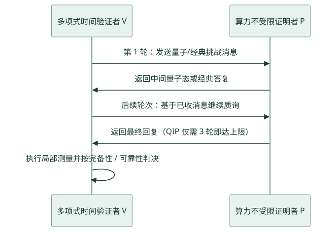
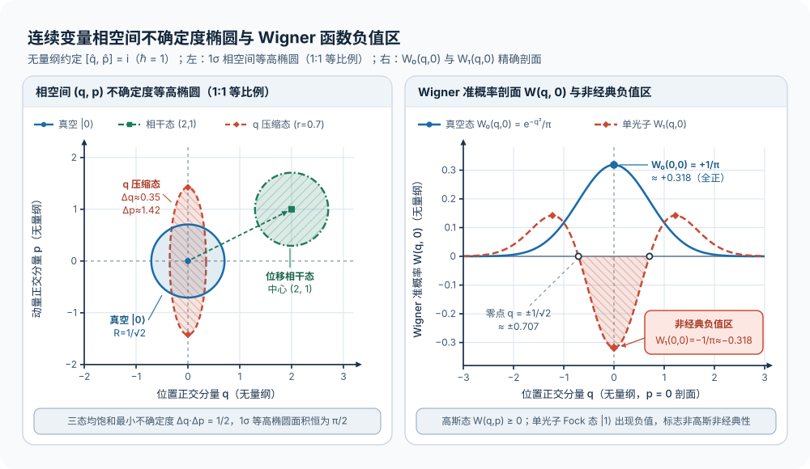

18｜量子信道、通信容量、复杂度与连续变量
前面十几章里，我们已经搭好了两套顺手的工具：在第 05 章 里，噪声与开放演化被写成密度矩阵和 Kraus 算符；在第 13 章 里，量子态配上了冯·诺依曼熵、相对熵、迹距离、根保真度和 Holevo 量。可当你真正打开一篇量子信息、计算复杂性或连续变量光量子研究论文时，很快会碰上一批新的“拦路虎”：
论文里动不动就画出一个叫 Choi 矩阵 的方阵，说“它半正定、偏迹等于单位阵，这就是一条合法信道”——它和 Kraus 算符到底是什么关系？
评估一个带噪量子门有多准时，为什么审稿人总追问钻石范数 ，而不满足于把孤立态挨个送进去测一测？
明明是同一条光纤或同一条擦除线路，怎么一会儿说容量是 0.75 0.75 0.75 0.50 0.50 0.50 1.50 1.50 1.50 n → ∞ n\to\infty n → ∞
Q I P = P S P A C E \mathrm{QIP}=\mathrm{PSPACE} QIP = PSPACE M I P ∗ = R E \mathrm{MIP}^*=\mathrm{RE} MIP ∗ = RE 量子采样复杂度 （BosonSampling、IQP、RCS 为何指向多项式层级坍塌）各自成立在什么前提下？光子芯片和微波腔里的场强是连续变化的，无限维空间里没有 Bloch 球，怎么画它的相空间图像，GKP 网格态 怎样用位移稳定子在连续相空间里切出二维逻辑量子比特，又怎么避免 Fock 截断把误差算假？
为了把这些跨度不小的硬核专题收束得脉络清爽，本章按上、中、下三篇 推进，方便你按需分遍精读：
上篇（第 1—6 节）：信道表示、钻石范数、通信容量与混态资源 ——纯化与 Uhlmann 定理、Choi 同构、钻石范数反例、量子 Stein 引理、HSW/LSD/Devetak/BSST 四类容量与超加性机理、混态纠缠资源理论；中篇（第 7—8 节）：验证复杂度、采样优越性与通信复杂度 ——交互验证谱系（Q M A / Q I P / M I P ∗ = R E \mathrm{QMA}/\mathrm{QIP}/\mathrm{MIP}^*=\mathrm{RE} QMA / QIP / MIP ∗ = RE 下篇（第 9 节）：连续变量相空间、GKP 网格码与截断边界 ——无量纲正交分量、Wigner 负性、多模辛变换与 TMSV、GKP 位移稳定子零跳步检验、Fock 截断三层误差界与能量受限钻石范数。
先修衔接提示 ：上篇与中篇需要第 03 章 、第 05 章 、第 07 章 和第 13 章 的基础；下篇（第 9 节连续变量）直接承接已前移至本章之前 的Q4：波函数、势阱、谐振子与隧穿 （物理谐振子 [ x ^ , p ^ ] = i ℏ [\hat x,\hat p]=i\hbar [ x ^ , p ^ ] = i ℏ 第 19 章 的玻色猫态与 GKP 硬件实证。
动手之前，先把本章的角色与符号口径完全钉死，杜绝同一字母两副面孔：
下面这张总览图把上篇（从量子态到信道与容量）的逻辑骨架先定格下来：

图 1｜量子态纯化、信道表示、钻石范数与通信容量之间的逻辑脉络 · 横向较长时可在图内滚动 · 打开完整图
上篇（第 1—6 节）：信道表示、钻石范数、通信容量与混态资源 ——从单态纯化出发，经由 Choi 矩阵与钻石范数刻画整条信道，再收束至量子 Stein 引理、四类通信容量及混态纠缠资源理论。
1. 纯化与 Uhlmann 定理：把混态放回更大的纯态世界
处理纯态时，我们总觉得顺手得多：只要拿一个单位列向量 ∣ ψ ⟩ |\psi\rangle ∣ ψ ⟩ ρ A \rho_A ρ A 纯态 的一部分？
答案是肯定的，这就是纯化（purification） 。打个生活里的比方：你盯着墙上一个忽明忽暗的二维影子，觉得它的变化像随机概率；但如果退后一步把三维物体本身放回视野里，影子只是把“纵深方向”投影丢掉后的结果。数学上的纯化做的是同一件事——在系统 A A A 参考系统（reference system） R R R H A ⊗ H R \mathcal H_A \otimes \mathcal H_R H A ⊗ H R ∣ ψ ⟩ A R |\psi\rangle_{AR} ∣ ψ ⟩ A R R R R ρ A \rho_A ρ A
Tr R ( ∣ ψ ⟩ ⟨ ψ ∣ A R ) = ρ A .
\operatorname{Tr}_R\bigl(|\psi\rangle\langle\psi|_{AR}\bigr) = \rho_A.
Tr R ( ∣ ψ ⟩ ⟨ ψ ∣ A R ) = ρ A . 要注意这个比方的边界：墙上的影子背后确实站着一个实物，但数学上给 ρ A \rho_A ρ A ∣ ψ ⟩ A R |\psi\rangle_{AR} ∣ ψ ⟩ A R 并不意味着 实验室里一定有一个能被你拿在手里的物理参考系统 R R R R R R
1.1 先手算一个对角混态，再推一般谱分解
拿一个最直观的单比特混态热身。设 ρ A \rho_A ρ A C 2 \mathbb C^2 C 2
ρ A = ( 0.8 0 0 0.2 ) = 0.8 ∣ 0 ⟩ ⟨ 0 ∣ + 0.2 ∣ 1 ⟩ ⟨ 1 ∣ .
\rho_A = \begin{pmatrix} 0.8 & 0 \\ 0 & 0.2 \end{pmatrix} = 0.8|0\rangle\langle 0| + 0.2|1\rangle\langle 1|.
ρ A = ( 0.8 0 0 0.2 ) = 0.8∣0 ⟩ ⟨ 0∣ + 0.2∣1 ⟩ ⟨ 1∣. 如果只在计算基 { ∣ 0 ⟩ , ∣ 1 ⟩ } \{|0\rangle,|1\rangle\} { ∣0 ⟩ , ∣1 ⟩} A A A 80 % 80\% 80% 0 0 0 20 % 20\% 20% 1 1 1 R R R
∣ ψ ⟩ A R = 0.8 ∣ 00 ⟩ + 0.2 ∣ 11 ⟩ .
|\psi\rangle_{AR} = \sqrt{0.8}\,|00\rangle + \sqrt{0.2}\,|11\rangle.
∣ ψ ⟩ A R = 0.8 ∣00 ⟩ + 0.2 ∣11 ⟩ . 先做归一化检查：两项振幅都是正实数，模平方之和为
⟨ ψ ∣ ψ ⟩ = ( 0.8 ) 2 + ( 0.2 ) 2 = 0.8 + 0.2 = 1.
\langle\psi|\psi\rangle = (\sqrt{0.8})^2 + (\sqrt{0.2})^2 = 0.8 + 0.2 = 1.
⟨ ψ ∣ ψ ⟩ = ( 0.8 ) 2 + ( 0.2 ) 2 = 0.8 + 0.2 = 1. 再按全书大端序基 ∣ 00 ⟩ , ∣ 01 ⟩ , ∣ 10 ⟩ , ∣ 11 ⟩ |00\rangle,|01\rangle,|10\rangle,|11\rangle ∣00 ⟩ , ∣01 ⟩ , ∣10 ⟩ , ∣11 ⟩ ∣ ψ ⟩ A R |\psi\rangle_{AR} ∣ ψ ⟩ A R [ 0.8 , 0 , 0 , 0.2 ] T [\sqrt{0.8}, 0, 0, \sqrt{0.2}]^T [ 0.8 , 0 , 0 , 0.2 ] T [ 0.8 , 0 , 0 , 0.2 ] [\sqrt{0.8}, 0, 0, \sqrt{0.2}] [ 0.8 , 0 , 0 , 0.2 ] 0.8 0.2 = 0.16 = 0.4 \sqrt{0.8}\sqrt{0.2}=\sqrt{0.16}=0.4 0.8 0.2 = 0.16 = 0.4 4 × 4 4\times 4 4 × 4
∣ ψ ⟩ ⟨ ψ ∣ A R = ( 0.8 0 0 0.4 0 0 0 0 0 0 0 0 0.4 0 0 0.2 ) = 0.8 ∣ 00 ⟩ ⟨ 00 ∣ + 0.4 ∣ 00 ⟩ ⟨ 11 ∣ + 0.4 ∣ 11 ⟩ ⟨ 00 ∣ + 0.2 ∣ 11 ⟩ ⟨ 11 ∣ .
|\psi\rangle\langle\psi|_{AR}
= \begin{pmatrix}
0.8 & 0 & 0 & 0.4 \\
0 & 0 & 0 & 0 \\
0 & 0 & 0 & 0 \\
0.4 & 0 & 0 & 0.2
\end{pmatrix}
= 0.8|00\rangle\langle 00| + 0.4|00\rangle\langle 11| + 0.4|11\rangle\langle 00| + 0.2|11\rangle\langle 11|.
∣ ψ ⟩ ⟨ ψ ∣ A R = 0.8 0 0 0.4 0 0 0 0 0 0 0 0 0.4 0 0 0.2 = 0.8∣00 ⟩ ⟨ 00∣ + 0.4∣00 ⟩ ⟨ 11∣ + 0.4∣11 ⟩ ⟨ 00∣ + 0.2∣11 ⟩ ⟨ 11∣. 现在对第二个比特 R R R Tr R ( ∣ a ⟩ A ∣ i ⟩ R ⟨ b ∣ A ⟨ j ∣ R ) = ∣ a ⟩ ⟨ b ∣ A ⋅ ⟨ j ∣ i ⟩ R \operatorname{Tr}_R(|a\rangle_A|i\rangle_R\langle b|_A\langle j|_R) = |a\rangle\langle b|_A \cdot \langle j|i\rangle_R Tr R ( ∣ a ⟩ A ∣ i ⟩ R ⟨ b ∣ A ⟨ j ∣ R ) = ∣ a ⟩ ⟨ b ∣ A ⋅ ⟨ j ∣ i ⟩ R
第一项：0.8 ∣ 0 ⟩ ⟨ 0 ∣ A ⋅ ⟨ 0 ∣ 0 ⟩ R = 0.8 ∣ 0 ⟩ ⟨ 0 ∣ A 0.8\,|0\rangle\langle 0|_A \cdot \langle 0|0\rangle_R = 0.8\,|0\rangle\langle 0|_A 0.8 ∣0 ⟩ ⟨ 0 ∣ A ⋅ ⟨ 0∣0 ⟩ R = 0.8 ∣0 ⟩ ⟨ 0 ∣ A
第二项：0.4 ∣ 0 ⟩ ⟨ 1 ∣ A ⋅ ⟨ 1 ∣ 0 ⟩ R = 0 0.4\,|0\rangle\langle 1|_A \cdot \langle 1|0\rangle_R = 0 0.4 ∣0 ⟩ ⟨ 1 ∣ A ⋅ ⟨ 1∣0 ⟩ R = 0 ⟨ 1 ∣ 0 ⟩ = 0 \langle 1|0\rangle=0 ⟨ 1∣0 ⟩ = 0
第三项：0.4 ∣ 1 ⟩ ⟨ 0 ∣ A ⋅ ⟨ 0 ∣ 1 ⟩ R = 0 0.4\,|1\rangle\langle 0|_A \cdot \langle 0|1\rangle_R = 0 0.4 ∣1 ⟩ ⟨ 0 ∣ A ⋅ ⟨ 0∣1 ⟩ R = 0
第四项：0.2 ∣ 1 ⟩ ⟨ 1 ∣ A ⋅ ⟨ 1 ∣ 1 ⟩ R = 0.2 ∣ 1 ⟩ ⟨ 1 ∣ A 0.2\,|1\rangle\langle 1|_A \cdot \langle 1|1\rangle_R = 0.2\,|1\rangle\langle 1|_A 0.2 ∣1 ⟩ ⟨ 1 ∣ A ⋅ ⟨ 1∣1 ⟩ R = 0.2 ∣1 ⟩ ⟨ 1 ∣ A
四项相加恰好回到 0.8 ∣ 0 ⟩ ⟨ 0 ∣ + 0.2 ∣ 1 ⟩ ⟨ 1 ∣ = ρ A 0.8|0\rangle\langle 0| + 0.2|1\rangle\langle 1| = \rho_A 0.8∣0 ⟩ ⟨ 0∣ + 0.2∣1 ⟩ ⟨ 1∣ = ρ A 0.4 0.4 0.4 R R R
把这套做法推广到任意 d A d_A d A ρ A \rho_A ρ A ρ A \rho_A ρ A 1 1 1
ρ A = ∑ i = 1 r λ i ∣ i ⟩ ⟨ i ∣ A , λ i > 0 , ∑ i = 1 r λ i = 1 ,
\rho_A = \sum_{i=1}^{r} \lambda_i |i\rangle\langle i|_A,
\qquad \lambda_i > 0, \qquad \sum_{i=1}^{r} \lambda_i = 1,
ρ A = i = 1 ∑ r λ i ∣ i ⟩ ⟨ i ∣ A , λ i > 0 , i = 1 ∑ r λ i = 1 , 其中 r = rank ( ρ A ) ≤ d A r = \operatorname{rank}(\rho_A) \le d_A r = rank ( ρ A ) ≤ d A { ∣ i ⟩ A } i = 1 r \{|i\rangle_A\}_{i=1}^r { ∣ i ⟩ A } i = 1 r H R \mathcal H_R H R dim H R ≥ r \dim \mathcal H_R \ge r dim H R ≥ r { ∣ i ⟩ R } i = 1 r \{|i\rangle_R\}_{i=1}^r { ∣ i ⟩ R } i = 1 r
∣ ψ ρ ⟩ A R = ∑ i = 1 r λ i ∣ i ⟩ A ∣ i ⟩ R .
|\psi_\rho\rangle_{AR} = \sum_{i=1}^{r} \sqrt{\lambda_i}\,|i\rangle_A |i\rangle_R.
∣ ψ ρ ⟩ A R = i = 1 ∑ r λ i ∣ i ⟩ A ∣ i ⟩ R . 检查归一化：⟨ ψ ρ ∣ ψ ρ ⟩ = ∑ i , j = 1 r λ i λ j ⟨ i ∣ j ⟩ A ⟨ i ∣ j ⟩ R = ∑ i = 1 r λ i = 1 \langle\psi_\rho|\psi_\rho\rangle = \sum_{i,j=1}^r \sqrt{\lambda_i\lambda_j}\,\langle i|j\rangle_A\langle i|j\rangle_R = \sum_{i=1}^r \lambda_i = 1 ⟨ ψ ρ ∣ ψ ρ ⟩ = ∑ i , j = 1 r λ i λ j ⟨ i ∣ j ⟩ A ⟨ i ∣ j ⟩ R = ∑ i = 1 r λ i = 1 R R R
Tr R ( ∣ ψ ρ ⟩ ⟨ ψ ρ ∣ A R ) = ∑ i , j = 1 r λ i λ j ∣ i ⟩ ⟨ j ∣ A Tr ( ∣ i ⟩ ⟨ j ∣ R ) = ∑ i , j = 1 r λ i λ j ∣ i ⟩ ⟨ j ∣ A δ i j = ∑ i = 1 r λ i ∣ i ⟩ ⟨ i ∣ A = ρ A .
\begin{aligned}
\operatorname{Tr}_R\bigl(|\psi_\rho\rangle\langle\psi_\rho|_{AR}\bigr)
&= \sum_{i,j=1}^{r} \sqrt{\lambda_i\lambda_j}\,|i\rangle\langle j|_A\,\operatorname{Tr}\bigl(|i\rangle\langle j|_R\bigr) \\
&= \sum_{i,j=1}^{r} \sqrt{\lambda_i\lambda_j}\,|i\rangle\langle j|_A\,\delta_{ij}
= \sum_{i=1}^{r} \lambda_i |i\rangle\langle i|_A = \rho_A.
\end{aligned}
Tr R ( ∣ ψ ρ ⟩ ⟨ ψ ρ ∣ A R ) = i , j = 1 ∑ r λ i λ j ∣ i ⟩ ⟨ j ∣ A Tr ( ∣ i ⟩ ⟨ j ∣ R ) = i , j = 1 ∑ r λ i λ j ∣ i ⟩ ⟨ j ∣ A δ ij = i = 1 ∑ r λ i ∣ i ⟩ ⟨ i ∣ A = ρ A . 于是任意有限维密度矩阵都存在纯化，且最小所需的参考系统维数恰好等于 rank ( ρ A ) \operatorname{rank}(\rho_A) rank ( ρ A )
1.2 纯化的自由度与系综不唯一性
同一个混态的纯化不是唯一的 。如果在参考系统 R R R V R : H R → H R ′ V_R: \mathcal H_R \to \mathcal H_{R'} V R : H R → H R ′ V R † V R = I R V_R^\dagger V_R = I_R V R † V R = I R U R U_R U R ∣ ψ ~ ⟩ A R ′ = ( I A ⊗ V R ) ∣ ψ ρ ⟩ A R |\tilde\psi\rangle_{AR'} = (I_A \otimes V_R)|\psi_\rho\rangle_{AR} ∣ ψ ~ ⟩ A R ′ = ( I A ⊗ V R ) ∣ ψ ρ ⟩ A R ρ A \rho_A ρ A
Tr R ′ [ ( I A ⊗ V R ) ∣ ψ ρ ⟩ ⟨ ψ ρ ∣ ( I A ⊗ V R † ) ] = Tr R [ ( I A ⊗ V R † V R ) ∣ ψ ρ ⟩ ⟨ ψ ρ ∣ ] = Tr R ( ∣ ψ ρ ⟩ ⟨ ψ ρ ∣ ) = ρ A .
\operatorname{Tr}_{R'}\bigl[(I_A\otimes V_R)|\psi_\rho\rangle\langle\psi_\rho|(I_A\otimes V_R^\dagger)\bigr]
= \operatorname{Tr}_R\bigl[(I_A\otimes V_R^\dagger V_R)|\psi_\rho\rangle\langle\psi_\rho|\bigr]
= \operatorname{Tr}_R\bigl(|\psi_\rho\rangle\langle\psi_\rho|\bigr) = \rho_A.
Tr R ′ [ ( I A ⊗ V R ) ∣ ψ ρ ⟩ ⟨ ψ ρ ∣ ( I A ⊗ V R † ) ] = Tr R [ ( I A ⊗ V R † V R ) ∣ ψ ρ ⟩ ⟨ ψ ρ ∣ ] = Tr R ( ∣ ψ ρ ⟩ ⟨ ψ ρ ∣ ) = ρ A . 反过来，如果两个纯态 ∣ ψ 1 ⟩ A R |\psi_1\rangle_{AR} ∣ ψ 1 ⟩ A R ∣ ψ 2 ⟩ A R |\psi_2\rangle_{AR} ∣ ψ 2 ⟩ A R ρ A \rho_A ρ A A A A λ i \sqrt{\lambda_i} λ i ∣ i ⟩ A |i\rangle_A ∣ i ⟩ A R R R R R R U R U_R U R ∣ ψ 2 ⟩ A R = ( I A ⊗ U R ) ∣ ψ 1 ⟩ A R |\psi_2\rangle_{AR} = (I_A\otimes U_R)|\psi_1\rangle_{AR} ∣ ψ 2 ⟩ A R = ( I A ⊗ U R ) ∣ ψ 1 ⟩ A R
这个纯化自由度带来了一个非常深刻的物理结论（Schrödinger–HJW 定理 的直觉源头）：取最大混态 ρ A = I / 2 \rho_A = I/2 ρ A = I /2 ∣ Φ + ⟩ A R = 1 2 ( ∣ 00 ⟩ + ∣ 11 ⟩ ) |\Phi^+\rangle_{AR} = \frac{1}{\sqrt 2}(|00\rangle + |11\rangle) ∣ Φ + ⟩ A R = 2 1 ( ∣00 ⟩ + ∣11 ⟩) ∣ 0 ⟩ = ∣ + ⟩ + ∣ − ⟩ 2 |0\rangle = \frac{|+\rangle+|-\rangle}{\sqrt 2} ∣0 ⟩ = 2 ∣ + ⟩ + ∣ − ⟩ ∣ 1 ⟩ = ∣ + ⟩ − ∣ − ⟩ 2 |1\rangle = \frac{|+\rangle-|-\rangle}{\sqrt 2} ∣1 ⟩ = 2 ∣ + ⟩ − ∣ − ⟩
∣ Φ + ⟩ A R = 1 2 ( ∣ + ⟩ + ∣ − ⟩ 2 ⊗ ∣ + ⟩ + ∣ − ⟩ 2 + ∣ + ⟩ − ∣ − ⟩ 2 ⊗ ∣ + ⟩ − ∣ − ⟩ 2 ) = 1 2 2 ( ∣ + + ⟩ + ∣ + − ⟩ + ∣ − + ⟩ + ∣ − − ⟩ + ∣ + + ⟩ − ∣ + − ⟩ − ∣ − + ⟩ + ∣ − − ⟩ ) = 1 2 ( ∣ + + ⟩ + ∣ − − ⟩ ) .
\begin{aligned}
|\Phi^+\rangle_{AR}
&= \frac{1}{\sqrt 2}\left(\frac{|+\rangle+|-\rangle}{\sqrt 2}\otimes\frac{|+\rangle+|-\rangle}{\sqrt 2}
+ \frac{|+\rangle-|-\rangle}{\sqrt 2}\otimes\frac{|+\rangle-|-\rangle}{\sqrt 2}\right) \\
&= \frac{1}{2\sqrt 2}\bigl(|++\rangle+|+-\rangle+|-+\rangle+|--\rangle+|++\rangle-|+-\rangle-|-+\rangle+|--\rangle\bigr) \\
&= \frac{1}{\sqrt 2}\bigl(|++\rangle + |--\rangle\bigr).
\end{aligned}
∣ Φ + ⟩ A R = 2 1 ( 2 ∣ + ⟩ + ∣ − ⟩ ⊗ 2 ∣ + ⟩ + ∣ − ⟩ + 2 ∣ + ⟩ − ∣ − ⟩ ⊗ 2 ∣ + ⟩ − ∣ − ⟩ ) = 2 2 1 ( ∣ + + ⟩ + ∣ + − ⟩ + ∣ − + ⟩ + ∣ − − ⟩ + ∣ + + ⟩ − ∣ + − ⟩ − ∣ − + ⟩ + ∣ − − ⟩ ) = 2 1 ( ∣ + + ⟩ + ∣ − − ⟩ ) . 如果在参考系统 R R R Z Z Z A A A 1 / 2 1/2 1/2 { ∣ 0 ⟩ , ∣ 1 ⟩ } \{|0\rangle, |1\rangle\} { ∣0 ⟩ , ∣1 ⟩} R R R X X X A A A 1 / 2 1/2 1/2 { ∣ + ⟩ , ∣ − ⟩ } \{|+\rangle, |-\rangle\} { ∣ + ⟩ , ∣ − ⟩} A A A I / 2 I/2 I /2 不能把混态理解成“系统背后一定藏着某一份唯一的纯态清单，只是我们忘了抽到哪张” ：凡在 R R R ρ A \rho_A ρ A
1.3 Uhlmann 定理：根保真度与信道单调性
在第 13 章 里，我们定义了两态的根保真度（root fidelity） ：
F ( ρ , σ ) = ∥ ρ σ ∥ 1 = Tr ρ σ ρ .
F(\rho, \sigma) = \left\|\sqrt\rho\sqrt\sigma\right\|_1 = \operatorname{Tr}\sqrt{\sqrt\rho\,\sigma\,\sqrt\rho}.
F ( ρ , σ ) = ρ σ 1 = Tr ρ σ ρ . 这个带两层矩阵开方的公式乍看之下很抽象，纯化却能把它翻译成再直白不过的几何重叠——这就是 Uhlmann 定理 （Uhlmann, 1976）。选定一个维数满足 dim H R ≥ max { rank ( ρ ) , rank ( σ ) } \dim \mathcal H_R \ge \max\{\operatorname{rank}(\rho),\operatorname{rank}(\sigma)\} dim H R ≥ max { rank ( ρ ) , rank ( σ )} R R R ρ \rho ρ ∣ ψ ρ ⟩ A R |\psi_\rho\rangle_{AR} ∣ ψ ρ ⟩ A R ∣ ψ σ ⟩ A R |\psi_\sigma\rangle_{AR} ∣ ψ σ ⟩ A R σ \sigma σ A R AR A R
F ( ρ , σ ) = max ∣ ψ σ ⟩ A R ∣ ⟨ ψ ρ ∣ ψ σ ⟩ ∣ .
F(\rho, \sigma) = \max_{|\psi_\sigma\rangle_{AR}} \bigl|\langle\psi_\rho | \psi_\sigma\rangle\bigr|.
F ( ρ , σ ) = ∣ ψ σ ⟩ A R max ⟨ ψ ρ ∣ ψ σ ⟩ . 当其中一方是纯态 σ = ∣ ϕ ⟩ ⟨ ϕ ∣ \sigma = |\phi\rangle\langle\phi| σ = ∣ ϕ ⟩ ⟨ ϕ ∣ ∣ ϕ ⟩ A ⊗ ∣ χ ⟩ R |\phi\rangle_A \otimes |\chi\rangle_R ∣ ϕ ⟩ A ⊗ ∣ χ ⟩ R
F ( ρ , ∣ ϕ ⟩ ⟨ ϕ ∣ ) = ⟨ ϕ ∣ ρ ∣ ϕ ⟩ .
F(\rho, |\phi\rangle\langle\phi|) = \sqrt{\langle\phi|\rho|\phi\rangle}.
F ( ρ , ∣ ϕ ⟩ ⟨ ϕ ∣ ) = ⟨ ϕ ∣ ρ ∣ ϕ ⟩ . 我们用三组手算数字核对 Uhlmann 定理与矩阵定义的一致性：
最大混态与纯态 ：取 ρ = I / 2 \rho = I/2 ρ = I /2 σ = ∣ 0 ⟩ ⟨ 0 ∣ \sigma = |0\rangle\langle 0| σ = ∣0 ⟩ ⟨ 0∣ F = ⟨ 0 ∣ ( I / 2 ) ∣ 0 ⟩ = 1 2 ≈ 0.7071 F = \sqrt{\langle 0|(I/2)|0\rangle} = \frac{1}{\sqrt 2} \approx 0.7071 F = ⟨ 0∣ ( I /2 ) ∣0 ⟩ = 2 1 ≈ 0.7071 ∣ ψ ρ ⟩ = 1 2 ( ∣ 00 ⟩ + ∣ 11 ⟩ ) |\psi_\rho\rangle = \frac{1}{\sqrt 2}(|00\rangle+|11\rangle) ∣ ψ ρ ⟩ = 2 1 ( ∣00 ⟩ + ∣11 ⟩) ∣ ψ σ ⟩ = ∣ 00 ⟩ |\psi_\sigma\rangle = |00\rangle ∣ ψ σ ⟩ = ∣00 ⟩ ∣ ⟨ ψ ρ ∣ ψ σ ⟩ ∣ = 1 2 |\langle\psi_\rho|\psi_\sigma\rangle| = \frac{1}{\sqrt 2} ∣ ⟨ ψ ρ ∣ ψ σ ⟩ ∣ = 2 1 ∣ 01 ⟩ |01\rangle ∣01 ⟩ 0 0 0 ∣ 00 ⟩ |00\rangle ∣00 ⟩ 不均匀对角态与纯态 ：取 ρ = diag ( 0.8 , 0.2 ) \rho = \operatorname{diag}(0.8, 0.2) ρ = diag ( 0.8 , 0.2 ) σ = ∣ 0 ⟩ ⟨ 0 ∣ \sigma = |0\rangle\langle 0| σ = ∣0 ⟩ ⟨ 0∣ F = 0.8 = 2 5 ≈ 0.8944 F = \sqrt{0.8} = \frac{2}{\sqrt 5} \approx 0.8944 F = 0.8 = 5 2 ≈ 0.8944 ∣ ψ ρ ⟩ = 0.8 ∣ 00 ⟩ + 0.2 ∣ 11 ⟩ |\psi_\rho\rangle = \sqrt{0.8}|00\rangle + \sqrt{0.2}|11\rangle ∣ ψ ρ ⟩ = 0.8 ∣00 ⟩ + 0.2 ∣11 ⟩ ∣ ψ σ ⟩ = ∣ 00 ⟩ |\psi_\sigma\rangle = |00\rangle ∣ ψ σ ⟩ = ∣00 ⟩ 0.8 ≈ 0.8944 \sqrt{0.8} \approx 0.8944 0.8 ≈ 0.8944 0.8944 0.8944 0.8944 F F F F 2 = 0.8 F^2 = 0.8 F 2 = 0.8 两个混态之间 ：取 ρ = diag ( 0.8 , 0.2 ) \rho = \operatorname{diag}(0.8, 0.2) ρ = diag ( 0.8 , 0.2 ) σ = I / 2 = diag ( 0.5 , 0.5 ) \sigma = I/2 = \operatorname{diag}(0.5, 0.5) σ = I /2 = diag ( 0.5 , 0.5 ) ρ σ = diag ( 0.4 , 0.1 ) \sqrt\rho\sqrt\sigma = \operatorname{diag}(\sqrt{0.4}, \sqrt{0.1}) ρ σ = diag ( 0.4 , 0.1 )
F ( ρ , σ ) = 0.4 + 0.1 = 2 0.1 + 0.1 = 3 10 ≈ 0.9487.
F(\rho,\sigma) = \sqrt{0.4} + \sqrt{0.1} = 2\sqrt{0.1} + \sqrt{0.1} = \frac{3}{\sqrt{10}} \approx 0.9487.
F ( ρ , σ ) = 0.4 + 0.1 = 2 0.1 + 0.1 = 10 3 ≈ 0.9487. 用纯化回验：取 ∣ ψ ρ ⟩ = 0.8 ∣ 00 ⟩ + 0.2 ∣ 11 ⟩ |\psi_\rho\rangle = \sqrt{0.8}|00\rangle + \sqrt{0.2}|11\rangle ∣ ψ ρ ⟩ = 0.8 ∣00 ⟩ + 0.2 ∣11 ⟩ ∣ ψ σ ⟩ = 0.5 ∣ 00 ⟩ + 0.5 ∣ 11 ⟩ |\psi_\sigma\rangle = \sqrt{0.5}|00\rangle + \sqrt{0.5}|11\rangle ∣ ψ σ ⟩ = 0.5 ∣00 ⟩ + 0.5 ∣11 ⟩ 0.8 × 0.5 + 0.2 × 0.5 = 0.4 + 0.1 = 3 10 \sqrt{0.8\times 0.5} + \sqrt{0.2\times 0.5} = \sqrt{0.4}+\sqrt{0.1} = \frac{3}{\sqrt{10}} 0.8 × 0.5 + 0.2 × 0.5 = 0.4 + 0.1 = 10 3
Uhlmann 定理还能在四行之内证明一个核心性质——保真度的信道单调性 （数据处理不会让两态更好区分）：对任意量子信道 E : A → B \mathcal E: A\to B E : A → B 第 05 章 的 Stinespring 扩张，存在等距算符 V : H A → H B ⊗ H E V: \mathcal H_A \to \mathcal H_B \otimes \mathcal H_E V : H A → H B ⊗ H E E ( ⋅ ) = Tr E ( V ( ⋅ ) V † ) \mathcal E(\cdot) = \operatorname{Tr}_E(V(\cdot)V^\dagger) E ( ⋅ ) = Tr E ( V ( ⋅ ) V † ) ∣ ψ ρ ⟩ A R , ∣ ψ σ ⟩ A R |\psi_\rho\rangle_{AR}, |\psi_\sigma\rangle_{AR} ∣ ψ ρ ⟩ A R , ∣ ψ σ ⟩ A R F ( ρ , σ ) F(\rho,\sigma) F ( ρ , σ )
∣ Ψ ρ ⟩ B R E = ( V ⊗ I R ) ∣ ψ ρ ⟩ A R , ∣ Ψ σ ⟩ B R E = ( V ⊗ I R ) ∣ ψ σ ⟩ A R
|\Psi_\rho\rangle_{BRE} = (V \otimes I_R)|\psi_\rho\rangle_{AR},
\qquad
|\Psi_\sigma\rangle_{BRE} = (V \otimes I_R)|\psi_\sigma\rangle_{AR}
∣ Ψ ρ ⟩ BRE = ( V ⊗ I R ) ∣ ψ ρ ⟩ A R , ∣ Ψ σ ⟩ BRE = ( V ⊗ I R ) ∣ ψ σ ⟩ A R 分别是 E ( ρ ) \mathcal E(\rho) E ( ρ ) E ( σ ) \mathcal E(\sigma) E ( σ ) R E RE RE V † V = I A V^\dagger V = I_A V † V = I A R E RE RE 全部 纯化取最大值，于是立得：
F ( E ( ρ ) , E ( σ ) ) ≥ ∣ ⟨ Ψ ρ ∣ Ψ σ ⟩ ∣ = ∣ ⟨ ψ ρ ∣ ( V † V ⊗ I R ) ∣ ψ σ ⟩ ∣ = ∣ ⟨ ψ ρ ∣ ψ σ ⟩ ∣ = F ( ρ , σ ) .
F\bigl(\mathcal E(\rho), \mathcal E(\sigma)\bigr)
\ge \bigl|\langle\Psi_\rho | \Psi_\sigma\rangle\bigr|
= \bigl|\langle\psi_\rho | (V^\dagger V \otimes I_R) | \psi_\sigma\rangle\bigr|
= \bigl|\langle\psi_\rho | \psi_\sigma\rangle\bigr|
= F(\rho,\sigma).
F ( E ( ρ ) , E ( σ ) ) ≥ ⟨ Ψ ρ ∣ Ψ σ ⟩ = ⟨ ψ ρ ∣ ( V † V ⊗ I R ) ∣ ψ σ ⟩ = ⟨ ψ ρ ∣ ψ σ ⟩ = F ( ρ , σ ) . 一步都不用硬算矩阵开方，几何直觉一目了然。
2. Choi–Jamiołkowski 同构：用一个矩阵完整刻画整条信道
在第 05 章 里，我们看到一条合法的量子信道 E : L ( H A ) → L ( H B ) \mathcal E: L(\mathcal H_A) \to L(\mathcal H_B) E : L ( H A ) → L ( H B ) 保迹 （TP）与完全正 （CP）。其中最让人头疼的是“完全正”：它要求对任意维数 的辅助参考系统 R R R I R ⊗ E \mathcal I_R \otimes \mathcal E I R ⊗ E d R = 1 , 2 , 3 , … d_R = 1, 2, 3, \dots d R = 1 , 2 , 3 , …
Choi–Jamiołkowski 同构 （Jamiołkowski, 1972；Choi, 1975）的威力就在这里：它把“检验无穷多个参考维数”彻底压缩成只检查一个 ( d A d B ) × ( d A d B ) (d_A d_B) \times (d_A d_B) ( d A d B ) × ( d A d B ) 。
2.1 定义、逆向恢复与四条结构对应
固定 H A \mathcal H_A H A { ∣ i ⟩ A } i = 0 d A − 1 \{|i\rangle_A\}_{i=0}^{d_A-1} { ∣ i ⟩ A } i = 0 d A − 1 A A A A ′ A' A ′ 未归一化 的最大纠缠向量：
∣ Ω ⟩ A ′ A = ∑ i = 0 d A − 1 ∣ i ⟩ A ′ ∣ i ⟩ A .
|\Omega\rangle_{A'A} = \sum_{i=0}^{d_A-1} |i\rangle_{A'} |i\rangle_A.
∣Ω ⟩ A ′ A = i = 0 ∑ d A − 1 ∣ i ⟩ A ′ ∣ i ⟩ A . 注意它的范数平方是 ⟨ Ω ∣ Ω ⟩ = d A \langle\Omega|\Omega\rangle = d_A ⟨ Ω∣Ω ⟩ = d A 1 1 1 E : L ( H A ) → L ( H B ) \mathcal E: L(\mathcal H_A) \to L(\mathcal H_B) E : L ( H A ) → L ( H B ) E \mathcal E E A A A A ′ A' A ′ E \mathcal E E 未归一化 Choi 矩阵 ：
J E = ( I A ′ ⊗ E A → B ) ( ∣ Ω ⟩ ⟨ Ω ∣ A ′ A ) = ∑ i , j = 0 d A − 1 ∣ i ⟩ ⟨ j ∣ A ′ ⊗ E ( ∣ i ⟩ ⟨ j ∣ A ) .
J_{\mathcal E}
= \bigl(\mathcal I_{A'} \otimes \mathcal E_{A\to B}\bigr)\bigl(|\Omega\rangle\langle\Omega|_{A'A}\bigr)
= \sum_{i,j=0}^{d_A-1} |i\rangle\langle j|_{A'} \otimes \mathcal E\bigl(|i\rangle\langle j|_A\bigr).
J E = ( I A ′ ⊗ E A → B ) ( ∣Ω ⟩ ⟨ Ω ∣ A ′ A ) = i , j = 0 ∑ d A − 1 ∣ i ⟩ ⟨ j ∣ A ′ ⊗ E ( ∣ i ⟩ ⟨ j ∣ A ) . 换个分块视角更容易一眼看穿 J E J_{\mathcal E} J E d A × d A d_A \times d_A d A × d A ( i , j ) (i,j) ( i , j ) d B × d B d_B \times d_B d B × d B ∣ i ⟩ ⟨ j ∣ |i\rangle\langle j| ∣ i ⟩ ⟨ j ∣ E \mathcal E E E ( ∣ i ⟩ ⟨ j ∣ ) \mathcal E(|i\rangle\langle j|) E ( ∣ i ⟩ ⟨ j ∣ )
之所以称它为“同构”，是因为知道了矩阵 J E J_{\mathcal E} J E E \mathcal E E X ∈ L ( H A ) X \in L(\mathcal H_A) X ∈ L ( H A )
E ( X ) = Tr A ′ [ ( X T ⊗ I B ) J E ] ,
\mathcal E(X) = \operatorname{Tr}_{A'}\!\Bigl[\bigl(X^T \otimes I_B\bigr) J_{\mathcal E}\Bigr],
E ( X ) = Tr A ′ [ ( X T ⊗ I B ) J E ] , 这里的转置 X T X^T X T ∣ Ω ⟩ |\Omega\rangle ∣Ω ⟩ X = ∑ k , l X k l ∣ k ⟩ ⟨ l ∣ X = \sum_{k,l} X_{kl}|k\rangle\langle l| X = ∑ k , l X k l ∣ k ⟩ ⟨ l ∣ X T = ∑ k , l X k l ∣ l ⟩ ⟨ k ∣ X^T = \sum_{k,l} X_{kl}|l\rangle\langle k| X T = ∑ k , l X k l ∣ l ⟩ ⟨ k ∣
Tr A ′ [ ( X T ⊗ I B ) J E ] = ∑ i , j , k , l X k l Tr A ′ ( ∣ l ⟩ ⟨ k ∣ i ⟩ ⟨ j ∣ ) E ( ∣ i ⟩ ⟨ j ∣ ) = ∑ i , j , k , l X k l δ k i δ l j E ( ∣ i ⟩ ⟨ j ∣ ) = ∑ i , j X i j E ( ∣ i ⟩ ⟨ j ∣ ) = E ( X ) .
\begin{aligned}
\operatorname{Tr}_{A'}\!\Bigl[\bigl(X^T \otimes I_B\bigr) J_{\mathcal E}\Bigr]
&= \sum_{i,j,k,l} X_{kl}\,\operatorname{Tr}_{A'}\bigl(|l\rangle\langle k|i\rangle\langle j|\bigr)\,\mathcal E(|i\rangle\langle j|) \\
&= \sum_{i,j,k,l} X_{kl}\,\delta_{ki}\,\delta_{lj}\,\mathcal E(|i\rangle\langle j|)
= \sum_{i,j} X_{ij}\,\mathcal E(|i\rangle\langle j|) = \mathcal E(X).
\end{aligned}
Tr A ′ [ ( X T ⊗ I B ) J E ] = i , j , k , l ∑ X k l Tr A ′ ( ∣ l ⟩ ⟨ k ∣ i ⟩ ⟨ j ∣ ) E ( ∣ i ⟩ ⟨ j ∣ ) = i , j , k , l ∑ X k l δ ki δ l j E ( ∣ i ⟩ ⟨ j ∣ ) = i , j ∑ X ij E ( ∣ i ⟩ ⟨ j ∣ ) = E ( X ) . 线性映射与二分算符之间由此建立一一对应，而且信道的全部核心物理属性都在 J E J_{\mathcal E} J E
保厄米性 ：E ( X † ) = E ( X ) † ⟺ J E = J E † \mathcal E(X^\dagger) = \mathcal E(X)^\dagger \iff J_{\mathcal E} = J_{\mathcal E}^\dagger E ( X † ) = E ( X ) † ⟺ J E = J E † 完全正（CP） ：E \mathcal E E ⟺ J E ⪰ 0 \iff J_{\mathcal E} \succeq 0 ⟺ J E ⪰ 0 保迹（TP） ：E \mathcal E E ⟺ Tr B ( J E ) = I A ′ \iff \operatorname{Tr}_B(J_{\mathcal E}) = I_{A'} ⟺ Tr B ( J E ) = I A ′ 最小 Kraus 秩与显式构造 ：若 J E ⪰ 0 J_{\mathcal E} \succeq 0 J E ⪰ 0 J E = ∑ k = 1 r ∣ v k ⟩ ⟨ v k ∣ J_{\mathcal E} = \sum_{k=1}^{r} |v_k\rangle\langle v_k| J E = ∑ k = 1 r ∣ v k ⟩ ⟨ v k ∣ r = rank ( J E ) ≤ d A d B r = \operatorname{rank}(J_{\mathcal E}) \le d_A d_B r = rank ( J E ) ≤ d A d B ∣ v k ⟩ ∈ H A ′ ⊗ H B |v_k\rangle \in \mathcal H_{A'}\otimes\mathcal H_B ∣ v k ⟩ ∈ H A ′ ⊗ H B ∣ v k ⟩ = ∑ i , m ( v k ) i m ∣ i ⟩ A ′ ∣ m ⟩ B |v_k\rangle = \sum_{i,m} (v_k)_{im}|i\rangle_{A'}|m\rangle_B ∣ v k ⟩ = ∑ i , m ( v k ) im ∣ i ⟩ A ′ ∣ m ⟩ B 按列重排 为 d B × d A d_B\times d_A d B × d A ( K k ) m i = ( v k ) i m (K_k)_{mi} = (v_k)_{im} ( K k ) mi = ( v k ) im i i i d B d_B d B i i i d A × d B d_A\times d_B d A × d B ∣ v k ⟩ = ( I A ′ ⊗ K k ) ∣ Ω ⟩ |v_k\rangle = (I_{A'}\otimes K_k)|\Omega\rangle ∣ v k ⟩ = ( I A ′ ⊗ K k ) ∣Ω ⟩ { K k } k = 1 r \{K_k\}_{k=1}^r { K k } k = 1 r E \mathcal E E 最小数目 Kraus 算符！
归一化约定对照 ：不少教材（如 Wilde《量子信息论》）喜欢把输入换成归一化最大纠缠态 ∣ Φ d A ⟩ = ∣ Ω ⟩ / d A |\Phi_{d_A}\rangle = |\Omega\rangle/\sqrt{d_A} ∣ Φ d A ⟩ = ∣Ω ⟩ / d A 1 1 1 归一化 Choi 态 Φ E = J E / d A \Phi^{\mathcal E} = J_{\mathcal E}/d_A Φ E = J E / d A
Tr ( J E ) = d A ⟷ Tr ( Φ E ) = 1 \operatorname{Tr}(J_{\mathcal E}) = d_A \longleftrightarrow \operatorname{Tr}(\Phi^{\mathcal E}) = 1 Tr ( J E ) = d A ⟷ Tr ( Φ E ) = 1 保迹条件 Tr B ( J E ) = I A ′ ⟷ Tr B ( Φ E ) = I A ′ / d A \operatorname{Tr}_B(J_{\mathcal E}) = I_{A'} \longleftrightarrow \operatorname{Tr}_B(\Phi^{\mathcal E}) = I_{A'}/d_A Tr B ( J E ) = I A ′ ⟷ Tr B ( Φ E ) = I A ′ / d A
恢复公式 E ( X ) = Tr A ′ [ ( X T ⊗ I B ) J E ] ⟷ E ( X ) = d A Tr A ′ [ ( X T ⊗ I B ) Φ E ] \mathcal E(X) = \operatorname{Tr}_{A'}[(X^T\otimes I_B)J_{\mathcal E}] \longleftrightarrow \mathcal E(X) = d_A \operatorname{Tr}_{A'}[(X^T\otimes I_B)\Phi^{\mathcal E}] E ( X ) = Tr A ′ [( X T ⊗ I B ) J E ] ⟷ E ( X ) = d A Tr A ′ [( X T ⊗ I B ) Φ E ]
读论文见到 Choi 矩阵时，第一件事就是看总迹是 d A d_A d A 1 1 1
2.2 三个手算样板：恒等信道、转置反例与复位信道
下面在单比特（d A = d B = 2 d_A = d_B = 2 d A = d B = 2 ∣ Ω ⟩ = ∣ 00 ⟩ + ∣ 11 ⟩ |\Omega\rangle = |00\rangle + |11\rangle ∣Ω ⟩ = ∣00 ⟩ + ∣11 ⟩ ∣ 00 ⟩ , ∣ 01 ⟩ , ∣ 10 ⟩ , ∣ 11 ⟩ |00\rangle,|01\rangle,|10\rangle,|11\rangle ∣00 ⟩ , ∣01 ⟩ , ∣10 ⟩ , ∣11 ⟩
样板一：单比特恒等信道 I ( X ) = X \mathcal I(X) = X I ( X ) = X
直接把 ∣ Ω ⟩ = [ 1 , 0 , 0 , 1 ] T |\Omega\rangle = [1,0,0,1]^T ∣Ω ⟩ = [ 1 , 0 , 0 , 1 ] T
J I = ∣ Ω ⟩ ⟨ Ω ∣ = ( 1 0 0 1 0 0 0 0 0 0 0 0 1 0 0 1 ) .
J_{\mathcal I} = |\Omega\rangle\langle\Omega|
= \begin{pmatrix}
1 & 0 & 0 & 1 \\
0 & 0 & 0 & 0 \\
0 & 0 & 0 & 0 \\
1 & 0 & 0 & 1
\end{pmatrix}.
J I = ∣Ω ⟩ ⟨ Ω∣ = 1 0 0 1 0 0 0 0 0 0 0 0 1 0 0 1 . 检查 CP：因为 ∣ Φ + ⟩ = ∣ Ω ⟩ / 2 |\Phi^+\rangle = |\Omega\rangle/\sqrt 2 ∣ Φ + ⟩ = ∣Ω ⟩ / 2 J I = 2 ∣ Φ + ⟩ ⟨ Φ + ∣ J_{\mathcal I} = 2|\Phi^+\rangle\langle\Phi^+| J I = 2∣ Φ + ⟩ ⟨ Φ + ∣ 2 , 0 , 0 , 0 2, 0, 0, 0 2 , 0 , 0 , 0 2 × 2 2\times 2 2 × 2 J I = ( ∣ 0 ⟩ ⟨ 0 ∣ ∣ 0 ⟩ ⟨ 1 ∣ ∣ 1 ⟩ ⟨ 0 ∣ ∣ 1 ⟩ ⟨ 1 ∣ ) J_{\mathcal I} = \begin{pmatrix} |0\rangle\langle 0| & |0\rangle\langle 1| \\ |1\rangle\langle 0| & |1\rangle\langle 1| \end{pmatrix} J I = ( ∣0 ⟩ ⟨ 0∣ ∣1 ⟩ ⟨ 0∣ ∣0 ⟩ ⟨ 1∣ ∣1 ⟩ ⟨ 1∣ ) B B B ( 1 0 0 1 ) = I 2 \begin{pmatrix} 1 & 0 \\ 0 & 1 \end{pmatrix} = I_2 ( 1 0 0 1 ) = I 2 2 = d A 2 = d_A 2 = d A ∣ Ω ⟩ |\Omega\rangle ∣Ω ⟩ 2 × 2 2\times 2 2 × 2 K 0 = I 2 K_0 = I_2 K 0 = I 2
样板二：转置映射 T ( X ) = X T \mathcal T(X) = X^T T ( X ) = X T
把基矩阵逐个喂进 T \mathcal T T T ( ∣ 0 ⟩ ⟨ 0 ∣ ) = ∣ 0 ⟩ ⟨ 0 ∣ \mathcal T(|0\rangle\langle 0|) = |0\rangle\langle 0| T ( ∣0 ⟩ ⟨ 0∣ ) = ∣0 ⟩ ⟨ 0∣ T ( ∣ 0 ⟩ ⟨ 1 ∣ ) = ∣ 1 ⟩ ⟨ 0 ∣ \mathcal T(|0\rangle\langle 1|) = |1\rangle\langle 0| T ( ∣0 ⟩ ⟨ 1∣ ) = ∣1 ⟩ ⟨ 0∣ T ( ∣ 1 ⟩ ⟨ 0 ∣ ) = ∣ 0 ⟩ ⟨ 1 ∣ \mathcal T(|1\rangle\langle 0|) = |0\rangle\langle 1| T ( ∣1 ⟩ ⟨ 0∣ ) = ∣0 ⟩ ⟨ 1∣ T ( ∣ 1 ⟩ ⟨ 1 ∣ ) = ∣ 1 ⟩ ⟨ 1 ∣ \mathcal T(|1\rangle\langle 1|) = |1\rangle\langle 1| T ( ∣1 ⟩ ⟨ 1∣ ) = ∣1 ⟩ ⟨ 1∣ 4 × 4 4\times 4 4 × 4 W 2 W_2 W 2
J T = ( ∣ 0 ⟩ ⟨ 0 ∣ ∣ 1 ⟩ ⟨ 0 ∣ ∣ 0 ⟩ ⟨ 1 ∣ ∣ 1 ⟩ ⟨ 1 ∣ ) = ( 1 0 0 0 0 0 1 0 0 1 0 0 0 0 0 1 ) = W 2 .
J_{\mathcal T}
= \begin{pmatrix}
|0\rangle\langle 0| & |1\rangle\langle 0| \\
|0\rangle\langle 1| & |1\rangle\langle 1|
\end{pmatrix}
= \begin{pmatrix}
1 & 0 & 0 & 0 \\
0 & 0 & 1 & 0 \\
0 & 1 & 0 & 0 \\
0 & 0 & 0 & 1
\end{pmatrix} = W_2.
J T = ( ∣0 ⟩ ⟨ 0∣ ∣0 ⟩ ⟨ 1∣ ∣1 ⟩ ⟨ 0∣ ∣1 ⟩ ⟨ 1∣ ) = 1 0 0 0 0 0 1 0 0 1 0 0 0 0 0 1 = W 2 . 检查 TP：四个 2 × 2 2\times 2 2 × 2 1 , 0 , 0 , 1 1, 0, 0, 1 1 , 0 , 0 , 1 Tr B ( J T ) = I 2 \operatorname{Tr}_B(J_{\mathcal T}) = I_2 Tr B ( J T ) = I 2 ρ \rho ρ T ( ρ ) ⪰ 0 \mathcal T(\rho) \succeq 0 T ( ρ ) ⪰ 0 ∣ 01 ⟩ , ∣ 10 ⟩ |01\rangle,|10\rangle ∣01 ⟩ , ∣10 ⟩ 2 × 2 2\times 2 2 × 2 ( 0 1 1 0 ) \begin{pmatrix}0&1\\1&0\end{pmatrix} ( 0 1 1 0 ) ∣ − ⟩ a s y m = 1 2 ( ∣ 01 ⟩ − ∣ 10 ⟩ ) = [ 0 , 1 2 , − 1 2 , 0 ] T |-\rangle_{\mathrm{asym}} = \frac{1}{\sqrt 2}(|01\rangle - |10\rangle) = [0, \frac{1}{\sqrt 2}, -\frac{1}{\sqrt 2}, 0]^T ∣ − ⟩ asym = 2 1 ( ∣01 ⟩ − ∣10 ⟩) = [ 0 , 2 1 , − 2 1 , 0 ] T
( 0 1 1 0 ) ( 1 / 2 − 1 / 2 ) = ( − 1 / 2 1 / 2 ) = ( − 1 ) ( 1 / 2 − 1 / 2 ) .
\begin{pmatrix} 0 & 1 \\ 1 & 0 \end{pmatrix}
\begin{pmatrix} 1/\sqrt 2 \\ -1/\sqrt 2 \end{pmatrix}
= \begin{pmatrix} -1/\sqrt 2 \\ 1/\sqrt 2 \end{pmatrix}
= (-1)\begin{pmatrix} 1/\sqrt 2 \\ -1/\sqrt 2 \end{pmatrix}.
( 0 1 1 0 ) ( 1/ 2 − 1/ 2 ) = ( − 1/ 2 1/ 2 ) = ( − 1 ) ( 1/ 2 − 1/ 2 ) . 完整四个本征值是 + 1 , + 1 , + 1 , − 1 +1, +1, +1, -1 + 1 , + 1 , + 1 , − 1 − 1 -1 − 1 J T ⪰̸ 0 J_{\mathcal T} \not\succeq 0 J T ⪰ 0 不是完全正映射 ，物理上不可能在纠缠态的一半上单独实现。
样板三：单比特复位信道 R ( X ) = Tr ( X ) ∣ 0 ⟩ ⟨ 0 ∣ \mathcal R(X) = \operatorname{Tr}(X)|0\rangle\langle 0| R ( X ) = Tr ( X ) ∣0 ⟩ ⟨ 0∣
逐个算基矩阵的输出：R ( ∣ i ⟩ ⟨ j ∣ ) = Tr ( ∣ i ⟩ ⟨ j ∣ ) ∣ 0 ⟩ ⟨ 0 ∣ = δ i j ∣ 0 ⟩ ⟨ 0 ∣ \mathcal R(|i\rangle\langle j|) = \operatorname{Tr}(|i\rangle\langle j|)|0\rangle\langle 0| = \delta_{ij}|0\rangle\langle 0| R ( ∣ i ⟩ ⟨ j ∣ ) = Tr ( ∣ i ⟩ ⟨ j ∣ ) ∣0 ⟩ ⟨ 0∣ = δ ij ∣0 ⟩ ⟨ 0∣
J R = ∣ 0 ⟩ ⟨ 0 ∣ ⊗ ∣ 0 ⟩ ⟨ 0 ∣ + ∣ 1 ⟩ ⟨ 1 ∣ ⊗ ∣ 0 ⟩ ⟨ 0 ∣ = I A ′ ⊗ ∣ 0 ⟩ ⟨ 0 ∣ = diag ( 1 , 0 , 1 , 0 ) .
J_{\mathcal R}
= |0\rangle\langle 0| \otimes |0\rangle\langle 0| + |1\rangle\langle 1| \otimes |0\rangle\langle 0|
= I_{A'} \otimes |0\rangle\langle 0|
= \operatorname{diag}(1, 0, 1, 0).
J R = ∣0 ⟩ ⟨ 0∣ ⊗ ∣0 ⟩ ⟨ 0∣ + ∣1 ⟩ ⟨ 1∣ ⊗ ∣0 ⟩ ⟨ 0∣ = I A ′ ⊗ ∣0 ⟩ ⟨ 0∣ = diag ( 1 , 0 , 1 , 0 ) . 本征值为 1 , 1 , 0 , 0 ≥ 0 1, 1, 0, 0 \ge 0 1 , 1 , 0 , 0 ≥ 0 Tr B ( I A ′ ⊗ ∣ 0 ⟩ ⟨ 0 ∣ ) = I A ′ Tr ( ∣ 0 ⟩ ⟨ 0 ∣ ) = I A ′ \operatorname{Tr}_B(I_{A'}\otimes|0\rangle\langle 0|) = I_{A'}\operatorname{Tr}(|0\rangle\langle 0|) = I_{A'} Tr B ( I A ′ ⊗ ∣0 ⟩ ⟨ 0∣ ) = I A ′ Tr ( ∣0 ⟩ ⟨ 0∣ ) = I A ′ 2 = d A 2 = d_A 2 = d A J R J_{\mathcal R} J R 2 2 2 1 1 1 ∣ v 0 ⟩ = ∣ 00 ⟩ = [ 1 , 0 , 0 , 0 ] T |v_0\rangle = |00\rangle = [1,0,0,0]^T ∣ v 0 ⟩ = ∣00 ⟩ = [ 1 , 0 , 0 , 0 ] T ∣ v 1 ⟩ = ∣ 10 ⟩ = [ 0 , 0 , 1 , 0 ] T |v_1\rangle = |10\rangle = [0,0,1,0]^T ∣ v 1 ⟩ = ∣10 ⟩ = [ 0 , 0 , 1 , 0 ] T ( K k ) m i = ( v k ) i m (K_k)_{mi}=(v_k)_{im} ( K k ) mi = ( v k ) im 2 × 2 2\times 2 2 × 2
∣ v 0 ⟩ |v_0\rangle ∣ v 0 ⟩ ( i = 0 , m = 0 ) (i=0, m=0) ( i = 0 , m = 0 ) 1 1 1 K 0 = ( 1 0 0 0 ) = ∣ 0 ⟩ ⟨ 0 ∣ K_0 = \begin{pmatrix}1 & 0 \\ 0 & 0\end{pmatrix} = |0\rangle\langle 0| K 0 = ( 1 0 0 0 ) = ∣0 ⟩ ⟨ 0∣ ∣ v 1 ⟩ |v_1\rangle ∣ v 1 ⟩ ( i = 1 , m = 0 ) (i=1, m=0) ( i = 1 , m = 0 ) 1 1 1 K 1 = ( 0 1 0 0 ) = ∣ 0 ⟩ ⟨ 1 ∣ K_1 = \begin{pmatrix}0 & 1 \\ 0 & 0\end{pmatrix} = |0\rangle\langle 1| K 1 = ( 0 0 1 0 ) = ∣0 ⟩ ⟨ 1∣
回验：K 0 † K 0 + K 1 † K 1 = ∣ 0 ⟩ ⟨ 0 ∣ + ∣ 1 ⟩ ⟨ 1 ∣ = I 2 K_0^\dagger K_0 + K_1^\dagger K_1 = |0\rangle\langle 0| + |1\rangle\langle 1| = I_2 K 0 † K 0 + K 1 † K 1 = ∣0 ⟩ ⟨ 0∣ + ∣1 ⟩ ⟨ 1∣ = I 2 K 0 X K 0 † + K 1 X K 1 † = ( X 00 + X 11 ) ∣ 0 ⟩ ⟨ 0 ∣ = Tr ( X ) ∣ 0 ⟩ ⟨ 0 ∣ K_0 X K_0^\dagger + K_1 X K_1^\dagger = (X_{00}+X_{11})|0\rangle\langle 0| = \operatorname{Tr}(X)|0\rangle\langle 0| K 0 X K 0 † + K 1 X K 1 † = ( X 00 + X 11 ) ∣0 ⟩ ⟨ 0∣ = Tr ( X ) ∣0 ⟩ ⟨ 0∣
把研究论文里最常用的四种信道表示收进一张速查表：
3. 钻石范数：为什么单系统距离不足以衡量量子信道
知道了如何判断一条信道合不合法，紧接着就会遇到容错计算和实验表征里最核心的问题：怎么衡量两条量子信道 E 0 , E 1 : A → B \mathcal E_0, \mathcal E_1: A \to B E 0 , E 1 : A → B （比如一个真实带噪门 U ~ \tilde{\mathcal U} U ~ U \mathcal U U
初学者最自然的想法是“挨个输入态测一遍”：把所有合法单系统态 ρ A \rho_A ρ A E 0 \mathcal E_0 E 0 E 1 \mathcal E_1 E 1 max ρ A T ( E 0 ( ρ A ) , E 1 ( ρ A ) ) \max_{\rho_A} T(\mathcal E_0(\rho_A), \mathcal E_1(\rho_A)) max ρ A T ( E 0 ( ρ A ) , E 1 ( ρ A )) X X X 单系统诱导迹范数（induced trace norm） ：
∥ Φ ∥ 1 → 1 = max { ∥ Φ ( X ) ∥ 1 : X ∈ L ( H A ) , ∥ X ∥ 1 ≤ 1 } .
\|\Phi\|_{1\to 1} = \max\bigl\{\|\Phi(X)\|_1 : X \in L(\mathcal H_A),\ \|X\|_1 \le 1\bigr\}.
∥Φ ∥ 1 → 1 = max { ∥Φ ( X ) ∥ 1 : X ∈ L ( H A ) , ∥ X ∥ 1 ≤ 1 } . 听起来很合理，但在量子电路里却藏着一个致命漏洞：真实的量子门几乎从不作用在孤立的单系统态上，而是作用在一台高度纠缠的多比特处理器中的某几个比特上 ！即使两条信道在所有孤立单系统输入上看起来几乎难以分辨，一旦先把输入系统和一根不进信道的参考比特 R R R B B B R R R
3.1 定义、参考维数截断与纯态可达性
为了彻底堵住这个漏洞，Kitaev（1997）引入了钻石范数（diamond norm，又称完全有界迹范数） 。对任意线性超算子 Φ : L ( H A ) → L ( H B ) \Phi: L(\mathcal H_A) \to L(\mathcal H_B) Φ : L ( H A ) → L ( H B ) R R R
∥ Φ ∥ ⋄ : = sup R ∥ Φ ⊗ I R ∥ 1 → 1 = sup R max { ∥ ( Φ ⊗ I R ) ( X ) ∥ 1 : X ∈ L ( H A ⊗ H R ) , ∥ X ∥ 1 ≤ 1 } .
\|\Phi\|_\diamond
:= \sup_{R} \|\Phi \otimes \mathcal I_R\|_{1\to 1}
= \sup_{R} \max\Bigl\{\bigl\|(\Phi \otimes \mathcal I_R)(X)\bigr\|_1 : X \in L(\mathcal H_A \otimes \mathcal H_R),\ \|X\|_1 \le 1\Bigr\}.
∥Φ ∥ ⋄ := R sup ∥Φ ⊗ I R ∥ 1 → 1 = R sup max { ( Φ ⊗ I R ) ( X ) 1 : X ∈ L ( H A ⊗ H R ) , ∥ X ∥ 1 ≤ 1 } . 看到上确界遍及任意参考系统 R R R
维数截断 ：上述上确界在参考系统 R R R dim H R = dim H A = d A \dim \mathcal H_R = \dim \mathcal H_A = d_A dim H R = dim H A = d A R R R ∥ Φ ∥ ⋄ = ∥ Φ ⊗ I A ∥ 1 → 1 \|\Phi\|_\diamond = \|\Phi \otimes \mathcal I_A\|_{1\to 1} ∥Φ ∥ ⋄ = ∥Φ ⊗ I A ∥ 1 → 1 保厄米超算子的纯态可达性 ：当 Φ \Phi Φ Φ = E 0 − E 1 \Phi = \mathcal E_0 - \mathcal E_1 Φ = E 0 − E 1 η E 0 − ( 1 − η ) E 1 \eta\mathcal E_0 - (1-\eta)\mathcal E_1 η E 0 − ( 1 − η ) E 1 纯态 ∣ ψ ⟩ ⟨ ψ ∣ A R |\psi\rangle\langle\psi|_{AR} ∣ ψ ⟩ ⟨ ψ ∣ A R
∥ E 0 − E 1 ∥ ⋄ = max ∣ ψ ⟩ A R ∥ ( ( E 0 − E 1 ) ⊗ I R ) ( ∣ ψ ⟩ ⟨ ψ ∣ A R ) ∥ 1 .
\|\mathcal E_0 - \mathcal E_1\|_\diamond
= \max_{|\psi\rangle_{AR}} \Bigl\|\bigl((\mathcal E_0 - \mathcal E_1) \otimes \mathcal I_R\bigr)\bigl(|\psi\rangle\langle\psi|_{AR}\bigr)\Bigr\|_1.
∥ E 0 − E 1 ∥ ⋄ = ∣ ψ ⟩ A R max ( ( E 0 − E 1 ) ⊗ I R ) ( ∣ ψ ⟩ ⟨ ψ ∣ A R ) 1 . 相应地，称 1 2 ∥ E 0 − E 1 ∥ ⋄ ∈ [ 0 , 1 ] \frac{1}{2}\|\mathcal E_0 - \mathcal E_1\|_\diamond \in [0, 1] 2 1 ∥ E 0 − E 1 ∥ ⋄ ∈ [ 0 , 1 ] 钻石距离（diamond distance） 。
3.2 两个铁证反例：从转置映射到 Werner–Holevo 物理信道对
为了真正体会“加不加纠缠参考系统”有多大区别，我们手算两个经典反例——先看一个极简数学反例，再看一个两条都完全物理合法的信道对。
反例一（数学反例）：d d d T ( X ) = X T \mathcal T(X) = X^T T ( X ) = X T
对任意单个 d × d d\times d d × d X X X ∥ T ( X ) ∥ 1 = ∥ X T ∥ 1 = ∥ X ∥ 1 \|\mathcal T(X)\|_1 = \|X^T\|_1 = \|X\|_1 ∥ T ( X ) ∥ 1 = ∥ X T ∥ 1 = ∥ X ∥ 1
∥ T ∥ 1 → 1 = 1.
\|\mathcal T\|_{1\to 1} = 1.
∥ T ∥ 1 → 1 = 1. 现在配一个 d d d R R R ∣ Φ d ⟩ ⟨ Φ d ∣ = 1 d ∑ i , j = 0 d − 1 ∣ i ⟩ ⟨ j ∣ A ⊗ ∣ i ⟩ ⟨ j ∣ R |\Phi_d\rangle\langle\Phi_d| = \frac{1}{d}\sum_{i,j=0}^{d-1}|i\rangle\langle j|_A \otimes |i\rangle\langle j|_R ∣ Φ d ⟩ ⟨ Φ d ∣ = d 1 ∑ i , j = 0 d − 1 ∣ i ⟩ ⟨ j ∣ A ⊗ ∣ i ⟩ ⟨ j ∣ R 1 1 1
( T ⊗ I d ) ( ∣ Φ d ⟩ ⟨ Φ d ∣ ) = 1 d ∑ i , j = 0 d − 1 ∣ j ⟩ ⟨ i ∣ A ⊗ ∣ i ⟩ ⟨ j ∣ R = 1 d W d ,
(\mathcal T \otimes \mathcal I_d)\bigl(|\Phi_d\rangle\langle\Phi_d|\bigr)
= \frac{1}{d}\sum_{i,j=0}^{d-1} |j\rangle\langle i|_A \otimes |i\rangle\langle j|_R
= \frac{1}{d} W_d,
( T ⊗ I d ) ( ∣ Φ d ⟩ ⟨ Φ d ∣ ) = d 1 i , j = 0 ∑ d − 1 ∣ j ⟩ ⟨ i ∣ A ⊗ ∣ i ⟩ ⟨ j ∣ R = d 1 W d , 其中 W d W_d W d d d d W d ∣ i j ⟩ = ∣ j i ⟩ W_d|ij\rangle = |ji\rangle W d ∣ ij ⟩ = ∣ ji ⟩ W d W_d W d W d † W d = I d 2 W_d^\dagger W_d = I_{d^2} W d † W d = I d 2 d 2 d^2 d 2 1 1 1 ∥ W d ∥ 1 = d 2 \|W_d\|_1 = d^2 ∥ W d ∥ 1 = d 2
∥ T ∥ ⋄ ≥ ∥ 1 d W d ∥ 1 = d 2 d = d ( 事实上精确等于 d ) .
\|\mathcal T\|_\diamond \ge \left\|\frac{1}{d} W_d\right\|_1 = \frac{d^2}{d} = d \qquad (\text{事实上精确等于 } d).
∥ T ∥ ⋄ ≥ d 1 W d 1 = d d 2 = d ( 事实上精确等于 d ) . 在单系统眼里，转置映射温和得像个常数 1 1 1 d d d
反例二（物理反例）：Werner–Holevo 信道对的单次区分（Werner & Holevo, 2002）。
也许你会问：转置映射本来就不是物理信道，有没有两条完全合法的物理信道 ，不靠纠缠时越到高维越像双胞胎，加上纠缠却能 100% 一眼认出？答案正是 Werner–Holevo 信道对。对任意维数 d ≥ 2 d \ge 2 d ≥ 2
Φ + ( ρ ) = 1 d + 1 ( Tr ( ρ ) I d + ρ T ) , Φ − ( ρ ) = 1 d − 1 ( Tr ( ρ ) I d − ρ T ) .
\Phi_+(\rho) = \frac{1}{d+1}\Bigl(\operatorname{Tr}(\rho)I_d + \rho^T\Bigr),
\qquad
\Phi_-(\rho) = \frac{1}{d-1}\Bigl(\operatorname{Tr}(\rho)I_d - \rho^T\Bigr).
Φ + ( ρ ) = d + 1 1 ( Tr ( ρ ) I d + ρ T ) , Φ − ( ρ ) = d − 1 1 ( Tr ( ρ ) I d − ρ T ) . 在单比特 d = 2 d=2 d = 2 Φ + ( ρ ) = 1 3 ( Tr ( ρ ) I 2 + ρ T ) \Phi_+(\rho) = \frac{1}{3}(\operatorname{Tr}(\rho)I_2 + \rho^T) Φ + ( ρ ) = 3 1 ( Tr ( ρ ) I 2 + ρ T ) Φ − ( ρ ) = Tr ( ρ ) I 2 − ρ T \Phi_-(\rho) = \operatorname{Tr}(\rho)I_2 - \rho^T Φ − ( ρ ) = Tr ( ρ ) I 2 − ρ T 2 × 2 2\times 2 2 × 2 ρ = ( a b c e ) \rho = \begin{pmatrix} a & b \\ c & e \end{pmatrix} ρ = ( a c b e )
Tr ( ρ ) I 2 − ρ T = ( a + e 0 0 a + e ) − ( a c b e ) = ( e − c − b a ) = ( 0 − i i 0 ) ( a b c e ) ( 0 − i i 0 ) = Y ρ Y .
\operatorname{Tr}(\rho)I_2 - \rho^T
= \begin{pmatrix} a+e & 0 \\ 0 & a+e \end{pmatrix} - \begin{pmatrix} a & c \\ b & e \end{pmatrix}
= \begin{pmatrix} e & -c \\ -b & a \end{pmatrix}
= \begin{pmatrix} 0 & -i \\ i & 0 \end{pmatrix} \begin{pmatrix} a & b \\ c & e \end{pmatrix} \begin{pmatrix} 0 & -i \\ i & 0 \end{pmatrix}
= Y \rho Y.
Tr ( ρ ) I 2 − ρ T = ( a + e 0 0 a + e ) − ( a b c e ) = ( e − b − c a ) = ( 0 i − i 0 ) ( a c b e ) ( 0 i − i 0 ) = Y ρ Y . 原来 d = 2 d=2 d = 2 Φ − \Phi_- Φ − Y Y Y d ≥ 2 d\ge 2 d ≥ 2 ∣ Ω ⟩ ⟨ Ω ∣ = ∑ i , j ∣ i ⟩ ⟨ j ∣ ⊗ ∣ i ⟩ ⟨ j ∣ |\Omega\rangle\langle\Omega| = \sum_{i,j}|i\rangle\langle j|\otimes|i\rangle\langle j| ∣Ω ⟩ ⟨ Ω∣ = ∑ i , j ∣ i ⟩ ⟨ j ∣ ⊗ ∣ i ⟩ ⟨ j ∣ Tr ( ∣ i ⟩ ⟨ j ∣ ) = δ i j \operatorname{Tr}(|i\rangle\langle j|)=\delta_{ij} Tr ( ∣ i ⟩ ⟨ j ∣ ) = δ ij ( ∣ i ⟩ ⟨ j ∣ ) T = ∣ j ⟩ ⟨ i ∣ (|i\rangle\langle j|)^T=|j\rangle\langle i| ( ∣ i ⟩ ⟨ j ∣ ) T = ∣ j ⟩ ⟨ i ∣
J Φ + = I d ⊗ I d + W d d + 1 = 2 d + 1 Π s y m , J Φ − = I d ⊗ I d − W d d − 1 = 2 d − 1 Π a s y m ,
J_{\Phi_+} = \frac{I_d \otimes I_d + W_d}{d+1} = \frac{2}{d+1}\Pi_{\mathrm{sym}},
\qquad
J_{\Phi_-} = \frac{I_d \otimes I_d - W_d}{d-1} = \frac{2}{d-1}\Pi_{\mathrm{asym}},
J Φ + = d + 1 I d ⊗ I d + W d = d + 1 2 Π sym , J Φ − = d − 1 I d ⊗ I d − W d = d − 1 2 Π asym , 其中 Π s y m = I + W d 2 \Pi_{\mathrm{sym}} = \frac{I+W_d}{2} Π sym = 2 I + W d Π a s y m = I − W d 2 \Pi_{\mathrm{asym}} = \frac{I-W_d}{2} Π asym = 2 I − W d 0 0 0 1 1 1 Tr B ( I d ⊗ I d ) = d I d \operatorname{Tr}_B(I_d\otimes I_d) = d I_d Tr B ( I d ⊗ I d ) = d I d Tr B ( W d ) = I d \operatorname{Tr}_B(W_d) = I_d Tr B ( W d ) = I d
Tr B J Φ + = d + 1 d + 1 I d = I d , Tr B J Φ − = d − 1 d − 1 I d = I d .
\operatorname{Tr}_B J_{\Phi_+} = \frac{d+1}{d+1} I_d = I_d,
\qquad
\operatorname{Tr}_B J_{\Phi_-} = \frac{d-1}{d-1} I_d = I_d.
Tr B J Φ + = d + 1 d + 1 I d = I d , Tr B J Φ − = d − 1 d − 1 I d = I d . 两条都是货真价实的 CPTP 物理信道！现在假设黑箱以各 1 / 2 1/2 1/2 Φ + \Phi_+ Φ + Φ − \Phi_- Φ − 一次 来猜里面是哪一条，我们来对比两种策略的精确上限：
策略一：不带参考系统，只送入孤立态 ρ \rho ρ 。由迹范数凸性，最大差距在纯态 ρ = ∣ ψ ⟩ ⟨ ψ ∣ \rho = |\psi\rangle\langle\psi| ρ = ∣ ψ ⟩ ⟨ ψ ∣ ∣ ψ ∗ ⟩ |\psi^*\rangle ∣ ψ ∗ ⟩ ( ∣ ψ ⟩ ⟨ ψ ∣ ) T = ∣ ψ ∗ ⟩ ⟨ ψ ∗ ∣ (|\psi\rangle\langle\psi|)^T = |\psi^*\rangle\langle\psi^*| ( ∣ ψ ⟩ ⟨ ψ ∣ ) T = ∣ ψ ∗ ⟩ ⟨ ψ ∗ ∣
( Φ + − Φ − ) ( ∣ ψ ⟩ ⟨ ψ ∣ ) = ( 1 d + 1 − 1 d − 1 ) I d + ( 1 d + 1 + 1 d − 1 ) ∣ ψ ∗ ⟩ ⟨ ψ ∗ ∣ = − 2 d 2 − 1 I d + 2 d d 2 − 1 ∣ ψ ∗ ⟩ ⟨ ψ ∗ ∣ .
\begin{aligned}
\bigl(\Phi_+ - \Phi_-\bigr)\bigl(|\psi\rangle\langle\psi|\bigr)
&= \left(\frac{1}{d+1} - \frac{1}{d-1}\right) I_d + \left(\frac{1}{d+1} + \frac{1}{d-1}\right) |\psi^*\rangle\langle\psi^*| \\
&= -\frac{2}{d^2 - 1} I_d + \frac{2d}{d^2 - 1} |\psi^*\rangle\langle\psi^*|.
\end{aligned}
( Φ + − Φ − ) ( ∣ ψ ⟩ ⟨ ψ ∣ ) = ( d + 1 1 − d − 1 1 ) I d + ( d + 1 1 + d − 1 1 ) ∣ ψ ∗ ⟩ ⟨ ψ ∗ ∣ = − d 2 − 1 2 I d + d 2 − 1 2 d ∣ ψ ∗ ⟩ ⟨ ψ ∗ ∣. 这是一个在 ∣ ψ ∗ ⟩ |\psi^*\rangle ∣ ψ ∗ ⟩ ( d − 1 ) (d-1) ( d − 1 ) d d d
沿 ∣ ψ ∗ ⟩ |\psi^*\rangle ∣ ψ ∗ ⟩ 1 1 1 − 2 d 2 − 1 + 2 d d 2 − 1 = 2 ( d − 1 ) ( d − 1 ) ( d + 1 ) = + 2 d + 1 -\frac{2}{d^2-1} + \frac{2d}{d^2-1} = \frac{2(d-1)}{(d-1)(d+1)} = +\frac{2}{d+1} − d 2 − 1 2 + d 2 − 1 2 d = ( d − 1 ) ( d + 1 ) 2 ( d − 1 ) = + d + 1 2
沿正交补空间（d − 1 d-1 d − 1 − 2 d 2 − 1 -\frac{2}{d^2-1} − d 2 − 1 2
把本征值绝对值相加再除以 2 2 2
max ρ T ( Φ + ( ρ ) , Φ − ( ρ ) ) = 1 2 ( 2 d + 1 + ( d − 1 ) ⋅ 2 d 2 − 1 ) = 2 d + 1 , p 无辅助 max = 1 2 ( 1 + 2 d + 1 ) = d + 3 2 ( d + 1 ) .
\max_{\rho} T\bigl(\Phi_+(\rho), \Phi_-(\rho)\bigr)
= \frac{1}{2}\left(\frac{2}{d+1} + (d-1)\cdot\frac{2}{d^2-1}\right)
= \frac{2}{d+1},
\qquad
p_{\text{无辅助}}^{\max}
= \frac{1}{2}\left(1 + \frac{2}{d+1}\right)
= \frac{d+3}{2(d+1)}.
ρ max T ( Φ + ( ρ ) , Φ − ( ρ ) ) = 2 1 ( d + 1 2 + ( d − 1 ) ⋅ d 2 − 1 2 ) = d + 1 2 , p 无辅助 m a x = 2 1 ( 1 + d + 1 2 ) = 2 ( d + 1 ) d + 3 .
策略二：带上 d d d ∣ Φ d ⟩ A R |\Phi_d\rangle_{AR} ∣ Φ d ⟩ A R 。直接把刚才算好的 Choi 矩阵除以 d d d
( Φ + ⊗ I d ) ( ∣ Φ d ⟩ ⟨ Φ d ∣ ) = 2 d ( d + 1 ) Π s y m , ( Φ − ⊗ I d ) ( ∣ Φ d ⟩ ⟨ Φ d ∣ ) = 2 d ( d − 1 ) Π a s y m .
(\Phi_+ \otimes \mathcal I_d)\bigl(|\Phi_d\rangle\langle\Phi_d|\bigr) = \frac{2}{d(d+1)}\Pi_{\mathrm{sym}},
\qquad
(\Phi_- \otimes \mathcal I_d)\bigl(|\Phi_d\rangle\langle\Phi_d|\bigr) = \frac{2}{d(d-1)}\Pi_{\mathrm{asym}}.
( Φ + ⊗ I d ) ( ∣ Φ d ⟩ ⟨ Φ d ∣ ) = d ( d + 1 ) 2 Π sym , ( Φ − ⊗ I d ) ( ∣ Φ d ⟩ ⟨ Φ d ∣ ) = d ( d − 1 ) 2 Π asym . 因为对称子空间和反对称子空间严格正交 （Π s y m Π a s y m = 0 \Pi_{\mathrm{sym}}\Pi_{\mathrm{asym}} = 0 Π sym Π asym = 0 { Π s y m , Π a s y m } \{\Pi_{\mathrm{sym}}, \Pi_{\mathrm{asym}}\} { Π sym , Π asym } 以 100 % 100\% 100% ！于是
1 2 ∥ Φ + − Φ − ∥ ⋄ = 1 , p 纠缠辅助 max = 1.
\frac{1}{2}\|\Phi_+ - \Phi_-\|_\diamond = 1,
\qquad
p_{\text{纠缠辅助}}^{\max} = 1.
2 1 ∥ Φ + − Φ − ∥ ⋄ = 1 , p 纠缠辅助 m a x = 1. 把不同维数的具体数字排成一张对照表，冲击力一目了然：
即使在最简单的单比特（d = 2 d=2 d = 2 83.33 % 83.33\% 83.33% 100 % 100\% 100%
3.3 信道判别意义、线路误差线性累加与相干误差警示
钻石范数之所以成为容错阈值定理（第 10 章 ）和门表征（第 11 章 、第 14 章 ）的通用标尺，靠的是三条极其硬核的性质：
信道版 Holevo–Helstrom 定理 ：若黑箱以先验 η \eta η E 0 \mathcal E_0 E 0 1 − η 1-\eta 1 − η E 1 \mathcal E_1 E 1 单次调用 能达到的最优判别成功率为
p g u e s s max ( E 0 , E 1 ; η ) = 1 2 ( 1 + ∥ η E 0 − ( 1 − η ) E 1 ∥ ⋄ ) .
p_{\mathrm{guess}}^{\max}(\mathcal E_0, \mathcal E_1; \eta)
= \frac{1}{2}\Bigl(1 + \bigl\|\eta\mathcal E_0 - (1-\eta)\mathcal E_1\bigr\|_\diamond\Bigr).
p guess m a x ( E 0 , E 1 ; η ) = 2 1 ( 1 + η E 0 − ( 1 − η ) E 1 ⋄ ) . 等先验 η = 1 / 2 \eta = 1/2 η = 1/2 1 2 ( 1 + 1 2 ∥ E 0 − E 1 ∥ ⋄ ) \frac{1}{2}\bigl(1 + \frac{1}{2}\|\mathcal E_0 - \mathcal E_1\|_\diamond\bigr) 2 1 ( 1 + 2 1 ∥ E 0 − E 1 ∥ ⋄ )
张量稳定性与电路误差线性累加界 ：对任意超算子满足稳定性 ∥ Φ ⊗ I R ∥ ⋄ = ∥ Φ ∥ ⋄ \|\Phi \otimes \mathcal I_R\|_\diamond = \|\Phi\|_\diamond ∥Φ ⊗ I R ∥ ⋄ = ∥Φ ∥ ⋄ ∥ Φ 1 ⊗ Φ 2 ∥ ⋄ = ∥ Φ 1 ∥ ⋄ ∥ Φ 2 ∥ ⋄ \|\Phi_1 \otimes \Phi_2\|_\diamond = \|\Phi_1\|_\diamond \|\Phi_2\|_\diamond ∥ Φ 1 ⊗ Φ 2 ∥ ⋄ = ∥ Φ 1 ∥ ⋄ ∥ Φ 2 ∥ ⋄ ∥ Φ 2 ∘ Φ 1 ∥ ⋄ ≤ ∥ Φ 2 ∥ ⋄ ∥ Φ 1 ∥ ⋄ \|\Phi_2 \circ \Phi_1\|_\diamond \le \|\Phi_2\|_\diamond \|\Phi_1\|_\diamond ∥ Φ 2 ∘ Φ 1 ∥ ⋄ ≤ ∥ Φ 2 ∥ ⋄ ∥ Φ 1 ∥ ⋄ ∥ E ∥ ⋄ = 1 \|\mathcal E\|_\diamond = 1 ∥ E ∥ ⋄ = 1
∥ E 2 ∘ E 1 − E ~ 2 ∘ E ~ 1 ∥ ⋄ = ∥ E 2 ∘ E 1 − E 2 ∘ E ~ 1 + E 2 ∘ E ~ 1 − E ~ 2 ∘ E ~ 1 ∥ ⋄ ≤ ∥ E 2 ∥ ⋄ ∥ E 1 − E ~ 1 ∥ ⋄ + ∥ E 2 − E ~ 2 ∥ ⋄ ∥ E ~ 1 ∥ ⋄ = ∥ E 1 − E ~ 1 ∥ ⋄ + ∥ E 2 − E ~ 2 ∥ ⋄ .
\begin{aligned}
\|\mathcal E_2\circ\mathcal E_1 - \tilde{\mathcal E}_2\circ\tilde{\mathcal E}_1\|_\diamond
&= \|\mathcal E_2\circ\mathcal E_1 - \mathcal E_2\circ\tilde{\mathcal E}_1 + \mathcal E_2\circ\tilde{\mathcal E}_1 - \tilde{\mathcal E}_2\circ\tilde{\mathcal E}_1\|_\diamond \\
&\le \|\mathcal E_2\|_\diamond \|\mathcal E_1 - \tilde{\mathcal E}_1\|_\diamond + \|\mathcal E_2 - \tilde{\mathcal E}_2\|_\diamond \|\tilde{\mathcal E}_1\|_\diamond \\
&= \|\mathcal E_1 - \tilde{\mathcal E}_1\|_\diamond + \|\mathcal E_2 - \tilde{\mathcal E}_2\|_\diamond.
\end{aligned}
∥ E 2 ∘ E 1 − E ~ 2 ∘ E ~ 1 ∥ ⋄ = ∥ E 2 ∘ E 1 − E 2 ∘ E ~ 1 + E 2 ∘ E ~ 1 − E ~ 2 ∘ E ~ 1 ∥ ⋄ ≤ ∥ E 2 ∥ ⋄ ∥ E 1 − E ~ 1 ∥ ⋄ + ∥ E 2 − E ~ 2 ∥ ⋄ ∥ E ~ 1 ∥ ⋄ = ∥ E 1 − E ~ 1 ∥ ⋄ + ∥ E 2 − E ~ 2 ∥ ⋄ . 按数学归纳法推广到 m m m 线性累加界（telescoping bound） ：
∥ E m ∘ ⋯ ∘ E 1 − E ~ m ∘ ⋯ ∘ E ~ 1 ∥ ⋄ ≤ ∑ k = 1 m ∥ E k − E ~ k ∥ ⋄ .
\bigl\|\mathcal E_m\circ\cdots\circ\mathcal E_1 - \tilde{\mathcal E}_m\circ\cdots\circ\tilde{\mathcal E}_1\bigr\|_\diamond
\le \sum_{k=1}^{m} \|\mathcal E_k - \tilde{\mathcal E}_k\|_\diamond.
E m ∘ ⋯ ∘ E 1 − E ~ m ∘ ⋯ ∘ E ~ 1 ⋄ ≤ k = 1 ∑ m ∥ E k − E ~ k ∥ ⋄ .
与平均门不保真度的平方根鸿沟 ：在第 11 章 里，随机基准测试（RB）给出的是平均门不保真度 r = 1 − F a v g r = 1 - F_{\mathrm{avg}} r = 1 − F avg U θ = R z ( θ ) = diag ( e − i θ / 2 , e i θ / 2 ) U_\theta = R_z(\theta) = \operatorname{diag}(e^{-i\theta/2}, e^{i\theta/2}) U θ = R z ( θ ) = diag ( e − i θ /2 , e i θ /2 ) I I I U θ ( ρ ) = U θ ρ U θ † \mathcal U_\theta(\rho) = U_\theta\rho U_\theta^\dagger U θ ( ρ ) = U θ ρ U θ † I \mathcal I I
先算平均门不保真度：由单比特（d = 2 d=2 d = 2 F a v g ( U θ , I ) = ∣ Tr ( U θ ) ∣ 2 + d d ( d + 1 ) F_{\mathrm{avg}}(U_\theta, I) = \frac{|\operatorname{Tr}(U_\theta)|^2 + d}{d(d+1)} F avg ( U θ , I ) = d ( d + 1 ) ∣ Tr ( U θ ) ∣ 2 + d Tr ( U θ ) = e − i θ / 2 + e i θ / 2 = 2 cos ( θ / 2 ) \operatorname{Tr}(U_\theta) = e^{-i\theta/2}+e^{i\theta/2} = 2\cos(\theta/2) Tr ( U θ ) = e − i θ /2 + e i θ /2 = 2 cos ( θ /2 )
r = 1 − 4 cos 2 ( θ / 2 ) + 2 6 = 4 − 4 cos 2 ( θ / 2 ) 6 = 2 3 sin 2 ( θ 2 ) .
r = 1 - \frac{4\cos^2(\theta/2) + 2}{6}
= \frac{4 - 4\cos^2(\theta/2)}{6}
= \frac{2}{3}\sin^2\!\left(\frac{\theta}{2}\right).
r = 1 − 6 4 cos 2 ( θ /2 ) + 2 = 6 4 − 4 cos 2 ( θ /2 ) = 3 2 sin 2 ( 2 θ ) .
再算钻石距离：输入 ∣ + ⟩ = 1 2 ( ∣ 0 ⟩ + ∣ 1 ⟩ ) |+\rangle = \frac{1}{\sqrt 2}(|0\rangle+|1\rangle) ∣ + ⟩ = 2 1 ( ∣0 ⟩ + ∣1 ⟩) U θ ∣ + ⟩ = 1 2 ( e − i θ / 2 ∣ 0 ⟩ + e i θ / 2 ∣ 1 ⟩ ) U_\theta|+\rangle = \frac{1}{\sqrt 2}(e^{-i\theta/2}|0\rangle + e^{i\theta/2}|1\rangle) U θ ∣ + ⟩ = 2 1 ( e − i θ /2 ∣0 ⟩ + e i θ /2 ∣1 ⟩) ⟨ + ∣ U θ ∣ + ⟩ = cos ( θ / 2 ) \langle +|U_\theta|+\rangle = \cos(\theta/2) ⟨ + ∣ U θ ∣ + ⟩ = cos ( θ /2 ) 1 − cos 2 ( θ / 2 ) = sin ( θ / 2 ) \sqrt{1-\cos^2(\theta/2)} = \sin(\theta/2) 1 − cos 2 ( θ /2 ) = sin ( θ /2 ) ∣ θ ∣ ≤ π |\theta|\le \pi ∣ θ ∣ ≤ π 1 2 ∥ U θ − I ∥ ⋄ = sin ( θ / 2 ) \frac{1}{2}\|\mathcal U_\theta - \mathcal I\|_\diamond = \sin(\theta/2) 2 1 ∥ U θ − I ∥ ⋄ = sin ( θ /2 )
代入一个真实的微小校准偏差 θ = 0.02 rad \theta = 0.02\text{ rad} θ = 0.02 rad 1.15 ∘ 1.15^\circ 1.1 5 ∘
r = 2 3 sin 2 ( 0.01 ) ≈ 6.67 × 10 − 5 , 1 2 ∥ U θ − I ∥ ⋄ = sin ( 0.01 ) ≈ 1.00 × 10 − 2 .
r = \frac{2}{3}\sin^2(0.01) \approx 6.67 \times 10^{-5},
\qquad
\frac{1}{2}\|\mathcal U_\theta - \mathcal I\|_\diamond = \sin(0.01) \approx 1.00 \times 10^{-2}.
r = 3 2 sin 2 ( 0.01 ) ≈ 6.67 × 1 0 − 5 , 2 1 ∥ U θ − I ∥ ⋄ = sin ( 0.01 ) ≈ 1.00 × 1 0 − 2 . 两者整整差了 150 150 150 ！面对相干系统误差，平均门不保真度按 O ( θ 2 ) O(\theta^2) O ( θ 2 ) O ( θ ) = O ( r ) O(\theta) = O(\sqrt r) O ( θ ) = O ( r ) r ≈ 6.7 × 10 − 5 r \approx 6.7\times 10^{-5} r ≈ 6.7 × 1 0 − 5 半定规划 （SDP），在多项式时间内精确算出来，不需要真的去穷举所有高维纯态。
4. 量子 Stein 引理：相对熵为何刻画非对称多副本检验
在第 13 章 里，Helstrom 定理回答了一个非常具体的问题：给你一个 样本，两种候选态先验相同，两种猜错的代价也一视同仁，最高能猜对多少？
可在许多物理实验与安全检测里，两类错误的后果并不对称——比如医疗筛查里“把病人放走”和“让健康人复查一次”的代价不同，量子协议里“错把坏态当成合格纠缠态放行”也远比“偶尔拒收合格态”危险。此外，我们手里往往不是只有一个副本，而是拿到 n n n ρ ⊗ n \rho^{\otimes n} ρ ⊗ n σ ⊗ n \sigma^{\otimes n} σ ⊗ n 量子 Stein 引理 正是把第 13 章 里的量子相对熵 D ( ρ ∥ σ ) = Tr [ ρ ( log 2 ρ − log 2 σ ) ] D(\rho\|\sigma) = \operatorname{Tr}[\rho(\log_2\rho - \log_2\sigma)] D ( ρ ∥ σ ) = Tr [ ρ ( log 2 ρ − log 2 σ )] 非对称多副本假设检验 上。
先把两类错误的定义写清楚，以后每次遇到都直接对照条件事件，避免光凭名字记混：
原假设 H 0 H_0 H 0 ρ \rho ρ H 1 H_1 H 1 σ \sigma σ
二元检验由 POVM 元 0 ⪯ Λ ⪯ I 0 \preceq \Lambda \preceq I 0 ⪯ Λ ⪯ I Λ \Lambda Λ ρ \rho ρ I − Λ I-\Lambda I − Λ ρ \rho ρ T T T T ( ρ , σ ) T(\rho,\sigma) T ( ρ , σ )
第一类错误 （真 ρ \rho ρ α ( Λ ) = Tr [ ( I − Λ ) ρ ] \alpha(\Lambda) = \operatorname{Tr}\bigl[(I - \Lambda)\rho\bigr] α ( Λ ) = Tr [ ( I − Λ ) ρ ] 第二类错误 （真 σ \sigma σ β ( Λ ) = Tr [ Λ σ ] \beta(\Lambda) = \operatorname{Tr}\bigl[\Lambda\sigma\bigr] β ( Λ ) = Tr [ Λ σ ]
固定第一类错误的容忍预算 ϵ ∈ ( 0 , 1 ) \epsilon \in (0, 1) ϵ ∈ ( 0 , 1 ) α ( Λ ) ≤ ϵ \alpha(\Lambda) \le \epsilon α ( Λ ) ≤ ϵ 假设检验相对熵 ：
D H ϵ ( ρ ∥ σ ) = − log 2 min 0 ⪯ Λ ⪯ I α ( Λ ) ≤ ϵ β ( Λ ) .
D_H^\epsilon(\rho\|\sigma)
= -\log_2 \min_{\substack{0 \preceq \Lambda \preceq I \\ \alpha(\Lambda) \le \epsilon}} \beta(\Lambda).
D H ϵ ( ρ ∥ σ ) = − log 2 0 ⪯ Λ ⪯ I α ( Λ ) ≤ ϵ min β ( Λ ) . 当手头有 n n n
β n ∗ ( ϵ ) = min 0 ⪯ Λ n ⪯ I Tr [ ( I − Λ n ) ρ ⊗ n ] ≤ ϵ Tr [ Λ n σ ⊗ n ] .
\beta_n^*(\epsilon)
= \min_{\substack{0 \preceq \Lambda_n \preceq I \\ \operatorname{Tr}[(I-\Lambda_n)\rho^{\otimes n}] \le \epsilon}}
\operatorname{Tr}\bigl[\Lambda_n \sigma^{\otimes n}\bigr].
β n ∗ ( ϵ ) = 0 ⪯ Λ n ⪯ I Tr [( I − Λ n ) ρ ⊗ n ] ≤ ϵ min Tr [ Λ n σ ⊗ n ] . 量子 Stein 引理 （Hiai & Petz, 1991；强逆由 Ogawa & Nagaoka, 2000 证明）指出：在有限相对熵条件 supp ( ρ ) ⊆ supp ( σ ) \operatorname{supp}(\rho) \subseteq \operatorname{supp}(\sigma) supp ( ρ ) ⊆ supp ( σ ) ρ \rho ρ σ \sigma σ 任意 固定的 ϵ ∈ ( 0 , 1 ) \epsilon \in (0, 1) ϵ ∈ ( 0 , 1 )
lim n → ∞ 1 n D H ϵ ( ρ ⊗ n ∥ σ ⊗ n ) = lim n → ∞ ( − 1 n log 2 β n ∗ ( ϵ ) ) = D ( ρ ∥ σ ) .
\lim_{n\to\infty} \frac{1}{n} D_H^\epsilon(\rho^{\otimes n}\|\sigma^{\otimes n})
= \lim_{n\to\infty} \left(-\frac{1}{n}\log_2 \beta_n^*(\epsilon)\right)
= D(\rho\|\sigma).
n → ∞ lim n 1 D H ϵ ( ρ ⊗ n ∥ σ ⊗ n ) = n → ∞ lim ( − n 1 log 2 β n ∗ ( ϵ ) ) = D ( ρ ∥ σ ) . 换句话说，最优第二类错误随样本数 n n n β n ∗ ( ϵ ) = 2 − n D ( ρ ∥ σ ) + o ( n ) \beta_n^*(\epsilon) = 2^{-n D(\rho\|\sigma) + o(n)} β n ∗ ( ϵ ) = 2 − n D ( ρ ∥ σ ) + o ( n )
强逆的独立性 ：渐近衰减指数居然不依赖于 你选的是 ϵ = 0.001 \epsilon = 0.001 ϵ = 0.001 ϵ = 0.99 \epsilon = 0.99 ϵ = 0.99 − 1 n log 2 β n ∗ ( ϵ ) -\frac{1}{n}\log_2 \beta_n^*(\epsilon) − n 1 log 2 β n ∗ ( ϵ ) O ( 1 / n ) O(1/\sqrt n) O ( 1/ n ) O ( n ) O(\sqrt n) O ( n ) D ( ρ ∥ σ ) D(\rho\|\sigma) D ( ρ ∥ σ ) 为什么相对熵不对称 ：交换 ρ \rho ρ σ \sigma σ D ( ρ ∥ σ ) D(\rho\|\sigma) D ( ρ ∥ σ ) D ( σ ∥ ρ ) D(\sigma\|\rho) D ( σ ∥ ρ )
如果 supp ( ρ ) ⊈ supp ( σ ) \operatorname{supp}(\rho) \not\subseteq \operatorname{supp}(\sigma) supp ( ρ ) ⊆ supp ( σ ) σ = ∣ 0 ⟩ ⟨ 0 ∣ \sigma = |0\rangle\langle 0| σ = ∣0 ⟩ ⟨ 0∣ ρ \rho ρ ∣ 1 ⟩ |1\rangle ∣1 ⟩ D ( ρ ∥ σ ) = + ∞ D(\rho\|\sigma) = +\infty D ( ρ ∥ σ ) = + ∞ ∣ 1 ⟩ |1\rangle ∣1 ⟩ σ \sigma σ
4.1 手算样板：渐近指数、单副本随机化检验与对称界对照
取两个满秩且在同一计算基下对角化的单比特态：
ρ = diag ( 0.8 , 0.2 ) , σ = I 2 = diag ( 0.5 , 0.5 ) .
\rho = \operatorname{diag}(0.8, 0.2),
\qquad
\sigma = \frac{I}{2} = \operatorname{diag}(0.5, 0.5).
ρ = diag ( 0.8 , 0.2 ) , σ = 2 I = diag ( 0.5 , 0.5 ) . 第一步：算双向相对熵，亲眼看见不对称性。
两态对易，矩阵对数直接按对角元计算：
D ( ρ ∥ σ ) = 0.8 log 2 0.8 0.5 + 0.2 log 2 0.2 0.5 = 0.8 log 2 1.6 + 0.2 log 2 0.4 ≈ 0.8 × 0.678072 + 0.2 × ( − 1.321928 ) ≈ 0.2781 bit .
\begin{aligned}
D(\rho\|\sigma)
&= 0.8\log_2\frac{0.8}{0.5} + 0.2\log_2\frac{0.2}{0.5}
= 0.8\log_2 1.6 + 0.2\log_2 0.4 \\
&\approx 0.8 \times 0.678072 + 0.2 \times (-1.321928)
\approx 0.2781\text{ bit}.
\end{aligned}
D ( ρ ∥ σ ) = 0.8 log 2 0.5 0.8 + 0.2 log 2 0.5 0.2 = 0.8 log 2 1.6 + 0.2 log 2 0.4 ≈ 0.8 × 0.678072 + 0.2 × ( − 1.321928 ) ≈ 0.2781 bit . 把两个角色反过来，算 D ( σ ∥ ρ ) D(\sigma\|\rho) D ( σ ∥ ρ )
D ( σ ∥ ρ ) = 0.5 log 2 0.5 0.8 + 0.5 log 2 0.5 0.2 = 0.5 log 2 ( 5 8 ⋅ 5 2 ) = 0.5 log 2 25 16 ≈ 0.3219 bit .
\begin{aligned}
D(\sigma\|\rho)
&= 0.5\log_2\frac{0.5}{0.8} + 0.5\log_2\frac{0.5}{0.2}
= 0.5\log_2\left(\frac{5}{8}\cdot\frac{5}{2}\right)
= 0.5\log_2\frac{25}{16} \\
&\approx 0.3219\text{ bit}.
\end{aligned}
D ( σ ∥ ρ ) = 0.5 log 2 0.8 0.5 + 0.5 log 2 0.2 0.5 = 0.5 log 2 ( 8 5 ⋅ 2 5 ) = 0.5 log 2 16 25 ≈ 0.3219 bit . 确实不同：D ( ρ ∥ σ ) ≈ 0.2781 bit ≠ 0.3219 bit ≈ D ( σ ∥ ρ ) D(\rho\|\sigma) \approx 0.2781\text{ bit} \ne 0.3219\text{ bit} \approx D(\sigma\|\rho) D ( ρ ∥ σ ) ≈ 0.2781 bit = 0.3219 bit ≈ D ( σ ∥ ρ )
第二步：同一对态的单副本非对称最优检验。
现在手里只有 n = 1 n=1 n = 1 α ≤ 0.1 \alpha \le 0.1 α ≤ 0.1 ρ \rho ρ σ \sigma σ Λ \Lambda Λ Tr ( Λ ρ ) \operatorname{Tr}(\Lambda\rho) Tr ( Λ ρ ) Tr ( Λ σ ) \operatorname{Tr}(\Lambda\sigma) Tr ( Λ σ ) 0 0 0 t 0 ∈ [ 0 , 1 ] t_0 \in [0,1] t 0 ∈ [ 0 , 1 ] ρ \rho ρ 1 1 1 t 1 ∈ [ 0 , 1 ] t_1 \in [0,1] t 1 ∈ [ 0 , 1 ] ρ \rho ρ
1 − α = 0.8 t 0 + 0.2 t 1 ≥ 0.9 , β = 0.5 t 0 + 0.5 t 1 .
1 - \alpha = 0.8 t_0 + 0.2 t_1 \ge 0.9,
\qquad
\beta = 0.5 t_0 + 0.5 t_1.
1 − α = 0.8 t 0 + 0.2 t 1 ≥ 0.9 , β = 0.5 t 0 + 0.5 t 1 . 比较两个结果的似然比：测到 0 0 0 0.8 0.5 = 1.6 \frac{0.8}{0.5} = 1.6 0.5 0.8 = 1.6 1 1 1 0.2 0.5 = 0.4 \frac{0.2}{0.5} = 0.4 0.5 0.2 = 0.4 ρ \rho ρ 0 0 0 1 1 1 σ \sigma σ 4 4 4 t 0 t_0 t 0 t 0 = 1 t_0 = 1 t 0 = 1 0.8 × 1 = 0.8 0.8\times 1 = 0.8 0.8 × 1 = 0.8 0.9 0.9 0.9 0.1 0.1 0.1
0.2 t 1 = 0.1 ⟹ t 1 = 1 2 .
0.2 t_1 = 0.1 \quad\Longrightarrow\quad t_1 = \frac{1}{2}.
0.2 t 1 = 0.1 ⟹ t 1 = 2 1 . 代入算得 α = 0.1 \alpha = 0.1 α = 0.1 β = 0.5 ( 1 ) + 0.5 ( 0.5 ) = 0.75 \beta = 0.5(1) + 0.5(0.5) = 0.75 β = 0.5 ( 1 ) + 0.5 ( 0.5 ) = 0.75
D H 0.1 ( ρ ∥ σ ) = − log 2 ( 0.75 ) = log 2 4 3 ≈ 0.4150 bit .
D_H^{0.1}(\rho\|\sigma) = -\log_2(0.75) = \log_2\frac{4}{3} \approx 0.4150\text{ bit}.
D H 0.1 ( ρ ∥ σ ) = − log 2 ( 0.75 ) = log 2 3 4 ≈ 0.4150 bit . 这里的 t 1 = 1 / 2 t_1 = 1/2 t 1 = 1/2 1 之后抛一枚均匀硬币决定的经典随机化判决 ，和量子振幅叠加不是一回事。如果预算放宽到 α ≤ 0.2 \alpha \le 0.2 α ≤ 0.2 ( t 0 , t 1 ) = ( 1 , 0 ) (t_0, t_1) = (1, 0) ( t 0 , t 1 ) = ( 1 , 0 ) β = 0.5 \beta = 0.5 β = 0.5 D H 0.2 ( ρ ∥ σ ) = − log 2 ( 0.5 ) = 1 bit D_H^{0.2}(\rho\|\sigma) = -\log_2(0.5) = 1\text{ bit} D H 0.2 ( ρ ∥ σ ) = − log 2 ( 0.5 ) = 1 bit
第三步：与对称判别（Helstrom 与量子 Chernoff 界）横向对照。
如果不给第一类错误设硬红线，而是等权最小化总误判概率 1 2 ( α n + β n ) \frac{1}{2}(\alpha_n + \beta_n) 2 1 ( α n + β n )
单副本（Helstrom） ：ρ − σ = diag ( 0.3 , − 0.3 ) \rho - \sigma = \operatorname{diag}(0.3, -0.3) ρ − σ = diag ( 0.3 , − 0.3 ) T ( ρ , σ ) = 1 2 ( 0.3 + 0.3 ) = 0.3 T(\rho,\sigma) = \frac{1}{2}(0.3+0.3) = 0.3 T ( ρ , σ ) = 2 1 ( 0.3 + 0.3 ) = 0.3 p g u e s s = 1 + 0.3 2 = 0.65 p_{\mathrm{guess}} = \frac{1+0.3}{2} = 0.65 p guess = 2 1 + 0.3 = 0.65 0.35 0.35 0.35 多副本对称判别（量子 Chernoff 界，Audenaert et al., 2007；Nussbaum & Szkoła, 2009） ：渐近错误指数不再是相对熵 D ( ρ ∥ σ ) D(\rho\|\sigma) D ( ρ ∥ σ ) 量子 Chernoff 指数 ：
ξ Q ( ρ , σ ) = − log 2 min 0 ≤ s ≤ 1 Tr ( ρ s σ 1 − s ) .
\xi_Q(\rho,\sigma) = -\log_2 \min_{0 \le s \le 1} \operatorname{Tr}\bigl(\rho^s \sigma^{1-s}\bigr).
ξ Q ( ρ , σ ) = − log 2 0 ≤ s ≤ 1 min Tr ( ρ s σ 1 − s ) . 对本例两对角态，令 f ( s ) = 0.8 s 0.5 1 − s + 0.2 s 0.5 1 − s = 0.5 ( 1.6 s + 0.4 s ) f(s) = 0.8^s 0.5^{1-s} + 0.2^s 0.5^{1-s} = 0.5(1.6^s + 0.4^s) f ( s ) = 0. 8 s 0. 5 1 − s + 0. 2 s 0. 5 1 − s = 0.5 ( 1. 6 s + 0. 4 s ) f ′ ( s ) = 0 f'(s)=0 f ′ ( s ) = 0 1.6 s ln 1.6 + 0.4 s ln 0.4 = 0 1.6^s \ln 1.6 + 0.4^s \ln 0.4 = 0 1. 6 s ln 1.6 + 0. 4 s ln 0.4 = 0 4 s = − ln 0.4 ln 1.6 4^s = -\frac{\ln 0.4}{\ln 1.6} 4 s = − l n 1.6 l n 0.4 s ∗ ≈ 0.4816 s^* \approx 0.4816 s ∗ ≈ 0.4816 ξ Q ( ρ , σ ) ≈ 0.0761 bit \xi_Q(\rho,\sigma) \approx 0.0761\text{ bit} ξ Q ( ρ , σ ) ≈ 0.0761 bit
前沿注记（广义量子 Stein 引理的近年风波与新证明） ：标准量子 Stein 引理的备择假设是单一态 σ ⊗ n \sigma^{\otimes n} σ ⊗ n F n \mathcal F_n F n n n n 广义量子 Stein 引理（GQSL） ，它直接决定资源理论是否存在类似热力学第二定律的渐近可逆性。Brandão 与 Plenio（2010）曾给出该定理的证明；2023 年 Berta 等人（Quantum 7, 1103）公开指出了原证明中的逻辑漏洞；随后在 2024 年 8 月，Hayashi–Yamasaki（arXiv:2408.02722）与 Lami（arXiv:2408.06410）分别以不同数学框架独立提出了新证明（目前属预印本/前沿评审进展，与已确立数十年的标准 i.i.d. 量子 Stein 引理分属不同成熟层级）。
5. 四类信道容量：先定通信任务与免费资源，再算渐近极限
“这条信道的容量是多少？”——在经典信息论里，香农给了几乎唯一的答案 C = max p ( x ) I ( X : Y ) C = \max_{p(x)} I(X:Y) C = max p ( x ) I ( X : Y )
不妨把同一条物理量子信道 E : A → B \mathcal E: A \to B E : A → B 四份不同考卷 ：
普通经典考卷 ：Alice 只想传普通 0/1 比特串，手上没有预共享纠缠；量子态考卷 ：Alice 想把未知的量子叠加态（或纠缠态的一半）原封不动传给 Bob；保密考卷 ：Alice 想传经典比特串，但同时要求窃听环境 E E E 纠缠辅助考卷 ：Alice 和 Bob 早就预先存好了无限多对高质量 Bell 态，用来帮忙传普通经典消息。
四份考卷走的是同一条物理线路，但及格标准与可用资源截然不同，算出来的渐近传输率自然各不相同。先把四类容量的定义与单位列进一张总表（注意：容量全部按每次信道使用 的渐近极限计，而不是“每秒多少比特”——工程吞吐率还要再乘时钟速率，并扣除编解码、延迟与重试开销）：
这里的“渐近可靠”是指：连续独立使用 n n n E ⊗ n \mathcal E^{\otimes n} E ⊗ n n → ∞ n\to\infty n → ∞ 0 0 0 P P P 0 0 0 C = 0.75 bit/use C = 0.75\text{ bit/use} C = 0.75 bit/use 0.75 0.75 0.75
5.1 四大编码定理的物理直觉与非可加性机理
为什么量子信道容量比经典香农容量难算得多？根源在于两个经典世界里没有的现象：一是输出态彼此非正交时，接收方需要跨整块做联合量子测量或解耦解码；二是超加性（superadditivity） ——把多条信道并排一起用、跨信道送入纠缠码字时，能传的信息有时严格大于“各自单独用再相加”！下面逐条看清四大编码定理的构造直觉、数学公式与非可加性边界 。
1. 无辅助经典容量 C ( E ) C(\mathcal E) C ( E )
回顾第 13 章 的 Holevo 信息。对单次使用信道 E \mathcal E E { p x , ρ x } \{p_x, \rho_x\} { p x , ρ x }
χ ( E ) = max { p x , ρ x } [ S ( ∑ x p x E ( ρ x ) ) − ∑ x p x S ( E ( ρ x ) ) ] .
\chi(\mathcal E)
= \max_{\{p_x, \rho_x\}}
\left[
S\!\left(\sum_x p_x \mathcal E(\rho_x)\right) - \sum_x p_x S\bigl(\mathcal E(\rho_x)\bigr)
\right].
χ ( E ) = { p x , ρ x } max [ S ( x ∑ p x E ( ρ x ) ) − x ∑ p x S ( E ( ρ x ) ) ] . 完整无辅助经典容量需要取正则化极限（regularization） ：
C ( E ) = lim n → ∞ 1 n χ ( E ⊗ n ) .
C(\mathcal E) = \lim_{n\to\infty} \frac{1}{n}\,\chi\bigl(\mathcal E^{\otimes n}\bigr).
C ( E ) = n → ∞ lim n 1 χ ( E ⊗ n ) .
编码与解码直觉（PGM / 平方根联合测量） ：发送方按典型序列分布随机挑选 2 n R 2^{nR} 2 n R ρ x n \rho_{x^n} ρ x n E ⊗ n \mathcal E^{\otimes n} E ⊗ n Π x n \Pi_{x^n} Π x n 2 n ∑ x p x S ( E ( ρ x ) ) 2^{n \sum_x p_x S(\mathcal E(\rho_x))} 2 n ∑ x p x S ( E ( ρ x )) ρ ˉ ⊗ n \bar\rho^{\otimes n} ρ ˉ ⊗ n 2 n S ( ρ ˉ ) 2^{n S(\bar\rho)} 2 n S ( ρ ˉ ) 漂亮好测量（Pretty Good Measurement, PGM，又称平方根测量） ：
Λ x n = ( ∑ y n Π y n ) − 1 / 2 Π x n ( ∑ y n Π y n ) − 1 / 2 .
\Lambda_{x^n} = \left(\sum_{y^n} \Pi_{y^n}\right)^{-1/2} \Pi_{x^n} \left(\sum_{y^n} \Pi_{y^n}\right)^{-1/2}.
Λ x n = ( y n ∑ Π y n ) − 1/2 Π x n ( y n ∑ Π y n ) − 1/2 . 几何画面极其直白：大箱子体积 2 n S ( ρ ˉ ) 2^{n S(\bar\rho)} 2 n S ( ρ ˉ ) 2 n ∑ x p x S ( E ( ρ x ) ) 2^{n\sum_x p_x S(\mathcal E(\rho_x))} 2 n ∑ x p x S ( E ( ρ x )) 2 n χ 2^{n\chi} 2 n χ
超加性机理（Hastings 2009） ：长久以来学界曾猜测 χ ( E 1 ⊗ E 2 ) = χ ( E 1 ) + χ ( E 2 ) \chi(\mathcal E_1\otimes\mathcal E_2) = \chi(\mathcal E_1)+\chi(\mathcal E_2) χ ( E 1 ⊗ E 2 ) = χ ( E 1 ) + χ ( E 2 ) n → ∞ n\to\infty n → ∞ Hastings（Nature Physics 2009） 构造出一对共轭随机酉混合信道 E \mathcal E E E ˉ \bar{\mathcal E} E ˉ E ⊗ E ˉ \mathcal E \otimes \bar{\mathcal E} E ⊗ E ˉ
S min ( E ⊗ E ˉ ) < S min ( E ) + S min ( E ˉ ) ,
S_{\min}(\mathcal E \otimes \bar{\mathcal E}) < S_{\min}(\mathcal E) + S_{\min}(\bar{\mathcal E}),
S m i n ( E ⊗ E ˉ ) < S m i n ( E ) + S m i n ( E ˉ ) , 这直接压低了 Holevo 公式中的减项，证明 χ ( E ⊗ E ˉ ) > χ ( E ) + χ ( E ˉ ) \chi(\mathcal E\otimes\bar{\mathcal E}) > \chi(\mathcal E) + \chi(\bar{\mathcal E}) χ ( E ⊗ E ˉ ) > χ ( E ) + χ ( E ˉ ) χ \chi χ χ ( E ) \chi(\mathcal E) χ ( E ) C ( E ) C(\mathcal E) C ( E )
2. 无辅助量子容量 Q ( E ) Q(\mathcal E) Q ( E )
把输入态 ρ A \rho_A ρ A ∣ ψ ρ ⟩ R A |\psi_\rho\rangle_{RA} ∣ ψ ρ ⟩ R A R R R A A A E \mathcal E E ω R B = ( I R ⊗ E A → B ) ( ∣ ψ ρ ⟩ ⟨ ψ ρ ∣ R A ) \omega_{RB} = (\mathcal I_R \otimes \mathcal E_{A\to B})(|\psi_\rho\rangle\langle\psi_\rho|_{RA}) ω RB = ( I R ⊗ E A → B ) ( ∣ ψ ρ ⟩ ⟨ ψ ρ ∣ R A ) 相干信息（coherent information） ：
I c ( ρ , E ) = S ( B ) ω − S ( R B ) ω = S ( B ) ω − S ( E ) ω = − S ( R ∣ B ) ω .
I_c(\rho, \mathcal E) = S(B)_\omega - S(RB)_\omega = S(B)_\omega - S(E)_\omega = -S(R|B)_\omega.
I c ( ρ , E ) = S ( B ) ω − S ( RB ) ω = S ( B ) ω − S ( E ) ω = − S ( R ∣ B ) ω . 记单次最大相干信息 Q ( 1 ) ( E ) = max ρ A I c ( ρ A , E ) Q^{(1)}(\mathcal E) = \max_{\rho_A} I_c(\rho_A, \mathcal E) Q ( 1 ) ( E ) = max ρ A I c ( ρ A , E )
Q ( E ) = lim n → ∞ 1 n Q ( 1 ) ( E ⊗ n ) .
Q(\mathcal E) = \lim_{n\to\infty} \frac{1}{n}\,Q^{(1)}\bigl(\mathcal E^{\otimes n}\bigr).
Q ( E ) = n → ∞ lim n 1 Q ( 1 ) ( E ⊗ n ) .
编码与解码直觉（解耦原理，Decoupling） ：把任意未知量子态无损传给 Bob，等价于保护发送端本地参考系统 R R R E E E 2 n R 2^{nR} 2 n R E E E R R R 退关联成乘积态
ω R E ≈ ω R ⊗ ω E ,
\omega_{RE} \approx \omega_R \otimes \omega_E,
ω RE ≈ ω R ⊗ ω E , 那么环境对参考系统 R R R Uhlmann 纯化唯一性定理 ：既然 ω R B E \omega_{RBE} ω RBE ∣ Φ ⟩ R B ^ ⊗ ∣ env ⟩ B ′ E |\Phi\rangle_{R\hat B} \otimes |\text{env}\rangle_{B'E} ∣Φ ⟩ R B ^ ⊗ ∣ env ⟩ B ′ E R E RE RE 必然存在一条本地等距解码映射 ，只动自己手里的 B B B R R R R < S ( B ) − S ( E ) = I c R < S(B) - S(E) = I_c R < S ( B ) − S ( E ) = I c
非负性回验 ：对高噪声信道和某些输入，I c ( ρ , E ) I_c(\rho,\mathcal E) I c ( ρ , E ) ρ = ∣ ϕ ⟩ ⟨ ϕ ∣ \rho = |\phi\rangle\langle\phi| ρ = ∣ ϕ ⟩ ⟨ ϕ ∣ R R R S ( R B ) = S ( B ) ⟹ I c = 0 S(RB)=S(B) \implies I_c = 0 S ( RB ) = S ( B ) ⟹ I c = 0 Q ( 1 ) ( E ) ≥ 0 Q^{(1)}(\mathcal E) \ge 0 Q ( 1 ) ( E ) ≥ 0
为什么必须保留正则化极限 lim n → ∞ 1 n Q ( 1 ) ( E ⊗ n ) \lim_{n\to\infty}\frac{1}{n}Q^{(1)}(\mathcal E^{\otimes n}) lim n → ∞ n 1 Q ( 1 ) ( E ⊗ n ) ：
简并量子码打破单字母极限（DiVincenzo–Shor–Smolin, Phys. Rev. A 1998） ：考虑单比特退极化信道，按随机 Pauli 错误率 q q q E ( ρ ) = ( 1 − q ) ρ + q 3 ( X ρ X + Y ρ Y + Z ρ Z ) \mathcal E(\rho) = (1-q)\rho + \frac{q}{3}(X\rho X + Y\rho Y + Z\rho Z) E ( ρ ) = ( 1 − q ) ρ + 3 q ( XρX + Y ρ Y + ZρZ ) 第 05 章 的 D p ( ρ ) = ( 1 − p ) ρ + p I 2 \mathcal D_p(\rho) = (1-p)\rho + p\frac{I}{2} D p ( ρ ) = ( 1 − p ) ρ + p 2 I I 2 = 1 4 ( ρ + X ρ X + Y ρ Y + Z ρ Z ) \frac{I}{2} = \frac{1}{4}(\rho + X\rho X + Y\rho Y + Z\rho Z) 2 I = 4 1 ( ρ + XρX + Y ρ Y + ZρZ ) q = 3 4 p ⟺ p = 4 3 q q = \frac{3}{4}p \iff p = \frac{4}{3}q q = 4 3 p ⟺ p = 3 4 q q ≥ 0.1893 q \ge 0.1893 q ≥ 0.1893 p ≥ 0.2524 p \ge 0.2524 p ≥ 0.2524 Q ( 1 ) ( D p ) Q^{(1)}(\mathcal D_p) Q ( 1 ) ( D p ) 0 0 0 简并重复码 块后，在窗口 q ∈ ( 0.1893 , 0.1909 ) q \in (0.1893,\, 0.1909) q ∈ ( 0.1893 , 0.1909 ) p = 4 3 q ∈ ( 0.2524 , 0.2545 ) p = \frac{4}{3}q \in (0.2524,\, 0.2545) p = 3 4 q ∈ ( 0.2524 , 0.2545 ) 1 5 Q ( 1 ) ( D p ⊗ 5 ) > 0 \frac{1}{5}Q^{(1)}(\mathcal D_p^{\otimes 5}) > 0 5 1 Q ( 1 ) ( D p ⊗ 5 ) > 0 Q ( 1 ) Q^{(1)} Q ( 1 ) 零容量超激活（Smith–Yard, Science 2008） ：把一条量子容量严格为 0 0 0 E 1 \mathcal E_1 E 1 Q ( E 1 ) = 0 Q(\mathcal E_1) = 0 Q ( E 1 ) = 0 P ( E 1 ) > 0 P(\mathcal E_1) > 0 P ( E 1 ) > 0 0 0 0 50 % 50\% 50% E 2 \mathcal E_2 E 2 Q ( E 2 ) = 0 Q(\mathcal E_2) = 0 Q ( E 2 ) = 0 E 2 \mathcal E_2 E 2 E 1 \mathcal E_1 E 1 严格大于 0 0 0 （Q ( E 1 ) = 0 , Q ( E 2 ) = 0 Q(\mathcal E_1)=0,\ Q(\mathcal E_2)=0 Q ( E 1 ) = 0 , Q ( E 2 ) = 0 Q ( E 1 ⊗ E 2 ) > 0 Q(\mathcal E_1\otimes\mathcal E_2) > 0 Q ( E 1 ⊗ E 2 ) > 0
3. 私密经典容量 P ( E ) P(\mathcal E) P ( E )
固定 E : A → B \mathcal E: A\to B E : A → B V : A → B E V: A\to BE V : A → BE 互补信道（complementary channel） E c ( ρ ) = Tr B ( V ρ V † ) \mathcal E^c(\rho) = \operatorname{Tr}_B(V\rho V^\dagger) E c ( ρ ) = Tr B ( V ρ V † ) X X X { p x , ρ x } \{p_x, \rho_x\} { p x , ρ x }
P ( 1 ) ( E ) = max { p x , ρ x } [ I ( X : B ) − I ( X : E ) ] , P ( E ) = lim n → ∞ 1 n P ( 1 ) ( E ⊗ n ) .
P^{(1)}(\mathcal E) = \max_{\{p_x,\rho_x\}} \bigl[I(X:B) - I(X:E)\bigr],
\qquad
P(\mathcal E) = \lim_{n\to\infty} \frac{1}{n}\,P^{(1)}\bigl(\mathcal E^{\otimes n}\bigr).
P ( 1 ) ( E ) = { p x , ρ x } max [ I ( X : B ) − I ( X : E ) ] , P ( E ) = n → ∞ lim n 1 P ( 1 ) ( E ⊗ n ) . 一般信道总满足层级 Q ( E ) ≤ P ( E ) ≤ C ( E ) Q(\mathcal E) \le P(\mathcal E) \le C(\mathcal E) Q ( E ) ≤ P ( E ) ≤ C ( E ) Horodecki 等人（2005, 2008） 利用束缚纠缠证明存在信道满足 Q ( E ) = 0 Q(\mathcal E) = 0 Q ( E ) = 0 P ( E ) > 0 P(\mathcal E) > 0 P ( E ) > 0 P P P Q Q Q
有没有一类信道能让恼人的 n → ∞ n\to\infty n → ∞
可降解信道（degradable） ：若存在一条后处理信道 D \mathcal D D E c = D ∘ E \mathcal E^c = \mathcal D \circ \mathcal E E c = D ∘ E Q ( E ) = P ( E ) = Q ( 1 ) ( E ) Q(\mathcal E) = P(\mathcal E) = Q^{(1)}(\mathcal E) Q ( E ) = P ( E ) = Q ( 1 ) ( E ) 反降解信道（anti-degradable） ：若反过来存在 D ~ \tilde{\mathcal D} D ~ E = D ~ ∘ E c \mathcal E = \tilde{\mathcal D} \circ \mathcal E^c E = D ~ ∘ E c Q ( E ) = P ( E ) = 0 Q(\mathcal E) = P(\mathcal E) = 0 Q ( E ) = P ( E ) = 0
4. 纠缠辅助经典容量 C E ( E ) C_E(\mathcal E) C E ( E )
在四类容量里，只要允许 Alice 和 Bob 预先共享无限多对纠缠态，正则化噩梦就奇迹般地彻底消失了。Bennett 等人证明了简洁精确的单字母公式 ：
C E ( E ) = max ρ A I ( R : B ) ω = max ρ A [ S ( R ) ω + S ( B ) ω − S ( R B ) ω ] ,
C_E(\mathcal E) = \max_{\rho_A} I(R:B)_\omega
= \max_{\rho_A} \bigl[S(R)_\omega + S(B)_\omega - S(RB)_\omega\bigr],
C E ( E ) = ρ A max I ( R : B ) ω = ρ A max [ S ( R ) ω + S ( B ) ω − S ( RB ) ω ] , 其中 ω R B = ( I R ⊗ E ) ( ∣ ψ ρ ⟩ ⟨ ψ ρ ∣ R A ) \omega_{RB} = (\mathcal I_R\otimes\mathcal E)(|\psi_\rho\rangle\langle\psi_\rho|_{RA}) ω RB = ( I R ⊗ E ) ( ∣ ψ ρ ⟩ ⟨ ψ ρ ∣ R A ) 第 04 章 的超密编码与第 13 章 的量子态合并（state merging） ：当纠缠变成免费资源时，发送方与接收方可以把任意量子信道转化为等效的经典相关传输资源（结合态合并协议把多余的关联悉数抵消），跨信道输入纠缠态不再产生新的信息红利；随后冯·诺依曼熵的强次可加性直接迫使量子互信息 max ρ I ( R : B ) \max_{\rho} I(R:B) max ρ I ( R : B ) S ( R ) = S ( B ) = 1 S(R)=S(B)=1 S ( R ) = S ( B ) = 1 S ( R B ) = 0 S(RB)=0 S ( RB ) = 0 C E ( I ) = 2 bit/use C_E(\mathcal I) = 2\text{ bit/use} C E ( I ) = 2 bit/use Q E ( E ) Q_E(\mathcal E) Q E ( E ) C E ( E ) C_E(\mathcal E) C E ( E )
Q E ( E ) = 1 2 C E ( E ) .
Q_E(\mathcal E) = \frac{1}{2}\,C_E(\mathcal E).
Q E ( E ) = 2 1 C E ( E ) . 把四大编码定理的构造直觉、正则化命运与代表超加性反例收成一张速查表：
5.2 完整手算：量子擦除信道的四类容量闭式与降解构造
理论公式铺完了，现在挑出量子信息论里最澄澈的一块试金石——量子擦除信道（quantum erasure channel） （Bennett, DiVincenzo & Smolin, 1997），把四类容量的闭式从头到尾一步不跳地全部算通。
设输入空间为 d d d H A ≅ C d \mathcal H_A \cong \mathbb C^d H A ≅ C d d = 2 d=2 d = 2 H A \mathcal H_A H A 擦除旗标态 ∣ e ⟩ |e\rangle ∣ e ⟩ d + 1 d+1 d + 1 1 − ε 1-\varepsilon 1 − ε ε ∈ [ 0 , 1 ] \varepsilon \in [0,1] ε ∈ [ 0 , 1 ] ∣ e ⟩ |e\rangle ∣ e ⟩
E ε ( d ) ( ρ ) = ( 1 − ε ) ρ + ε Tr ( ρ ) ∣ e ⟩ ⟨ e ∣ .
\mathcal E_\varepsilon^{(d)}(\rho) = (1-\varepsilon)\,\rho + \varepsilon\,\operatorname{Tr}(\rho)\,|e\rangle\langle e|.
E ε ( d ) ( ρ ) = ( 1 − ε ) ρ + ε Tr ( ρ ) ∣ e ⟩ ⟨ e ∣. 先看单比特 d = 2 d=2 d = 2 ε = 1 / 4 \varepsilon = 1/4 ε = 1/4 ∣ 0 ⟩ , ∣ 1 ⟩ |0\rangle,|1\rangle ∣0 ⟩ , ∣1 ⟩
立刻写出该信道的显式 Stinespring 等距扩张 V : H A → H B ⊗ H E V: \mathcal H_A \to \mathcal H_B \otimes \mathcal H_E V : H A → H B ⊗ H E
V ∣ ψ ⟩ A = 1 − ε ∣ ψ ⟩ B ∣ e ⟩ E + ε ∣ e ⟩ B ∣ ψ ⟩ E .
V|\psi\rangle_A = \sqrt{1-\varepsilon}\,|\psi\rangle_B|e\rangle_E + \sqrt{\varepsilon}\,|e\rangle_B|\psi\rangle_E.
V ∣ ψ ⟩ A = 1 − ε ∣ ψ ⟩ B ∣ e ⟩ E + ε ∣ e ⟩ B ∣ ψ ⟩ E . 验证它确实是等距算符：⟨ ϕ ∣ V † V ∣ ψ ⟩ = ( 1 − ε ) ⟨ ϕ ∣ ψ ⟩ ⟨ e ∣ e ⟩ + ε ⟨ e ∣ e ⟩ ⟨ ϕ ∣ ψ ⟩ = ⟨ ϕ ∣ ψ ⟩ \langle\phi|V^\dagger V|\psi\rangle = (1-\varepsilon)\langle\phi|\psi\rangle\langle e|e\rangle + \varepsilon\langle e|e\rangle\langle\phi|\psi\rangle = \langle\phi|\psi\rangle ⟨ ϕ ∣ V † V ∣ ψ ⟩ = ( 1 − ε ) ⟨ ϕ ∣ ψ ⟩ ⟨ e ∣ e ⟩ + ε ⟨ e ∣ e ⟩ ⟨ ϕ ∣ ψ ⟩ = ⟨ ϕ ∣ ψ ⟩ ⟨ e ∣ ψ ⟩ = 0 \langle e|\psi\rangle = 0 ⟨ e ∣ ψ ⟩ = 0 E E E E ε ( d ) \mathcal E_\varepsilon^{(d)} E ε ( d ) B B B 互补信道 不过是把 ε \varepsilon ε 1 − ε 1-\varepsilon 1 − ε
( E ε ( d ) ) c ( ρ ) = ε ρ + ( 1 − ε ) Tr ( ρ ) ∣ e ⟩ ⟨ e ∣ = E 1 − ε ( d ) ( ρ ) .
\bigl(\mathcal E_\varepsilon^{(d)}\bigr)^c(\rho)
= \varepsilon\,\rho + (1-\varepsilon)\,\operatorname{Tr}(\rho)\,|e\rangle\langle e|
= \mathcal E_{1-\varepsilon}^{(d)}(\rho).
( E ε ( d ) ) c ( ρ ) = ε ρ + ( 1 − ε ) Tr ( ρ ) ∣ e ⟩ ⟨ e ∣ = E 1 − ε ( d ) ( ρ ) . 顺手把可降解 / 反降解映射 也亲手造出来！当 0 ≤ ε ≤ 1 / 2 0 \le \varepsilon \le 1/2 0 ≤ ε ≤ 1/2 r = ε 1 − ε ∈ [ 0 , 1 ] r = \frac{\varepsilon}{1-\varepsilon} \in [0, 1] r = 1 − ε ε ∈ [ 0 , 1 ] D \mathcal D D ∣ e ⟩ |e\rangle ∣ e ⟩ ∣ e ⟩ |e\rangle ∣ e ⟩ ρ \rho ρ r r r ρ \rho ρ 1 − r 1-r 1 − r ∣ e ⟩ |e\rangle ∣ e ⟩
( D ∘ E ε ( d ) ) ( ρ ) = ( 1 − ε ) [ r ρ + ( 1 − r ) ∣ e ⟩ ⟨ e ∣ ] + ε ∣ e ⟩ ⟨ e ∣ = ε ρ + ( 1 − ε ) ∣ e ⟩ ⟨ e ∣ = ( E ε ( d ) ) c ( ρ ) .
\bigl(\mathcal D \circ \mathcal E_\varepsilon^{(d)}\bigr)(\rho)
= (1-\varepsilon)\Bigl[r\rho + (1-r)|e\rangle\langle e|\Bigr] + \varepsilon |e\rangle\langle e|
= \varepsilon\rho + (1-\varepsilon)|e\rangle\langle e|
= \bigl(\mathcal E_\varepsilon^{(d)}\bigr)^c(\rho).
( D ∘ E ε ( d ) ) ( ρ ) = ( 1 − ε ) [ r ρ + ( 1 − r ) ∣ e ⟩ ⟨ e ∣ ] + ε ∣ e ⟩ ⟨ e ∣ = ερ + ( 1 − ε ) ∣ e ⟩ ⟨ e ∣ = ( E ε ( d ) ) c ( ρ ) . 比如在 ε = 1 / 4 \varepsilon = 1/4 ε = 1/4 r = 1 / 4 3 / 4 = 1 3 r = \frac{1/4}{3/4} = \frac{1}{3} r = 3/4 1/4 = 3 1 3 / 4 3/4 3/4 1 / 3 1/3 1/3 3 4 × 1 3 = 1 4 \frac{3}{4}\times\frac{1}{3} = \frac{1}{4} 4 3 × 3 1 = 4 1 ε ≥ 1 / 2 \varepsilon \ge 1/2 ε ≥ 1/2 1 − ε ε ∈ [ 0 , 1 ] \frac{1-\varepsilon}{\varepsilon} \in [0,1] ε 1 − ε ∈ [ 0 , 1 ] 在 ε ≤ 1 / 2 \varepsilon \le 1/2 ε ≤ 1/2 ε ≥ 1 / 2 \varepsilon \ge 1/2 ε ≥ 1/2 。
现在对 qubit 情形（d = 2 d=2 d = 2 E ε \mathcal E_\varepsilon E ε d d d
① 经典容量 C ( E ε ) = 1 − ε C(\mathcal E_\varepsilon) = 1 - \varepsilon C ( E ε ) = 1 − ε
可达性 ：用计算基 ∣ 0 ⟩ , ∣ 1 ⟩ |0\rangle, |1\rangle ∣0 ⟩ , ∣1 ⟩ 1 − ε 1-\varepsilon 1 − ε 逆定理（证明哪怕跨 n n n 1 − ε 1-\varepsilon 1 − ε ：连续使用 n n n S ⊆ { 1 , … , n } S \subseteq \{1,\dots,n\} S ⊆ { 1 , … , n } X X X ∣ e ⟩ |e\rangle ∣ e ⟩ S S S S S S 2 ∣ S ∣ 2^{|S|} 2 ∣ S ∣ 第 13 章 的 Holevo 维数界，其携带关于 X X X log 2 ( 2 ∣ S ∣ ) = ∣ S ∣ \log_2(2^{|S|}) = |S| log 2 ( 2 ∣ S ∣ ) = ∣ S ∣ S S S
I ( X : B , S ) = I ( X : B ∣ S ) ≤ ∑ S Pr ( S ) ∣ S ∣ = E [ ∣ S ∣ ] = n ( 1 − ε ) .
I(X:B, S) = I(X:B \mid S) \le \sum_S \Pr(S)\,|S| = \mathbb E[|S|] = n(1-\varepsilon).
I ( X : B , S ) = I ( X : B ∣ S ) ≤ S ∑ Pr ( S ) ∣ S ∣ = E [ ∣ S ∣ ] = n ( 1 − ε ) . 假设 Alice 从 K K K X ^ \widehat X X p e p_e p e I ( X : X ^ ) ≤ I ( X : B , S ) ≤ n ( 1 − ε ) I(X:\widehat X) \le I(X:B,S) \le n(1-\varepsilon) I ( X : X ) ≤ I ( X : B , S ) ≤ n ( 1 − ε ) H ( X ∣ X ^ ) ≤ h 2 ( p e ) + p e log 2 ( K − 1 ) H(X|\widehat X) \le h_2(p_e) + p_e \log_2(K-1) H ( X ∣ X ) ≤ h 2 ( p e ) + p e log 2 ( K − 1 ) log 2 K = H ( X ) = I ( X : X ^ ) + H ( X ∣ X ^ ) \log_2 K = H(X) = I(X:\widehat X) + H(X|\widehat X) log 2 K = H ( X ) = I ( X : X ) + H ( X ∣ X )
log 2 K ≤ n ( 1 − ε ) + h 2 ( p e ) + p e log 2 ( K − 1 ) ≤ n ( 1 − ε ) + h 2 ( p e ) + p e log 2 K .
\log_2 K \le n(1-\varepsilon) + h_2(p_e) + p_e \log_2(K-1) \le n(1-\varepsilon) + h_2(p_e) + p_e \log_2 K.
log 2 K ≤ n ( 1 − ε ) + h 2 ( p e ) + p e log 2 ( K − 1 ) ≤ n ( 1 − ε ) + h 2 ( p e ) + p e log 2 K . 移项并同除以 n n n
( 1 − p e ) log 2 K n ≤ 1 − ε + h 2 ( p e ) n .
(1 - p_e)\frac{\log_2 K}{n} \le 1 - \varepsilon + \frac{h_2(p_e)}{n}.
( 1 − p e ) n log 2 K ≤ 1 − ε + n h 2 ( p e ) . 令 n → ∞ n\to\infty n → ∞ p e → 0 p_e \to 0 p e → 0 log 2 K n \frac{\log_2 K}{n} n l o g 2 K 1 − ε 1 - \varepsilon 1 − ε C ( E ε ) = 1 − ε C(\mathcal E_\varepsilon) = 1 - \varepsilon C ( E ε ) = 1 − ε d d d 2 ∣ S ∣ 2^{|S|} 2 ∣ S ∣ d ∣ S ∣ d^{|S|} d ∣ S ∣ ( 1 − ε ) log 2 d (1-\varepsilon)\log_2 d ( 1 − ε ) log 2 d
② 量子容量 Q ( E ε ) = max { 0 , 1 − 2 ε } Q(\mathcal E_\varepsilon) = \max\{0, 1 - 2\varepsilon\} Q ( E ε ) = max { 0 , 1 − 2 ε }
设输入为任意单比特态 ρ \rho ρ q , 1 − q q, 1-q q , 1 − q S ( ρ ) = h 2 ( q ) S(\rho) = h_2(q) S ( ρ ) = h 2 ( q ) ∣ ψ ρ ⟩ R A |\psi_\rho\rangle_{RA} ∣ ψ ρ ⟩ R A ( 1 − ε ) ρ (1-\varepsilon)\rho ( 1 − ε ) ρ ε ∣ e ⟩ ⟨ e ∣ \varepsilon|e\rangle\langle e| ε ∣ e ⟩ ⟨ e ∣ E ε ( ρ ) \mathcal E_\varepsilon(\rho) E ε ( ρ ) ( 1 − ε ) q , ( 1 − ε ) ( 1 − q ) , ε (1-\varepsilon)q, (1-\varepsilon)(1-q), \varepsilon ( 1 − ε ) q , ( 1 − ε ) ( 1 − q ) , ε log 2 ( a b ) = log 2 a + log 2 b \log_2(ab)=\log_2 a+\log_2 b log 2 ( ab ) = log 2 a + log 2 b
S ( B ) = − ( 1 − ε ) q log 2 [ ( 1 − ε ) q ] − ( 1 − ε ) ( 1 − q ) log 2 [ ( 1 − ε ) ( 1 − q ) ] − ε log 2 ε = − ( 1 − ε ) log 2 ( 1 − ε ) − ε log 2 ε + ( 1 − ε ) [ − q log 2 q − ( 1 − q ) log 2 ( 1 − q ) ] = h 2 ( ε ) + ( 1 − ε ) S ( ρ ) .
\begin{aligned}
S(B)
&= -(1-\varepsilon)q\log_2\bigl[(1-\varepsilon)q\bigr]
-(1-\varepsilon)(1-q)\log_2\bigl[(1-\varepsilon)(1-q)\bigr]
-\varepsilon\log_2\varepsilon \\
&= -(1-\varepsilon)\log_2(1-\varepsilon) - \varepsilon\log_2\varepsilon
+ (1-\varepsilon)\bigl[-q\log_2 q - (1-q)\log_2(1-q)\bigr] \\
&= h_2(\varepsilon) + (1-\varepsilon)S(\rho).
\end{aligned}
S ( B ) = − ( 1 − ε ) q log 2 [ ( 1 − ε ) q ] − ( 1 − ε ) ( 1 − q ) log 2 [ ( 1 − ε ) ( 1 − q ) ] − ε log 2 ε = − ( 1 − ε ) log 2 ( 1 − ε ) − ε log 2 ε + ( 1 − ε ) [ − q log 2 q − ( 1 − q ) log 2 ( 1 − q ) ] = h 2 ( ε ) + ( 1 − ε ) S ( ρ ) . 同理，环境收到互补信道输出 E 1 − ε ( ρ ) \mathcal E_{1-\varepsilon}(\rho) E 1 − ε ( ρ ) ε \varepsilon ε 1 − ε 1-\varepsilon 1 − ε
S ( R B ) = S ( E ) = h 2 ( ε ) + ε S ( ρ ) .
S(RB) = S(E) = h_2(\varepsilon) + \varepsilon S(\rho).
S ( RB ) = S ( E ) = h 2 ( ε ) + εS ( ρ ) . 两式相减，二元熵 h 2 ( ε ) h_2(\varepsilon) h 2 ( ε ) 所有 输入态 ρ \rho ρ
I c ( ρ , E ε ) = S ( B ) − S ( R B ) = ( 1 − 2 ε ) S ( ρ ) .
I_c(\rho, \mathcal E_\varepsilon) = S(B) - S(RB) = (1 - 2\varepsilon) S(\rho).
I c ( ρ , E ε ) = S ( B ) − S ( RB ) = ( 1 − 2 ε ) S ( ρ ) . 分两种情形讨论：
当 ε ≤ 1 / 2 \varepsilon \le 1/2 ε ≤ 1/2 1 − 2 ε ≥ 0 1-2\varepsilon \ge 0 1 − 2 ε ≥ 0 S ( ρ ) ≤ 1 S(\rho) \le 1 S ( ρ ) ≤ 1 ρ = I / 2 \rho = I/2 ρ = I /2 ∣ Φ + ⟩ R A |\Phi^+\rangle_{RA} ∣ Φ + ⟩ R A Q ( 1 ) = 1 − 2 ε Q^{(1)} = 1 - 2\varepsilon Q ( 1 ) = 1 − 2 ε ε ≤ 1 / 2 \varepsilon \le 1/2 ε ≤ 1/2 可降解 ，单次最大值自动升级为完整量子容量 Q ( E ε ) = 1 − 2 ε Q(\mathcal E_\varepsilon) = 1 - 2\varepsilon Q ( E ε ) = 1 − 2 ε
当 ε ≥ 1 / 2 \varepsilon \ge 1/2 ε ≥ 1/2 1 − 2 ε ≤ 0 1-2\varepsilon \le 0 1 − 2 ε ≤ 0 ε = 3 / 4 \varepsilon = 3/4 ε = 3/4 I / 2 I/2 I /2 I c = − 1 / 2 I_c = -1/2 I c = − 1/2 ∣ 0 ⟩ |0\rangle ∣0 ⟩ I c = 0 I_c = 0 I c = 0 0 0 0 反降解 ，证明任意多副本联合编码的量子容量都严格为 Q ( E ε ) = 0 Q(\mathcal E_\varepsilon) = 0 Q ( E ε ) = 0
合并两种情况即得 Q ( E ε ) = max { 0 , 1 − 2 ε } Q(\mathcal E_\varepsilon) = \max\{0, 1-2\varepsilon\} Q ( E ε ) = max { 0 , 1 − 2 ε } d d d S ( ρ ) ≤ log 2 d S(\rho) \le \log_2 d S ( ρ ) ≤ log 2 d max { 0 , ( 1 − 2 ε ) log 2 d } \max\{0, (1-2\varepsilon)\log_2 d\} max { 0 , ( 1 − 2 ε ) log 2 d }
③ 私密经典容量 P ( E ε ) = max { 0 , 1 − 2 ε } P(\mathcal E_\varepsilon) = \max\{0, 1 - 2\varepsilon\} P ( E ε ) = max { 0 , 1 − 2 ε }
用等概率正交态 ∣ 0 ⟩ , ∣ 1 ⟩ |0\rangle,|1\rangle ∣0 ⟩ , ∣1 ⟩ X X X 1 − ε 1-\varepsilon 1 − ε X X X I ( X : B ) = 1 − ε I(X:B) = 1-\varepsilon I ( X : B ) = 1 − ε ε \varepsilon ε X X X I ( X : E ) = ε I(X:E) = \varepsilon I ( X : E ) = ε I ( X : B ) − I ( X : E ) = 1 − 2 ε I(X:B) - I(X:E) = 1 - 2\varepsilon I ( X : B ) − I ( X : E ) = 1 − 2 ε ε ≤ 1 / 2 \varepsilon \le 1/2 ε ≤ 1/2 P = Q = 1 − 2 ε P = Q = 1 - 2\varepsilon P = Q = 1 − 2 ε ε ≥ 1 / 2 \varepsilon \ge 1/2 ε ≥ 1/2 P = 0 P = 0 P = 0 P P P Q Q Q
④ 纠缠辅助经典容量 C E ( E ε ) = 2 ( 1 − ε ) C_E(\mathcal E_\varepsilon) = 2(1 - \varepsilon) C E ( E ε ) = 2 ( 1 − ε )
把前面刚算好的 S ( B ) = h 2 ( ε ) + ( 1 − ε ) S ( ρ ) S(B) = h_2(\varepsilon) + (1-\varepsilon)S(\rho) S ( B ) = h 2 ( ε ) + ( 1 − ε ) S ( ρ ) S ( R B ) = h 2 ( ε ) + ε S ( ρ ) S(RB) = h_2(\varepsilon) + \varepsilon S(\rho) S ( RB ) = h 2 ( ε ) + εS ( ρ ) S ( R ) = S ( ρ ) S(R) = S(\rho) S ( R ) = S ( ρ )
I ( R : B ) = S ( R ) + S ( B ) − S ( R B ) = S ( ρ ) + [ h 2 ( ε ) + ( 1 − ε ) S ( ρ ) ] − [ h 2 ( ε ) + ε S ( ρ ) ] = 2 ( 1 − ε ) S ( ρ ) .
\begin{aligned}
I(R:B)
&= S(R) + S(B) - S(RB) \\
&= S(\rho) + \bigl[h_2(\varepsilon) + (1-\varepsilon)S(\rho)\bigr] - \bigl[h_2(\varepsilon) + \varepsilon S(\rho)\bigr] \\
&= 2(1 - \varepsilon) S(\rho).
\end{aligned}
I ( R : B ) = S ( R ) + S ( B ) − S ( RB ) = S ( ρ ) + [ h 2 ( ε ) + ( 1 − ε ) S ( ρ ) ] − [ h 2 ( ε ) + εS ( ρ ) ] = 2 ( 1 − ε ) S ( ρ ) . 由于 1 − ε ≥ 0 1-\varepsilon \ge 0 1 − ε ≥ 0 S ( ρ ) ≤ 1 S(\rho) \le 1 S ( ρ ) ≤ 1 ρ = I / 2 \rho = I/2 ρ = I /2 C E ( E ε ) = 2 ( 1 − ε ) C_E(\mathcal E_\varepsilon) = 2(1-\varepsilon) C E ( E ε ) = 2 ( 1 − ε ) d d d 2 ( 1 − ε ) log 2 d 2(1-\varepsilon)\log_2 d 2 ( 1 − ε ) log 2 d ε = 3 / 4 \varepsilon = 3/4 ε = 3/4 Q = 0 Q = 0 Q = 0 C E = 0.50 bit/use C_E = 0.50\text{ bit/use} C E = 0.50 bit/use Q E = C E / 2 = 0.25 qubit/use > 0 Q_E = C_E/2 = 0.25\text{ qubit/use} > 0 Q E = C E /2 = 0.25 qubit/use > 0
把一般 d d d d = 2 d=2 d = 2 ε = 1 / 4 \varepsilon = 1/4 ε = 1/4
同一条 ε = 1 / 4 \varepsilon = 1/4 ε = 1/4 0.75 , 0.50 , 0.50 , 1.50 0.75, 0.50, 0.50, 1.50 0.75 , 0.50 , 0.50 , 1.50
5.3 有限块长可靠性与信道级数据处理
容量的数字很漂亮，但它说的是 n → ∞ n\to\infty n → ∞ 3 次 ，速率低于容量 C = 3 / 4 C = 3/4 C = 3/4 ∣ 0 ⟩ , ∣ 1 ⟩ |0\rangle,|1\rangle ∣0 ⟩ , ∣1 ⟩
3 次重复码（速率 1 / 3 bit/use 1/3\text{ bit/use} 1/3 bit/use ：把 1 个消息位 b b b ( b , b , b ) (b,b,b) ( b , b , b )
p f a i l r e p = ε 3 .
p_{\mathrm{fail}}^{\mathrm{rep}} = \varepsilon^3.
p fail rep = ε 3 . 取 ε = 1 / 4 \varepsilon = 1/4 ε = 1/4 ( 1 / 4 ) 3 = 1 / 64 ≈ 1.56 % (1/4)^3 = 1/64 \approx 1.56\% ( 1/4 ) 3 = 1/64 ≈ 1.56% 63 / 64 = 0.984375 63/64 = 0.984375 63/64 = 0.984375 ε = 1 / 2 \varepsilon = 1/2 ε = 1/2 1 / 8 = 0.125 1/8 = 0.125 1/8 = 0.125
3 位单奇偶校验码（速率 2 / 3 bit/use 2/3\text{ bit/use} 2/3 bit/use ：把 2 个消息位 b 1 b 2 b_1 b_2 b 1 b 2 ( b 1 , b 2 , b 1 ⊕ b 2 ) (b_1, b_2, b_1\oplus b_2) ( b 1 , b 2 , b 1 ⊕ b 2 ) 000, 011, 101, 110。只要最多擦除 1 位就能唯一解出（例如收到 (1, e, 0)，由 b 1 = 1 b_1=1 b 1 = 1 b 1 ⊕ b 2 = 0 b_1\oplus b_2=0 b 1 ⊕ b 2 = 0 b 2 = 1 b_2=1 b 2 = 1 11）；一旦擦除 2 位或 3 位就会出现多解（例如收到 (e, e, 0)，只知道 b 1 ⊕ b 2 = 0 b_1\oplus b_2=0 b 1 ⊕ b 2 = 0 00 和 11 都合法，必须判失败）。于是块失败概率为
p f a i l p a r i t y = ( 3 2 ) ε 2 ( 1 − ε ) + ε 3 = 3 ε 2 − 2 ε 3 .
p_{\mathrm{fail}}^{\mathrm{parity}}
= \binom{3}{2}\varepsilon^2(1-\varepsilon) + \varepsilon^3
= 3\varepsilon^2 - 2\varepsilon^3.
p fail parity = ( 2 3 ) ε 2 ( 1 − ε ) + ε 3 = 3 ε 2 − 2 ε 3 . 取 ε = 1 / 4 \varepsilon = 1/4 ε = 1/4 3 ( 1 / 16 ) − 2 ( 1 / 64 ) = 5 / 32 = 0.15625 3(1/16) - 2(1/64) = 5/32 = 0.15625 3 ( 1/16 ) − 2 ( 1/64 ) = 5/32 = 0.15625 27 / 32 = 0.84375 27/32 = 0.84375 27/32 = 0.84375 ε = 1 / 2 \varepsilon = 1/2 ε = 1/2 3 ( 1 / 4 ) − 2 ( 1 / 8 ) = 1 / 2 = 0.50 3(1/4) - 2(1/8) = 1/2 = 0.50 3 ( 1/4 ) − 2 ( 1/8 ) = 1/2 = 0.50
两套短码的速率（1 / 3 1/3 1/3 2 / 3 2/3 2/3 3 / 4 3/4 3/4 ∣ ψ ⟩ ↦ ∣ ψ ⟩ ⊗ 3 |\psi\rangle \mapsto |\psi\rangle^{\otimes 3} ∣ ψ ⟩ ↦ ∣ ψ ⟩ ⊗ 3 α ∣ 000 ⟩ + β ∣ 111 ⟩ \alpha|000\rangle+\beta|111\rangle α ∣000 ⟩ + β ∣111 ⟩ ∣ α ∣ 2 ∣ 00 ⟩ ⟨ 00 ∣ + ∣ β ∣ 2 ∣ 11 ⟩ ⟨ 11 ∣ |\alpha|^2|00\rangle\langle 00|+|\beta|^2|11\rangle\langle 11| ∣ α ∣ 2 ∣00 ⟩ ⟨ 00∣ + ∣ β ∣ 2 ∣11 ⟩ ⟨ 11∣ 第 10 章 的纠错条件来设计（例如四比特量子擦除码 [ [ 4 , 2 , 2 ] ] [[4,2,2]] [[ 4 , 2 , 2 ]]
最后记一条全章通用的“天花板不等式”——信道级数据处理 ：如果在信道 E \mathcal E E A \mathcal A A D \mathcal D D
Cap ( D ∘ E ∘ A ) ≤ Cap ( E ) .
\operatorname{Cap}(\mathcal D \circ \mathcal E \circ \mathcal A) \le \operatorname{Cap}(\mathcal E).
Cap ( D ∘ E ∘ A ) ≤ Cap ( E ) . 使用这条不等式只有一个前提：等号左右两边必须属于同一种容量 ，并且免费资源的记账口径完全一致。
6. 混态纠缠资源理论：免费操作、度量谱系与不可逆性
对两体纯态 ∣ ψ ⟩ A B |\psi\rangle_{AB} ∣ ψ ⟩ A B 第 03 章 和第 13 章 里已经见识过它的简洁之美：纠缠量就是约化态的冯·诺依曼熵 S ( ρ A ) S(\rho_A) S ( ρ A )
先看一个足以让人清醒的反例。考虑两比特经典相关混态：
ρ A B s e p = 1 2 ∣ 00 ⟩ ⟨ 00 ∣ + 1 2 ∣ 11 ⟩ ⟨ 11 ∣ .
\rho_{AB}^{\mathrm{sep}} = \frac{1}{2}|00\rangle\langle 00| + \frac{1}{2}|11\rangle\langle 11|.
ρ A B sep = 2 1 ∣00 ⟩ ⟨ 00∣ + 2 1 ∣11 ⟩ ⟨ 11∣. 对 B B B ρ A = Tr B ( ρ A B s e p ) = 1 2 ∣ 0 ⟩ ⟨ 0 ∣ + 1 2 ∣ 1 ⟩ ⟨ 1 ∣ = I / 2 \rho_A = \operatorname{Tr}_B(\rho_{AB}^{\mathrm{sep}}) = \frac{1}{2}|0\rangle\langle 0| + \frac{1}{2}|1\rangle\langle 1| = I/2 ρ A = Tr B ( ρ A B sep ) = 2 1 ∣0 ⟩ ⟨ 0∣ + 2 1 ∣1 ⟩ ⟨ 1∣ = I /2 S ( A ) = 1 bit S(A) = 1\text{ bit} S ( A ) = 1 bit ∣ Φ + ⟩ |\Phi^+\rangle ∣ Φ + ⟩ ρ A B s e p \rho_{AB}^{\mathrm{sep}} ρ A B sep ∣ 0 ⟩ |0\rangle ∣0 ⟩ ∣ 1 ⟩ |1\rangle ∣1 ⟩
为了科学地度量混态纠缠，物理学家建立了量子资源理论（quantum resource theory） ，任何资源理论都必须先亮明三张底牌：
免费态集合 ：二分纠缠理论把所有可分态 （separable states）视为免费态，即能写成乘积态凸组合的密度矩阵：
ρ A B = ∑ k p k ρ A ( k ) ⊗ ρ B ( k ) , p k ≥ 0 , ∑ k p k = 1.
\rho_{AB} = \sum_k p_k\,\rho_A^{(k)} \otimes \rho_B^{(k)},
\qquad p_k \ge 0,\quad \sum_k p_k = 1.
ρ A B = k ∑ p k ρ A ( k ) ⊗ ρ B ( k ) , p k ≥ 0 , k ∑ p k = 1. 注意“不是单个乘积态”不等于纠缠；还要记住，判定一般高维混态是否可分在计算复杂度上是 NP-hard 问题（Gurvits, 2003）。
2. 免费操作集合 ：最物理的免费操作是局域操作与经典通信（LOCC） ——Alice 和 Bob 各自在本地做量子门和测量，并可以打电话互相告知测量结果以调整下一步操作。理论上常与它对比的还有更宽的数学集合：可分操作（SEP-ops）和保 PPT 操作，它们构成严格包含链 L O C C ⊊ S E P - o p s ⊊ P P T - p r e s e r v i n g \mathrm{LOCC} \subsetneq \mathrm{SEP\text{-}ops} \subsetneq \mathrm{PPT\text{-}preserving} LOCC ⊊ SEP - ops ⊊ PPT - preserving 资源单调量（entanglement monotone） ：任何合法的纠缠度量 E ( ρ ) E(\rho) E ( ρ )
6.1 纠缠度量谱系：蒸馏、形成、束缚纠缠与负性
任务不同，催生出不同的纠缠量，混态纠缠没有唯一的“纠缠百分比”：
可蒸馏纠缠 E D ( ρ ) E_D(\rho) E D ( ρ ) ：手握 n n n ρ ⊗ n \rho^{\otimes n} ρ ⊗ n 纠缠形成成本 E C ( ρ ) E_C(\rho) E C ( ρ ) E F ( ρ ) E_F(\rho) E F ( ρ ) ：反过来，想只靠 LOCC 从纯 Bell 对出发渐近制备 ρ ⊗ n \rho^{\otimes n} ρ ⊗ n E C ( ρ ) E_C(\rho) E C ( ρ ) 形成纠缠 E F ( ρ ) = min { p k , ∣ ψ k ⟩ } ∑ k p k S ( Tr B ∣ ψ k ⟩ ⟨ ψ k ∣ ) E_F(\rho) = \min_{\{p_k, |\psi_k\rangle\}} \sum_k p_k S(\operatorname{Tr}_B|\psi_k\rangle\langle\psi_k|) E F ( ρ ) = min { p k , ∣ ψ k ⟩} ∑ k p k S ( Tr B ∣ ψ k ⟩ ⟨ ψ k ∣ ) E C ( ρ ) = lim n → ∞ 1 n E F ( ρ ⊗ n ) E_C(\rho) = \lim_{n\to\infty}\frac{1}{n}E_F(\rho^{\otimes n}) E C ( ρ ) = lim n → ∞ n 1 E F ( ρ ⊗ n ) Wootters 共生度（concurrence）闭式 ：对任意两量子比特混态 ρ \rho ρ E F ( ρ ) E_F(\rho) E F ( ρ ) C ( ρ ) C(\rho) C ( ρ ) C ( E ) C(\mathcal E) C ( E ) C c o n c ( ρ ) C_{\mathrm{conc}}(\rho) C conc ( ρ ) ρ ~ = ( Y ⊗ Y ) ρ ∗ ( Y ⊗ Y ) \tilde\rho = (Y \otimes Y)\rho^*(Y \otimes Y) ρ ~ = ( Y ⊗ Y ) ρ ∗ ( Y ⊗ Y ) ρ ∗ \rho^* ρ ∗ ρ ρ ~ ρ \sqrt{\sqrt\rho\,\tilde\rho\,\sqrt\rho} ρ ρ ~ ρ λ 1 ≥ λ 2 ≥ λ 3 ≥ λ 4 \lambda_1 \ge \lambda_2 \ge \lambda_3 \ge \lambda_4 λ 1 ≥ λ 2 ≥ λ 3 ≥ λ 4
C c o n c ( ρ ) = max { 0 , λ 1 − λ 2 − λ 3 − λ 4 } , E F ( ρ ) = h 2 ( 1 + 1 − C c o n c ( ρ ) 2 2 ) .
C_{\mathrm{conc}}(\rho) = \max\bigl\{0,\ \lambda_1 - \lambda_2 - \lambda_3 - \lambda_4\bigr\},
\qquad
E_F(\rho) = h_2\!\left(\frac{1 + \sqrt{1 - C_{\mathrm{conc}}(\rho)^2}}{2}\right).
C conc ( ρ ) = max { 0 , λ 1 − λ 2 − λ 3 − λ 4 } , E F ( ρ ) = h 2 ( 2 1 + 1 − C conc ( ρ ) 2 ) .
PPT 判据与束缚纠缠（bound entanglement） ：由 Peres（1996）与 Horodecki 家族（1996），如果 ρ A B \rho_{AB} ρ A B B B B ρ A B T B ⪰ 0 \rho_{AB}^{T_B} \succeq 0 ρ A B T B ⪰ 0 2 × 2 2\times 2 2 × 2 2 × 3 2\times 3 2 × 3 充分条件 ；但在 2 × 4 2\times 4 2 × 4 3 × 3 3\times 3 3 × 3 ρ T B ⪰ 0 \rho^{T_B}\succeq 0 ρ T B ⪰ 0 E D ( ρ ) = 0 E_D(\rho) = 0 E D ( ρ ) = 0 E C ( ρ ) > 0 E_C(\rho) > 0 E C ( ρ ) > 0 束缚纠缠 ，它直接揭示了混态纠缠在 LOCC 下的本质不可逆性 。负性 N ( ρ ) \mathcal N(\rho) N ( ρ ) E N ( ρ ) E_N(\rho) E N ( ρ ) ：由 Vidal & Werner（2002）与 Plenio（2005），直接度量部分转置矩阵负本征值的总大小：
N ( ρ ) = ∥ ρ T B ∥ 1 − 1 2 = ∑ μ i < 0 ∣ μ i ( ρ T B ) ∣ , E N ( ρ ) = log 2 ∥ ρ T B ∥ 1 = log 2 ( 1 + 2 N ( ρ ) ) .
\mathcal N(\rho) = \frac{\|\rho^{T_B}\|_1 - 1}{2} = \sum_{\mu_i < 0} |\mu_i(\rho^{T_B})|,
\qquad
E_N(\rho) = \log_2 \|\rho^{T_B}\|_1 = \log_2\bigl(1 + 2\mathcal N(\rho)\bigr).
N ( ρ ) = 2 ∥ ρ T B ∥ 1 − 1 = μ i < 0 ∑ ∣ μ i ( ρ T B ) ∣ , E N ( ρ ) = log 2 ∥ ρ T B ∥ 1 = log 2 ( 1 + 2 N ( ρ ) ) . 对数负性满足张量可加性 E N ( ρ ⊗ σ ) = E N ( ρ ) + E N ( σ ) E_N(\rho\otimes\sigma)=E_N(\rho)+E_N(\sigma) E N ( ρ ⊗ σ ) = E N ( ρ ) + E N ( σ ) E D ( ρ ) ≤ E N ( ρ ) E_D(\rho) \le E_N(\rho) E D ( ρ ) ≤ E N ( ρ )
加上第 13 章 提到的压扁纠缠 E s q ( ρ ) E_{\mathrm{sq}}(\rho) E sq ( ρ ) S ( ρ A ) S(\rho_A) S ( ρ A )
E D ( ρ ) ≤ E s q ( ρ ) ≤ E C ( ρ ) ≤ E F ( ρ ) , E D ( ρ ) ≤ E N ( ρ ) .
E_D(\rho) \le E_{\mathrm{sq}}(\rho) \le E_C(\rho) \le E_F(\rho),
\qquad
E_D(\rho) \le E_N(\rho).
E D ( ρ ) ≤ E sq ( ρ ) ≤ E C ( ρ ) ≤ E F ( ρ ) , E D ( ρ ) ≤ E N ( ρ ) . 
图 2｜混态纠缠资源理论中的免费操作、蒸馏稀释与度量层级 · 横向较长时可在图内滚动 · 打开完整图 6.2 手算样板：加白噪声 Bell 态（Werner 态）的四指标对照
拿两比特量子通信里最常遇到的加白噪声 Bell 态 （与两比特 Werner 态局域酉等价）亲自算一遍四个纠缠指标：
ρ p = p ∣ Φ + ⟩ ⟨ Φ + ∣ + ( 1 − p ) I 4 4 , 0 ≤ p ≤ 1.
\rho_p = p\,|\Phi^+\rangle\langle\Phi^+| + (1-p)\,\frac{I_4}{4},
\qquad 0 \le p \le 1.
ρ p = p ∣ Φ + ⟩ ⟨ Φ + ∣ + ( 1 − p ) 4 I 4 , 0 ≤ p ≤ 1. 先按大端序 ∣ 00 ⟩ , ∣ 01 ⟩ , ∣ 10 ⟩ , ∣ 11 ⟩ |00\rangle,|01\rangle,|10\rangle,|11\rangle ∣00 ⟩ , ∣01 ⟩ , ∣10 ⟩ , ∣11 ⟩ ρ p \rho_p ρ p 4 × 4 4\times 4 4 × 4 ∣ Φ + ⟩ ⟨ Φ + ∣ |\Phi^+\rangle\langle\Phi^+| ∣ Φ + ⟩ ⟨ Φ + ∣ 1 / 2 = 2 / 4 1/2 = 2/4 1/2 = 2/4 0 0 0
ρ p = 1 4 ( 1 + p 0 0 2 p 0 1 − p 0 0 0 0 1 − p 0 2 p 0 0 1 + p ) .
\rho_p = \frac{1}{4}
\begin{pmatrix}
1+p & 0 & 0 & 2p \\
0 & 1-p & 0 & 0 \\
0 & 0 & 1-p & 0 \\
2p & 0 & 0 & 1+p
\end{pmatrix}.
ρ p = 4 1 1 + p 0 0 2 p 0 1 − p 0 0 0 0 1 − p 0 2 p 0 0 1 + p . 第一步：部分转置 ρ p T B \rho_p^{T_B} ρ p T B N ( ρ p ) \mathcal N(\rho_p) N ( ρ p ) E N ( ρ p ) E_N(\rho_p) E N ( ρ p )
对第二个比特 B B B 4 × 4 4\times 4 4 × 4 2 × 2 2\times 2 2 × 2 各自在子块内部做转置 ！左上块和右下块是对角矩阵，转置不变；右上块 ( 0 2 p 0 0 ) \begin{pmatrix}0&2p\\0&0\end{pmatrix} ( 0 0 2 p 0 ) ( 0 0 2 p 0 ) \begin{pmatrix}0&0\\2p&0\end{pmatrix} ( 0 2 p 0 0 ) ( 0 0 2 p 0 ) \begin{pmatrix}0&0\\2p&0\end{pmatrix} ( 0 2 p 0 0 ) ( 0 2 p 0 0 ) \begin{pmatrix}0&2p\\0&0\end{pmatrix} ( 0 0 2 p 0 )
ρ p T B = 1 4 ( 1 + p 0 0 0 0 1 − p 2 p 0 0 2 p 1 − p 0 0 0 0 1 + p ) .
\rho_p^{T_B} = \frac{1}{4}
\begin{pmatrix}
1+p & 0 & 0 & 0 \\
0 & 1-p & 2p & 0 \\
0 & 2p & 1-p & 0 \\
0 & 0 & 0 & 1+p
\end{pmatrix}.
ρ p T B = 4 1 1 + p 0 0 0 0 1 − p 2 p 0 0 2 p 1 − p 0 0 0 0 1 + p . 它的第 1、4 行已经对角，给出两个本征值 1 + p 4 \frac{1+p}{4} 4 1 + p 2 × 2 2\times 2 2 × 2 1 4 ( 1 − p 2 p 2 p 1 − p ) \frac{1}{4}\begin{pmatrix}1-p & 2p \\ 2p & 1-p\end{pmatrix} 4 1 ( 1 − p 2 p 2 p 1 − p ) ( 1 − p ) ± 2 p 4 \frac{(1-p) \pm 2p}{4} 4 ( 1 − p ) ± 2 p 1 + p 4 \frac{1+p}{4} 4 1 + p 1 − 3 p 4 \frac{1-3p}{4} 4 1 − 3 p
1 + p 4 , 1 + p 4 , 1 + p 4 , 1 − 3 p 4 .
\frac{1+p}{4},\quad \frac{1+p}{4},\quad \frac{1+p}{4},\quad \frac{1-3p}{4}.
4 1 + p , 4 1 + p , 4 1 + p , 4 1 − 3 p . 检验迹守恒：3 ( 1 + p ) + ( 1 − 3 p ) 4 = 4 4 = 1 \frac{3(1+p) + (1-3p)}{4} = \frac{4}{4} = 1 4 3 ( 1 + p ) + ( 1 − 3 p ) = 4 4 = 1 1 − 3 p 4 < 0 ⟺ p > 1 3 \frac{1-3p}{4} < 0 \iff p > \frac{1}{3} 4 1 − 3 p < 0 ⟺ p > 3 1 ρ p \rho_p ρ p p > 1 / 3 p > 1/3 p > 1/3
N ( ρ p ) = max { 0 , 3 p − 1 4 } , E N ( ρ p ) = log 2 ( 1 + 2 N ( ρ p ) ) = max { 0 , log 2 1 + 3 p 2 } .
\mathcal N(\rho_p) = \max\left\{0,\ \frac{3p - 1}{4}\right\},
\qquad
E_N(\rho_p) = \log_2\bigl(1 + 2\mathcal N(\rho_p)\bigr) = \max\left\{0,\ \log_2\frac{1+3p}{2}\right\}.
N ( ρ p ) = max { 0 , 4 3 p − 1 } , E N ( ρ p ) = log 2 ( 1 + 2 N ( ρ p ) ) = max { 0 , log 2 2 1 + 3 p } . 第二步：Wootters 共生度 C c o n c ( ρ p ) C_{\mathrm{conc}}(\rho_p) C conc ( ρ p ) E F ( ρ p ) E_F(\rho_p) E F ( ρ p )
因为 ρ p \rho_p ρ p ρ p ∗ = ρ p \rho_p^* = \rho_p ρ p ∗ = ρ p ∣ Φ + ⟩ |\Phi^+\rangle ∣ Φ + ⟩ ( Y ⊗ Y ) ∣ Φ + ⟩ = − ∣ Φ + ⟩ (Y\otimes Y)|\Phi^+\rangle = -|\Phi^+\rangle ( Y ⊗ Y ) ∣ Φ + ⟩ = − ∣ Φ + ⟩ ρ ~ p = ( Y ⊗ Y ) ρ p ( Y ⊗ Y ) = ρ p \tilde\rho_p = (Y\otimes Y)\rho_p(Y\otimes Y) = \rho_p ρ ~ p = ( Y ⊗ Y ) ρ p ( Y ⊗ Y ) = ρ p ρ p ρ ~ p ρ p = ρ p \sqrt{\sqrt{\rho_p}\tilde\rho_p\sqrt{\rho_p}} = \rho_p ρ p ρ ~ p ρ p = ρ p ρ p \rho_p ρ p
λ 1 = 1 + 3 p 4 , λ 2 = λ 3 = λ 4 = 1 − p 4 .
\lambda_1 = \frac{1 + 3p}{4},
\qquad
\lambda_2 = \lambda_3 = \lambda_4 = \frac{1 - p}{4}.
λ 1 = 4 1 + 3 p , λ 2 = λ 3 = λ 4 = 4 1 − p . 代入 Wootters 公式：
λ 1 − λ 2 − λ 3 − λ 4 = 1 + 3 p − 3 ( 1 − p ) 4 = 6 p − 2 4 = 3 p − 1 2 ,
\lambda_1 - \lambda_2 - \lambda_3 - \lambda_4
= \frac{1 + 3p - 3(1-p)}{4}
= \frac{6p - 2}{4}
= \frac{3p - 1}{2},
λ 1 − λ 2 − λ 3 − λ 4 = 4 1 + 3 p − 3 ( 1 − p ) = 4 6 p − 2 = 2 3 p − 1 , 故 C c o n c ( ρ p ) = max { 0 , 3 p − 1 2 } C_{\mathrm{conc}}(\rho_p) = \max\bigl\{0,\ \frac{3p-1}{2}\bigr\} C conc ( ρ p ) = max { 0 , 2 3 p − 1 } p > 1 / 3 p > 1/3 p > 1/3
第三步：代入具体数值 p = 0.6 p = 0.6 p = 0.6
ρ 0.6 T B \rho_{0.6}^{T_B} ρ 0.6 T B 0.4 , 0.4 , 0.4 , − 0.2 0.4,\,0.4,\,0.4,\,-0.2 0.4 , 0.4 , 0.4 , − 0.2 ∥ ρ 0.6 T B ∥ 1 = 0.4 + 0.4 + 0.4 + ∣ − 0.2 ∣ = 1.4 \|\rho_{0.6}^{T_B}\|_1 = 0.4 + 0.4 + 0.4 + |-0.2| = 1.4 ∥ ρ 0.6 T B ∥ 1 = 0.4 + 0.4 + 0.4 + ∣ − 0.2∣ = 1.4 负性：N ( ρ 0.6 ) = 1.4 − 1 2 = 0.2000 \mathcal N(\rho_{0.6}) = \frac{1.4 - 1}{2} = 0.2000 N ( ρ 0.6 ) = 2 1.4 − 1 = 0.2000
对数负性：E N ( ρ 0.6 ) = log 2 ( 1.4 ) ≈ 0.4854 ebit E_N(\rho_{0.6}) = \log_2(1.4) \approx 0.4854\text{ ebit} E N ( ρ 0.6 ) = log 2 ( 1.4 ) ≈ 0.4854 ebit
共生度：C c o n c ( ρ 0.6 ) = 3 × 0.6 − 1 2 = 0.4000 C_{\mathrm{conc}}(\rho_{0.6}) = \frac{3\times 0.6 - 1}{2} = 0.4000 C conc ( ρ 0.6 ) = 2 3 × 0.6 − 1 = 0.4000
形成纠缠：先算 1 + 1 − 0.4 2 2 = 1 + 0.84 2 ≈ 1 + 0.916515 2 ≈ 0.958258 \frac{1 + \sqrt{1 - 0.4^2}}{2} = \frac{1 + \sqrt{0.84}}{2} \approx \frac{1 + 0.916515}{2} \approx 0.958258 2 1 + 1 − 0. 4 2 = 2 1 + 0.84 ≈ 2 1 + 0.916515 ≈ 0.958258
E F ( ρ 0.6 ) = h 2 ( 0.958258 ) ≈ 0.2502 ebit .
E_F(\rho_{0.6}) = h_2(0.958258) \approx 0.2502\text{ ebit}.
E F ( ρ 0.6 ) = h 2 ( 0.958258 ) ≈ 0.2502 ebit . 把同一个态 ρ 0.6 \rho_{0.6} ρ 0.6
同一个态，对数负性报 0.4854 0.4854 0.4854 0.2502 0.2502 0.2502
中篇（第 7—8 节）：验证复杂度、采样优越性与通信复杂度 ——承接第 07 章第 7 节 的基础复杂度地图，向上延伸至交互验证谱系（Q I P / M I P ∗ = R E \mathrm{QIP}/\mathrm{MIP}^*=\mathrm{RE} QIP / MIP ∗ = RE
7. 验证与采样复杂度：从 QMA、M I P ∗ = R E \mathrm{MIP}^* = \mathrm{RE} MIP ∗ = RE
读量子算法和理论论文时，你会频繁遇见一串令人眼花缭乱的大写字母：B Q P \mathrm{BQP} BQP Q C M A \mathrm{QCMA} QCMA Q M A \mathrm{QMA} QMA Q I P \mathrm{QIP} QIP M I P ∗ \mathrm{MIP}^* MIP ∗ n n n 承诺问题（promise problem） ：合法输入被分成两个互斥集合 L y e s L_{\mathrm{yes}} L yes L n o L_{\mathrm{no}} L no
理清这堆缩写，只需要盯紧两个极朴素的问题：第一，谁来帮忙提供提示（证明者 / 见证）？第二，负责核对的机器（验证者）本身有多快？
7.1 完备性与可靠性的量词结构
对于带见证（witness）的验证类，设输入为 x x x V x V_x V x w w w 1（接受）或 0（拒绝）。要求存在完备性阈值 c c c s s s c − s ≥ 1 / poly ( ∣ x ∣ ) c - s \ge 1/\operatorname{poly}(|x|) c − s ≥ 1/ poly ( ∣ x ∣ ) c = 2 / 3 , s = 1 / 3 c = 2/3, s = 1/3 c = 2/3 , s = 1/3
x ∈ L y e s : ∃ w , Pr [ V x ( w ) = 1 ] ≥ c ( 完备性，completeness ) , x ∈ L n o : ∀ w , Pr [ V x ( w ) = 1 ] ≤ s ( 可靠性，soundness ) .
\begin{aligned}
x \in L_{\mathrm{yes}} &: \quad \exists\, w,\quad \Pr\bigl[V_x(w) = 1\bigr] \ge c \qquad (\text{完备性，completeness}), \\
x \in L_{\mathrm{no}} &: \quad \forall\, w,\quad \Pr\bigl[V_x(w) = 1\bigr] \le s \qquad (\text{可靠性，soundness}).
\end{aligned}
x ∈ L yes x ∈ L no : ∃ w , Pr [ V x ( w ) = 1 ] ≥ c ( 完备性， completeness ) , : ∀ w , Pr [ V x ( w ) = 1 ] ≤ s ( 可靠性， soundness ) . 千万别看反这两个量词 ！对“是”实例，只要存在 一个好见证能让验证者高概率接受就行（随便塞个垃圾见证被拒很正常）；对“否”实例，则要求所有 可能的见证（哪怕是算力无限的作弊者绞尽脑汁造出来的假证）都不能高概率骗过验证者。
用一个小算例把“对量子见证做优化”具体化。固定验证电路后，接受概率总能写成 p a c c ( w ) = Tr ( M x w ) p_{\mathrm{acc}}(w) = \operatorname{Tr}(M_x w) p acc ( w ) = Tr ( M x w ) 0 ⪯ M x ⪯ I 0 \preceq M_x \preceq I 0 ⪯ M x ⪯ I w w w M x M_x M x 最大本征值 。例如取单比特接受算符 M = ∣ + ⟩ ⟨ + ∣ M = |+\rangle\langle +| M = ∣ + ⟩ ⟨ + ∣
提交量子见证 w 1 = ∣ + ⟩ ⟨ + ∣ w_1 = |+\rangle\langle +| w 1 = ∣ + ⟩ ⟨ + ∣ Tr ( ∣ + ⟩ ⟨ + ∣ ⋅ ∣ + ⟩ ⟨ + ∣ ) = 1 \operatorname{Tr}(|+\rangle\langle +|\cdot|+\rangle\langle +|) = 1 Tr ( ∣ + ⟩ ⟨ + ∣ ⋅ ∣ + ⟩ ⟨ + ∣ ) = 1
若限制只提交计算基经典见证 ∣ 0 ⟩ |0\rangle ∣0 ⟩ ∣ 1 ⟩ |1\rangle ∣1 ⟩ ∣ ⟨ + ∣ 0 ⟩ ∣ 2 = 1 / 2 |\langle +|0\rangle|^2 = 1/2 ∣ ⟨ + ∣0 ⟩ ∣ 2 = 1/2
这个简化算例清晰展示了验证问题与最大本征值优化之间的对应（注意：单比特热身算例本身并不证明 Q C M A ≠ Q M A \mathrm{QCMA} \ne \mathrm{QMA} QCMA = QMA
7.2 交互验证谱系：从 QCMA、QMA 到 Q I P = P S P A C E \mathrm{QIP} = \mathrm{PSPACE} QIP = PSPACE
P \mathrm{P} P B P P \mathrm{BPP} BPP B Q P \mathrm{BQP} BQP N P \mathrm{NP} NP Q M A \mathrm{QMA} QMA 1 / poly ( n ) 1/\operatorname{poly}(n) 1/ poly ( n ) 第 07 章第 7.1—7.2 节 建立，此处不再重复展开，直接把焦点拉向带见证与多轮交互的验证复杂度谱系 ：
P ⊆ B P P ⊆ B Q P ⊆ Q C M A ⊆ Q M A ⊆ P P ⊆ P S P A C E = I P = Q I P ( 3 ) = Q I P ⊆ E X P ⊆ N E X P = M I P ⊊ R E = M I P ∗ .
\mathrm{P} \subseteq \mathrm{BPP} \subseteq \mathrm{BQP} \subseteq \mathrm{QCMA} \subseteq \mathrm{QMA} \subseteq \mathrm{PP} \subseteq \mathrm{PSPACE} = \mathrm{IP} = \mathrm{QIP}(3) = \mathrm{QIP} \subseteq \mathrm{EXP} \subseteq \mathrm{NEXP} = \mathrm{MIP} \subsetneq \mathrm{RE} = \mathrm{MIP}^*.
P ⊆ BPP ⊆ BQP ⊆ QCMA ⊆ QMA ⊆ PP ⊆ PSPACE = IP = QIP ( 3 ) = QIP ⊆ EXP ⊆ NEXP = MIP ⊊ RE = MIP ∗ . 这里牢记一条避坑边界：Q I P = P S P A C E \mathrm{QIP} = \mathrm{PSPACE} QIP = PSPACE B Q P \mathrm{BQP} BQP P S P A C E \mathrm{PSPACE} PSPACE 第 16 章 面对真实 SPAM 误差与有限采样的实验态验证协议。

图 3｜交互式量子证明中验证者与证明者的消息往返与判决流程 · 横向较长时可在图内滚动 · 打开完整图 7.3 多证明者纠缠的奇观：M I P ∗ = R E \mathrm{MIP}^* = \mathrm{RE} MIP ∗ = RE
为了看懂 2020 年震动计算机科学、量子物理与纯数学三大领域的 M I P ∗ = R E \mathrm{MIP}^* = \mathrm{RE} MIP ∗ = RE Commun. ACM 2021），先回想经典交互证明里的“分屋审讯”直觉：
在 M I P \mathrm{MIP} MIP 经典 计算机，但它把两位算力无限的嫌疑人（证明者）关进两间完全隔音的审讯室里，分别发去随机问题，最后核对两份口供是否自洽。因为两人无法串供，验证者能验证的问题一口气从 P S P A C E \mathrm{PSPACE} PSPACE N E X P \mathrm{NEXP} NEXP
现在往审讯室里塞进一点量子力学：两人入室之前预先共享了任意多对纠缠量子比特 ，进屋之后依然彻底断绝通信。验证者依然只是经典计算机，只发经典问题、只收经典回答——这就是 M I P ∗ \mathrm{MIP}^* MIP ∗
直觉上，你大概会犹豫：给嫌疑人发纠缠态，到底让验证者更弱了 还是更强了 ？这背后其实有两股力量在拔河：
作弊力变强 ：在第 03 章 的 CHSH 合作博弈里，两位经典玩家最高胜率只有 75 % 75\% 75% cos 2 ( π / 8 ) ≈ 85.4 % \cos^2(\pi/8) \approx 85.4\% cos 2 ( π /8 ) ≈ 85.4% M I P \mathrm{MIP} MIP 反制力（自测试 / 刚性）更强 ：奇特之处在于，像 CHSH 这样的非局域博弈具有刚性（rigidity / self-testing） ——只要两位证明者以接近量子极限的概率赢下测试，物理定律就倒逼 他们手里必然持有特定结构的纠缠态，并且必然老老实实按指定测量基执行了操作！验证者只要用极短的经典随机问题，就能借着这根“刚性缰绳”遥控两位证明者去执行极其庞大的量子验证与递归压缩。
经过一系列精妙的递归问题压缩与量子低度测试，Ji 等人证明了反制力取得压倒性胜利：给定任意一台图灵机 M M M ，经典验证者都能在多项式时间内生成一个两方非局域博弈 G M G_M G M
若 M M M 停机 （yes 实例），则存在有限维共享纠缠策略让两位证明者以概率 1 1 1 G M G_M G M
若 M M M 永不停机 （no 实例），则任意有限维共享纠缠策略的最高胜率都不超过 1 / 2 1/2 1/2
这意味着 M I P ∗ \mathrm{MIP}^* MIP ∗ 递归可枚举语言 R E \mathrm{RE} RE ——包括著名的图灵机停机问题 ！也就是说，判定一个两方非局域博弈的最大纠缠胜率 ω ∗ ( G ) \omega^*(G) ω ∗ ( G ) 1 1 1 ≤ 1 / 2 \le 1/2 ≤ 1/2 不可判定问题 。
这一结果立刻在物理与纯数学领域引发两场连锁地震：
否定回答物理学的 Tsirelson 问题 ：描述两方空间隔离的量子关联有两种数学模型——张量积模型 （有限维张量积空间上关联的闭包 C q a C_{qa} C q a 对易算符模型 （同一无限维希尔伯特空间里彼此对易的可观测量产生的关联 C q c C_{qc} C q c C q a = C q c C_{qa} = C_{qc} C q a = C q c NPA（Navascués–Pironio–Acín）松弛层级 （上逼近）拼成一个必然停机的算法来区分 ω ∗ ( G ) = 1 \omega^*(G) = 1 ω ∗ ( G ) = 1 ≤ 1 / 2 \le 1/2 ≤ 1/2 M I P ∗ = R E \mathrm{MIP}^* = \mathrm{RE} MIP ∗ = RE C q a ⊊ C q c C_{qa} \subsetneq C_{qc} C q a ⊊ C q c 否定解决纯数学的 Connes 嵌入猜想（1976） ：算子代数领域先前已证明，Tsirelson 问题与悬而未决四十余年的 Connes 嵌入猜想（每个可分 I I 1 \mathrm{II}_1 II 1 I I 1 \mathrm{II}_1 II 1 M I P ∗ = R E \mathrm{MIP}^* = \mathrm{RE} MIP ∗ = RE
必须划清的一条底线 ：M I P ∗ = R E \mathrm{MIP}^* = \mathrm{RE} MIP ∗ = RE 绝不代表 “量子计算机可以解决停机问题”！一方面，协议里假想的两位证明者拥有无限算力，而且所需的共享纠缠维数会随图灵机停机步数不可计算地爆炸；另一方面，它是多证明者交互验证类，不是单台物理机器能运行的 B Q P \mathrm{BQP} BQP
7.4 量子采样复杂度与量子优越性的理论支柱
前面三小节讨论的都是输出单个“是/否”比特的判定问题。但在第 11 章 （XEB 与随机线路采样基准）和第 21 章 （经典模拟引擎边界）中，迄今为止最著名的近端量子优越性演示做的并不是判定题，而是采样任务（sampling problem） ：从一台非通用或浅层量子线路的输出概率分布 p x = ∣ ⟨ x ∣ U ∣ 0 n ⟩ ∣ 2 p_x = |\langle x|U|0^n\rangle|^2 p x = ∣ ⟨ x ∣ U ∣ 0 n ⟩ ∣ 2
理论计算机科学家凭什么相信，哪怕一台甚至做不了通用 Shor 分解的光学网络或随机门线路，其无噪输出分布也极难被经典计算机近似采样？答案立在三大代表模型 与一条严谨的反证法坍塌链条 之上。
1. 玻色采样（BosonSampling）与积和式（Permanent）：Hong–Ou–Mandel 零跳步算例
Aaronson 与 Arkhipov（STOC 2011）考虑一个极为纯粹的物理装置：把 n n n m m m m ≫ n 2 m \gg n^2 m ≫ n 2 U U U S S S T T T n × n n\times n n × n U S , T U_{S,T} U S , T 积和式（permanent） ：
⟨ T ∣ U ^ ∣ S ⟩ = Perm ( U S , T ) = ∑ σ ∈ S n ∏ i = 1 n ( U S , T ) i , σ ( i ) .
\langle T|\hat{\mathcal U}|S\rangle = \operatorname{Perm}(U_{S,T}) = \sum_{\sigma \in S_n} \prod_{i=1}^{n} (U_{S,T})_{i,\sigma(i)}.
⟨ T ∣ U ^ ∣ S ⟩ = Perm ( U S , T ) = σ ∈ S n ∑ i = 1 ∏ n ( U S , T ) i , σ ( i ) . 积和式长得和行列式 det ( M ) = ∑ σ ∈ S n sgn ( σ ) ∏ i M i , σ ( i ) \det(M) = \sum_{\sigma\in S_n} \operatorname{sgn}(\sigma)\prod_i M_{i,\sigma(i)} det ( M ) = ∑ σ ∈ S n sgn ( σ ) ∏ i M i , σ ( i ) 去掉了奇偶置换的负号 sgn ( σ ) \operatorname{sgn}(\sigma) sgn ( σ ) ！可就是这一正负号之差，把计算复杂度劈成了两重天：行列式靠高斯消元在经典多项式时间 P \mathrm{P} P Valiant（1979） 证明计算一般矩阵的积和式是 #P-完备O ( n 2 n ) O(n 2^n) O ( n 2 n )
拿最简单的 2 × 2 2\times 2 2 × 2 U B S = 1 2 ( 1 1 1 − 1 ) U_{\mathrm{BS}} = \frac{1}{\sqrt 2}\begin{pmatrix}1 & 1 \\ 1 & -1\end{pmatrix} U BS = 2 1 ( 1 1 1 − 1 )
行列式（对应费米子反对称波函数） ：
det ( U B S ) = 1 2 ( 1 ⋅ ( − 1 ) − 1 ⋅ 1 ) = − 1 ⟹ p 分开 = ∣ − 1 ∣ 2 = 1.
\det(U_{\mathrm{BS}}) = \frac{1}{2}\Bigl(1\cdot(-1) - 1\cdot 1\Bigr) = -1 \quad\Longrightarrow\quad p_{\text{分开}} = |-1|^2 = 1.
det ( U BS ) = 2 1 ( 1 ⋅ ( − 1 ) − 1 ⋅ 1 ) = − 1 ⟹ p 分开 = ∣ − 1 ∣ 2 = 1. 泡利不相容原理禁止两全同费米子挤进同一出口，因此它们必以 100 % 100\% 100%
积和式（对应玻色子 / 光子对称波函数） ：
Perm ( U B S ) = 1 2 ( 1 ⋅ ( − 1 ) + 1 ⋅ 1 ) = 0 ⟹ p 分开 = 0 !
\operatorname{Perm}(U_{\mathrm{BS}}) = \frac{1}{2}\Bigl(1\cdot(-1) + 1\cdot 1\Bigr) = 0 \quad\Longrightarrow\quad p_{\text{分开}} = 0!
Perm ( U BS ) = 2 1 ( 1 ⋅ ( − 1 ) + 1 ⋅ 1 ) = 0 ⟹ p 分开 = 0 ! 两束全同单光子从两侧同时撞进 50:50 分束器时，两条“都透射”与“都反射”路径严格相消，分开射出的概率精确为 0 0 0 Hong–Ou–Mandel（HOM）干涉效应 ！把 2 光子推广到 n n n n n n #P-难的积和式。
与 BosonSampling 并立的还有两类共享同一套 #P-难内核的采样族：
IQP（瞬时量子多项式线路，Bremner–Jozsa–Shepherd 2011; Bremner–Montanaro–Shepherd 2016） ：结构为 H ⊗ n D H ⊗ n ∣ 0 n ⟩ H^{\otimes n} D H^{\otimes n}|0^n\rangle H ⊗ n D H ⊗ n ∣ 0 n ⟩ D D D #P-难。RCS（随机线路采样，Boixo et al. 2018; Bouland et al. 2019; Movassagh 2023） ：对 n n n 第 11 章第 5.2 节 的线性交叉熵基准 XEB），其输出振幅同样具备最坏到平均情形的 #P-难归约结构。
2. 反证法四步链：Stockmeyer + 反集中 + 平均猜想 ⟹ \implies ⟹ P H \mathrm{PH} PH
单单“计算精确振幅是 #P-难的”还不足以推出“经典电脑无法近似采样”——毕竟量子计算机自己也算不出单个 #P-难数字，它只是按概率 p x p_x p x
假设存在经典高效近似采样器 ：假定存在多项式时间经典随机算法 C C C q x q_x q x p x = ∣ ⟨ x ∣ U ∣ 0 n ⟩ ∣ 2 p_x = |\langle x|U|0^n\rangle|^2 p x = ∣ ⟨ x ∣ U ∣ 0 n ⟩ ∣ 2 ε \varepsilon ε 1 2 ∑ x ∈ { 0 , 1 } n ∣ p x − q x ∣ ≤ ε \frac{1}{2}\sum_{x\in\{0,1\}^n} |p_x - q_x| \le \varepsilon 2 1 ∑ x ∈ { 0 , 1 } n ∣ p x − q x ∣ ≤ ε n n n 2 n 2^n 2 n m m m n n n 2 n 2^n 2 n ( m n ) \binom{m}{n} ( n m )
Stockmeyer 近似计数定理（1983） ：对任意经典多项式时间随机线路 C C C x x x P H \mathrm{PH} PH B P P N P \mathrm{BPP}^{\mathrm{NP}} BPP NP N P \mathrm{NP} NP 乘性误差 ( 1 ± 1 / poly ( n ) ) (1 \pm 1/\operatorname{poly}(n)) ( 1 ± 1/ poly ( n )) q x q_x q x
隐藏技巧（Hiding）与反集中性质（Anticoncentration） ：总变差距离 ≤ ε \le \varepsilon ≤ ε x x x 加性误差 ∣ p x − q x ∣ ≤ O ( ε / 2 n ) |p_x - q_x| \le O(\varepsilon / 2^n) ∣ p x − q x ∣ ≤ O ( ε / 2 n ) p x p_x p x 2 − n 2^{-n} 2 − n O ( ε / 2 n ) O(\varepsilon/2^n) O ( ε / 2 n ) p x p_x p x 反集中性质（anticoncentration） ：存在常数 α , β > 0 \alpha, \beta > 0 α , β > 0
Pr U [ p x ≥ α 2 n ] ≥ β .
\Pr_{U}\!\left[p_x \ge \frac{\alpha}{2^n}\right] \ge \beta.
U Pr [ p x ≥ 2 n α ] ≥ β . 只要反集中成立（随机线路在达到近似 2-design 深度后已严格证实满足反集中），再借助把待测实例随机隐藏到固定输出 x = 0 n x = 0^n x = 0 n 隐藏技巧 ，加性误差 O ( ε / 2 n ) O(\varepsilon/2^n) O ( ε / 2 n ) Ω ( 2 − n ) \Omega(2^{-n}) Ω ( 2 − n ) p x p_x p x 乘性相对误差 O ( ε ) O(\varepsilon) O ( ε ) B P P N P \mathrm{BPP}^{\mathrm{NP}} BPP NP p x p_x p x
平均情形 #P-难猜想 + Toda 定理 ⟹ \implies ⟹ P H \mathrm{PH} PH ：如果再成立平均情形抗噪 #P-难猜想 （对 BosonSampling 是高斯随机矩阵积和式猜想 PGC 与反集中猜想 PACC；对 RCS 是随机线路输出概率的平均情形 #P-难猜想），那么就能在 B P P N P \mathrm{BPP}^{\mathrm{NP}} BPP NP #P-难问题；再联立 Toda 定理（1991，即 P H ⊆ P # P \mathrm{PH} \subseteq \mathrm{P}^{\#\mathrm{P}} PH ⊆ P # P ，整座无穷层的多项式层级 P H \mathrm{PH} PH 坍塌至第 3 层 （被复杂度界普遍认为与 P = N P \mathrm{P}=\mathrm{NP} P = NP
把三大采样模型的核心结构与边界收成一张速查表：
3. 评审量子采样优越性的三条清醒边界
条件性复杂度证据 ：上述结论全部依赖尚未彻底证明的平均情形 #P-难猜想（与依赖 P ≠ N P \mathrm{P}\ne\mathrm{NP} P = NP 仅针对无噪或极低噪理想分布 ：一旦电路每个门都存在恒定退极化噪声，随着深度增加，高权泡利干涉项按权重 ∣ s ∣ |s| ∣ s ∣ ( 1 − γ ) ∣ s ∣ (1-\gamma)^{|s|} ( 1 − γ ) ∣ s ∣ 2 − n 2^{-n} 2 − n p x = 2 − n p_x = 2^{-n} p x = 2 − n Pr [ p x ≥ α / 2 n ] = 1 \Pr[p_x \ge \alpha/2^n] = 1 Pr [ p x ≥ α / 2 n ] = 1 α ≤ 1 \alpha \le 1 α ≤ 1 偏离均匀分布的 Porter–Thomas 散斑涨落与平均情形 #P-难干涉信号 （同时使 XEB 对比度 F X E B → 0 F_{\mathrm{XEB}} \to 0 F XEB → 0 Aharonov、Gao、Landau、Liu 与 Vazirani（STOC 2023） 正是结合高权泡利衰减（并借助随机线路的反集中性质控制低权截断后的总变差距离误差），严格证明了恒定噪声随机线路采样存在多项式时间经典采样算法（直接呼应第 11 章第 5.2 节 的 XEB 攻防与第 21 章 的含噪泡利传播剪枝！）。采样难 ≠ \neq = ：从不可模拟的随机分布中抽样本身没有现成商业用途；而且纯经典验证者若只靠多项式份黑箱样本，无法在不付出指数代价（如算出完整理想概率做 XEB）的前提下独立核验无结构随机采样分布。
练 18-A｜积和式手算与采样优越性反证链（就地练习）
对 50:50 分束器 U B S = 1 2 ( 1 1 1 − 1 ) U_{\mathrm{BS}} = \frac{1}{\sqrt 2}\begin{pmatrix}1 & 1 \\ 1 & -1\end{pmatrix} U BS = 2 1 ( 1 1 1 − 1 ) det ( U B S ) \det(U_{\mathrm{BS}}) det ( U BS ) Perm ( U B S ) \operatorname{Perm}(U_{\mathrm{BS}}) Perm ( U BS )
按“经典 TVD-ε \varepsilon ε → \to → → \to → → \to → P H \mathrm{PH} PH
核验要点 ：(1) det ( U B S ) = 1 2 ( − 1 − 1 ) = − 1 \det(U_{\mathrm{BS}}) = \frac{1}{2}(-1-1) = -1 det ( U BS ) = 2 1 ( − 1 − 1 ) = − 1 1 1 1 Perm ( U B S ) = 1 2 ( − 1 + 1 ) = 0 \operatorname{Perm}(U_{\mathrm{BS}}) = \frac{1}{2}(-1+1) = 0 Perm ( U BS ) = 2 1 ( − 1 + 1 ) = 0 0 0 0 p x p_x p x 2 − n 2^{-n} 2 − n O ( ε / 2 n ) O(\varepsilon/2^n) O ( ε / 2 n ) p x = 2 − n p_x = 2^{-n} p x = 2 − n #P-难干涉信号——深线路高权泡利项指数衰减，Aharonov 等（STOC 2023）正是结合高权泡利衰减构造出多项式时间经典采样器。
8. 量子通信复杂度与量子指纹
验证复杂度关心的是“计算步数和交互说服力”，通信复杂度 （communication complexity）则换了一把尺子：Alice 持有 n n n x x x n n n y y y f ( x , y ) f(x,y) f ( x , y ) 两人的本地计算完全免费 ，只数为了完成任务总共需要发送多少经典比特或量子比特。
报出一个通信复杂度结论前，必须先锁死五个模型开关，否则对比毫无意义：
通信拓扑 ：单向、多轮双向交互，还是双方不能互通、只能同时向裁判发送一条消息（同时消息传递模型，SMP）？随机性来源 ：双方只有各自独立的私有随机数，还是预先共享同一串公共随机数？纠缠资源 ：双方是否预先共享纠缠态？错误容忍 ：要求零错误精确计算，还是允许有界错误（如错率 ≤ 1 / 3 \le 1/3 ≤ 1/3 问题类型 ：所有输入都有定义的总函数，还是带承诺的子集问题？
8.1 同时消息模型中的相等性测试与量子指纹
来看一个被奉为量子通信复杂度教科书范本的问题——同时消息传递（SMP）模型中的相等性测试（Equality） （Buhrman, Cleve, Watrous & de Wolf, 2001）。
Alice 握着一份 n n n x x x n n n y y y x x x y y y
经典私有随机下界 ：在没有公共随机数的 SMP 模型里，经典玩家能做的最好策略基于生日悖论思想——把文件拆块随机抽样，Newman & Szegedy（1996）与 Babai & Kimmel（1997）严格证明经典通信量下界为 Θ ( n ) \Theta(\sqrt n) Θ ( n ) n = 10 8 n = 10^8 n = 1 0 8
量子指纹协议（仅需 O ( log 2 n ) O(\log_2 n) O ( log 2 n ) ：
先选定一个把 n n n m = O ( n ) m = O(n) m = O ( n ) E : { 0 , 1 } n → { 0 , 1 } m E: \{0,1\}^n \to \{0,1\}^m E : { 0 , 1 } n → { 0 , 1 } m x ≠ y x \ne y x = y
Δ x y = 1 m d H ( E ( x ) , E ( y ) ) ∈ [ 0 , 1 ] .
\Delta_{xy} = \frac{1}{m}\,d_H\bigl(E(x), E(y)\bigr) \in [0, 1].
Δ x y = m 1 d H ( E ( x ) , E ( y ) ) ∈ [ 0 , 1 ] . 我们要求码 E E E 双侧距离条件 ：存在常数 δ ∈ ( 0 , 1 / 2 ) \delta \in (0, 1/2) δ ∈ ( 0 , 1/2 ) δ = 1 / 4 \delta = 1/4 δ = 1/4 x ≠ y x \ne y x = y
δ ≤ Δ x y ≤ 1 − δ .
\delta \le \Delta_{xy} \le 1 - \delta.
δ ≤ Δ x y ≤ 1 − δ . 为什么不只要求最小距离 Δ x y ≥ δ \Delta_{xy} \ge \delta Δ x y ≥ δ Δ x y ≤ 1 − δ \Delta_{xy} \le 1 - \delta Δ x y ≤ 1 − δ m m m ⌈ log 2 m ⌉ \lceil\log_2 m\rceil ⌈ log 2 m ⌉ 相位指纹态 里：
∣ ϕ x ⟩ = 1 m ∑ i = 1 m ( − 1 ) E ( x ) i ∣ i ⟩ , ∣ ϕ y ⟩ = 1 m ∑ i = 1 m ( − 1 ) E ( y ) i ∣ i ⟩ .
|\phi_x\rangle = \frac{1}{\sqrt m}\sum_{i=1}^{m} (-1)^{E(x)_i}|i\rangle,
\qquad
|\phi_y\rangle = \frac{1}{\sqrt m}\sum_{i=1}^{m} (-1)^{E(y)_i}|i\rangle.
∣ ϕ x ⟩ = m 1 i = 1 ∑ m ( − 1 ) E ( x ) i ∣ i ⟩ , ∣ ϕ y ⟩ = m 1 i = 1 ∑ m ( − 1 ) E ( y ) i ∣ i ⟩ . 逐项计算两份指纹的内积（相同位置贡献 + 1 +1 + 1 m Δ x y m\Delta_{xy} m Δ x y − 1 -1 − 1
⟨ ϕ x ∣ ϕ y ⟩ = 1 m ∑ i = 1 m ( − 1 ) E ( x ) i ⊕ E ( y ) i = 1 m [ ( m − m Δ x y ) ⋅ ( + 1 ) + ( m Δ x y ) ⋅ ( − 1 ) ] = 1 − 2 Δ x y .
\begin{aligned}
\langle\phi_x | \phi_y\rangle
&= \frac{1}{m}\sum_{i=1}^{m} (-1)^{E(x)_i \oplus E(y)_i} \\
&= \frac{1}{m}\Bigl[(m - m\Delta_{xy})\cdot(+1) + (m\Delta_{xy})\cdot(-1)\Bigr]
= 1 - 2\Delta_{xy}.
\end{aligned}
⟨ ϕ x ∣ ϕ y ⟩ = m 1 i = 1 ∑ m ( − 1 ) E ( x ) i ⊕ E ( y ) i = m 1 [ ( m − m Δ x y ) ⋅ ( + 1 ) + ( m Δ x y ) ⋅ ( − 1 ) ] = 1 − 2 Δ x y . 反例检查（为什么必须有上界 1 − δ 1-\delta 1 − δ ：假设我们只保证了下界 Δ x y ≥ 1 / 4 \Delta_{xy} \ge 1/4 Δ x y ≥ 1/4 E ( x ) = 0000 E(x)=\texttt{0000} E ( x ) = 0000 E ( y ) = 1111 E(y)=\texttt{1111} E ( y ) = 1111 Δ x y = 1 \Delta_{xy} = 1 Δ x y = 1 ⟨ ϕ x ∣ ϕ y ⟩ = 1 − 2 ( 1 ) = − 1 \langle\phi_x|\phi_y\rangle = 1 - 2(1) = -1 ⟨ ϕ x ∣ ϕ y ⟩ = 1 − 2 ( 1 ) = − 1 ∣ ⟨ ϕ x ∣ ϕ y ⟩ ∣ 2 = ∣ − 1 ∣ 2 = 1 |\langle\phi_x|\phi_y\rangle|^2 = |-1|^2 = 1 ∣ ⟨ ϕ x ∣ ϕ y ⟩ ∣ 2 = ∣ − 1 ∣ 2 = 1 100 % 100\% 100% x x x y y y Δ x y ∈ [ δ , 1 − δ ] \Delta_{xy} \in [\delta, 1-\delta] Δ x y ∈ [ δ , 1 − δ ]
∣ ⟨ ϕ x ∣ ϕ y ⟩ ∣ = ∣ 1 − 2 Δ x y ∣ ≤ 1 − 2 δ .
\bigl|\langle\phi_x | \phi_y\rangle\bigr| = |1 - 2\Delta_{xy}| \le 1 - 2\delta.
⟨ ϕ x ∣ ϕ y ⟩ = ∣1 − 2 Δ x y ∣ ≤ 1 − 2 δ . 这样的双侧好码确实存在且满足 m = O ( n ) m = O(n) m = O ( n ) ？用概率法三行就能证出存在性：对每个 n n n m m m x ≠ y x \ne y x = y ( m , 1 / 2 ) (m, 1/2) ( m , 1/2 ) m / 2 m/2 m /2 [ 1 / 4 , 3 / 4 ] [1/4, 3/4] [ 1/4 , 3/4 ] 1 / 4 1/4 1/4
Pr ( ∣ Δ x y − 1 2 ∣ ≥ 1 4 ) ≤ 2 e − 2 m ( 1 / 4 ) 2 = 2 e − m / 8 .
\Pr\Bigl(\bigl|\Delta_{xy} - \tfrac{1}{2}\bigr| \ge \tfrac{1}{4}\Bigr) \le 2 e^{-2m(1/4)^2} = 2 e^{-m/8}.
Pr ( Δ x y − 2 1 ≥ 4 1 ) ≤ 2 e − 2 m ( 1/4 ) 2 = 2 e − m /8 . 总共有 2 n 2^n 2 n ( 2 n 2 ) < 2 2 n − 1 \binom{2^n}{2} < 2^{2n-1} ( 2 2 n ) < 2 2 n − 1 并合界 （union bound）把所有坏事件概率相加：
Pr ( 存在至少一对不同输入越界 ) < 2 2 n − 1 ⋅ 2 e − m / 8 = 2 2 n e − m / 8 .
\Pr\bigl(\text{存在至少一对不同输入越界}\bigr)
< 2^{2n-1} \cdot 2 e^{-m/8} = 2^{2n} e^{-m/8}.
Pr ( 存在至少一对不同输入越界 ) < 2 2 n − 1 ⋅ 2 e − m /8 = 2 2 n e − m /8 . 只要右边严格小于 1 1 1 2 n ln 2 − m / 8 < 0 ⟺ m > 16 n ln 2 ≈ 11.09 n 2n \ln 2 - m/8 < 0 \iff m > 16 n \ln 2 \approx 11.09\,n 2 n ln 2 − m /8 < 0 ⟺ m > 16 n ln 2 ≈ 11.09 n Δ x y ∈ [ 1 / 4 , 3 / 4 ] \Delta_{xy} \in [1/4, 3/4] Δ x y ∈ [ 1/4 , 3/4 ]
现在两人把各自仅含 ⌈ log 2 m ⌉ = O ( log 2 n ) \lceil\log_2 m\rceil = O(\log_2 n) ⌈ log 2 m ⌉ = O ( log 2 n ) SWAP 测试 （第 06 章 Hadamard 测试的变体：辅助比特初态 ∣ 0 ⟩ → H 受控 SWAP → H Z |0\rangle \xrightarrow{H} \text{受控 SWAP} \xrightarrow{H} Z ∣0 ⟩ H 受控 SWAP H Z 0（判为“相同”）的概率精确为
p s a m e = 1 + ∣ ⟨ ϕ x ∣ ϕ y ⟩ ∣ 2 2 .
p_{\mathrm{same}} = \frac{1 + |\langle\phi_x | \phi_y\rangle|^2}{2}.
p same = 2 1 + ∣ ⟨ ϕ x ∣ ϕ y ⟩ ∣ 2 .
若 x = y x = y x = y 1 1 1 p s a m e = 1 p_{\mathrm{same}} = 1 p same = 1
若 x ≠ y x \ne y x = y δ = 1 / 4 \delta = 1/4 δ = 1/4 ∣ ⟨ ϕ x ∣ ϕ y ⟩ ∣ ≤ 1 / 2 |\langle\phi_x|\phi_y\rangle| \le 1/2 ∣ ⟨ ϕ x ∣ ϕ y ⟩ ∣ ≤ 1/2
p s a m e ≤ 1 + ( 1 / 2 ) 2 2 = 5 8 = 0.625.
p_{\mathrm{same}} \le \frac{1 + (1/2)^2}{2} = \frac{5}{8} = 0.625.
p same ≤ 2 1 + ( 1/2 ) 2 = 8 5 = 0.625. 只要让 Alice 和 Bob 各自独立制备并寄出 r r r r r r ( 5 / 8 ) r (5/8)^r ( 5/8 ) r r = 10 r = 10 r = 10 ( 5 / 8 ) 10 = 9 765 625 1 073 741 824 ≈ 0.0091 < 1 % (5/8)^{10} = \frac{9\,765\,625}{1\,073\,741\,824} \approx 0.0091 < 1\% ( 5/8 ) 10 = 1 073 741 824 9 765 625 ≈ 0.0091 < 1% O ( log 2 n ) O(\log_2 n) O ( log 2 n )

图 4｜同时消息模型中双方发送量子指纹并由裁判执行交换测试的流程 · 横向较长时可在图内滚动 · 打开完整图 回过头检查模型开关有多敏感：在无共享随机数 的 SMP 模型里，量子指纹把经典 Θ ( n ) \Theta(\sqrt n) Θ ( n ) O ( log 2 n ) O(\log_2 n) O ( log 2 n ) 指数分离 ；但如果把开关一拨，允许 Alice 和 Bob 预先共享一串公共随机数 ，两人只需用同一组随机向量对 x , y x,y x , y O ( 1 ) O(1) O ( 1 )
下篇（第 9 节）：连续变量相空间、GKP 网格码与截断边界 ——承接Q4：波函数、势阱、谐振子与隧穿 ，从无量纲正交分量与 Wigner 负性出发，经多模辛变换步入 GKP 容错网格态稳定子与 Fock 截断误差控制。
9. 连续变量（CV）量子信息：正交分量、Wigner 相空间、GKP 网格码与截断边界
前面所有章节的主角都是有限维的量子比特（qubit）。但物理世界里，光场模式、超导微波谐振腔和机械振子天然拥有无限维希尔伯特空间 ——一个光场模式可以包含 0 , 1 , 2 , … 0, 1, 2, \dots 0 , 1 , 2 , … ∣ n ⟩ |n\rangle ∣ n ⟩ 连续变量（continuous-variable, CV）量子信息 ，它直接衔接第 09 章 的光子平台与第 19 章 的玻色纠错编码。
9.1 无量纲正交分量、多模辛形式与跨文献约定换算
在Q4：波函数、势阱、谐振子与隧穿 里，我们用带物理量纲的位置 x ^ \hat x x ^ p ^ p h y s \hat p_{\mathrm{phys}} p ^ phys [ x ^ , p ^ p h y s ] = i ℏ [\hat x, \hat p_{\mathrm{phys}}] = i\hbar [ x ^ , p ^ phys ] = i ℏ m m m ω \omega ω ℏ \hbar ℏ
q ^ = m ω ℏ x ^ , p ^ = 1 m ω ℏ p ^ p h y s ,
\hat q = \sqrt{\frac{m\omega}{\hbar}}\,\hat x,
\qquad
\hat p = \frac{1}{\sqrt{m\omega\hbar}}\,\hat p_{\mathrm{phys}},
q ^ = ℏ mω x ^ , p ^ = mω ℏ 1 p ^ phys , 就得到一对干净的无量纲正交分量（quadratures） ，满足本手册统一的无量纲对易约定（即取有效 ℏ = 1 \hbar = 1 ℏ = 1
[ q ^ , p ^ ] = i , a ^ = q ^ + i p ^ 2 , a ^ † = q ^ − i p ^ 2 .
[\hat q, \hat p] = i,
\qquad
\hat a = \frac{\hat q + i\hat p}{\sqrt 2},
\qquad
\hat a^\dagger = \frac{\hat q - i\hat p}{\sqrt 2}.
[ q ^ , p ^ ] = i , a ^ = 2 q ^ + i p ^ , a ^ † = 2 q ^ − i p ^ . 反过来解出正交分量，有 q ^ = a ^ + a ^ † 2 \hat q = \frac{\hat a + \hat a^\dagger}{\sqrt 2} q ^ = 2 a ^ + a ^ † p ^ = a ^ − a ^ † i 2 \hat p = \frac{\hat a - \hat a^\dagger}{i\sqrt 2} p ^ = i 2 a ^ − a ^ †
[ a ^ , a ^ † ] = 1 2 [ q ^ + i p ^ , q ^ − i p ^ ] = 1 2 ( − i [ q ^ , p ^ ] + i [ p ^ , q ^ ] ) = 1 2 ( − i ( i ) + i ( − i ) ) = 1 + 1 2 = 1.
[\hat a, \hat a^\dagger]
= \frac{1}{2}\bigl[\hat q + i\hat p,\ \hat q - i\hat p\bigr]
= \frac{1}{2}\bigl(-i[\hat q, \hat p] + i[\hat p, \hat q]\bigr)
= \frac{1}{2}\bigl(-i(i) + i(-i)\bigr)
= \frac{1 + 1}{2} = 1.
[ a ^ , a ^ † ] = 2 1 [ q ^ + i p ^ , q ^ − i p ^ ] = 2 1 ( − i [ q ^ , p ^ ] + i [ p ^ , q ^ ] ) = 2 1 ( − i ( i ) + i ( − i ) ) = 2 1 + 1 = 1. 对真空态 ∣ 0 ⟩ |0\rangle ∣0 ⟩ a ^ ∣ 0 ⟩ = 0 \hat a|0\rangle = 0 a ^ ∣0 ⟩ = 0 ⟨ q ^ ⟩ = ⟨ p ^ ⟩ = 0 \langle\hat q\rangle = \langle\hat p\rangle = 0 ⟨ q ^ ⟩ = ⟨ p ^ ⟩ = 0 ⟨ q ^ 2 ⟩ = 1 2 ⟨ 0 ∣ ( a ^ + a ^ † ) 2 ∣ 0 ⟩ = 1 2 ⟨ 0 ∣ a ^ a ^ † ∣ 0 ⟩ = 1 2 \langle\hat q^2\rangle = \frac{1}{2}\langle 0|(\hat a + \hat a^\dagger)^2|0\rangle = \frac{1}{2}\langle 0|\hat a\hat a^\dagger|0\rangle = \frac{1}{2} ⟨ q ^ 2 ⟩ = 2 1 ⟨ 0∣ ( a ^ + a ^ † ) 2 ∣0 ⟩ = 2 1 ⟨ 0∣ a ^ a ^ † ∣0 ⟩ = 2 1 ⟨ p ^ 2 ⟩ = 1 2 \langle\hat p^2\rangle = \frac{1}{2} ⟨ p ^ 2 ⟩ = 2 1 真空起伏方差 为
Var ( q ^ ) v a c = Var ( p ^ ) v a c = 1 2 .
\operatorname{Var}(\hat q)_{\mathrm{vac}} = \operatorname{Var}(\hat p)_{\mathrm{vac}} = \frac{1}{2}.
Var ( q ^ ) vac = Var ( p ^ ) vac = 2 1 . 推广到 n n n 逐模交错顺序 把全部 2 n 2n 2 n R ^ \hat{\mathbf R} R ^ R R R
R ^ = ( q ^ 1 , p ^ 1 , q ^ 2 , p ^ 2 , … , q ^ n , p ^ n ) T .
\hat{\mathbf R} = (\hat q_1, \hat p_1, \hat q_2, \hat p_2, \dots, \hat q_n, \hat p_n)^T.
R ^ = ( q ^ 1 , p ^ 1 , q ^ 2 , p ^ 2 , … , q ^ n , p ^ n ) T . 所有模式间的对易关系可以写进一个紧凑的 2 n × 2 n 2n\times 2n 2 n × 2 n 辛形式（symplectic form） Ω \Omega Ω
[ R ^ j , R ^ k ] = i Ω j k , Ω = ⨁ j = 1 n ( 0 1 − 1 0 ) .
\bigl[\hat R_j, \hat R_k\bigr] = i\Omega_{jk},
\qquad
\Omega = \bigoplus_{j=1}^{n} \begin{pmatrix} 0 & 1 \\ -1 & 0 \end{pmatrix}.
[ R ^ j , R ^ k ] = i Ω jk , Ω = j = 1 ⨁ n ( 0 − 1 1 0 ) . 记位移向量（一阶矩）为 d j = ⟨ R ^ j ⟩ d_j = \langle\hat R_j\rangle d j = ⟨ R ^ j ⟩ Δ R ^ j = R ^ j − d j \Delta\hat R_j = \hat R_j - d_j Δ R ^ j = R ^ j − d j 2 n × 2 n 2n\times 2n 2 n × 2 n 协方差矩阵（covariance matrix） V V V
V j k = 1 2 ⟨ { Δ R ^ j , Δ R ^ k } ⟩ = 1 2 ⟨ Δ R ^ j Δ R ^ k + Δ R ^ k Δ R ^ j ⟩ .
V_{jk} = \frac{1}{2}\bigl\langle \{\Delta\hat R_j, \Delta\hat R_k\} \bigr\rangle
= \frac{1}{2}\bigl\langle \Delta\hat R_j\Delta\hat R_k + \Delta\hat R_k\Delta\hat R_j \bigr\rangle.
V jk = 2 1 ⟨ { Δ R ^ j , Δ R ^ k } ⟩ = 2 1 ⟨ Δ R ^ j Δ R ^ k + Δ R ^ k Δ R ^ j ⟩ . 对 n n n V v a c = 1 2 I 2 n V_{\mathrm{vac}} = \frac{1}{2}I_{2n} V vac = 2 1 I 2 n
连续变量领域里最常见的“照抄公式翻车事故”，几乎全都来自不同教材和软件库采用了不同的 ℏ \hbar ℏ
留意一个细节：Weedbrook（2012）和 Serafini（2017/2023）虽然都把真空协方差写成单位阵 I 2 n I_{2n} I 2 n ℏ \hbar ℏ 2 2 2 ℏ = 1 \hbar=1 ℏ = 1 1 / 2 1/2 1/2 σ S e r a f i n i = 2 V 本书 \sigma_{\mathrm{Serafini}} = 2V_{\text{本书}} σ Serafini = 2 V 本书 xxpp 排序的软件库时，必须用置换矩阵 P P P V x x p p = P V P T V_{\mathrm{xxpp}} = P V P^T V xxpp = P V P T
9.2 协方差矩阵的物理性判据与非物理反例
对经典随机向量来说，任意实对称正半定矩阵都可以充当协方差矩阵。但在量子力学里，正则对易关系加了一道硬约束：把算符乘积拆成对称部分与反对称部分之和，
Δ R ^ j Δ R ^ k = 1 2 { Δ R ^ j , Δ R ^ k } + 1 2 [ Δ R ^ j , Δ R ^ k ] ,
\Delta\hat R_j\Delta\hat R_k
= \frac{1}{2}\{\Delta\hat R_j,\Delta\hat R_k\} + \frac{1}{2}[\Delta\hat R_j,\Delta\hat R_k],
Δ R ^ j Δ R ^ k = 2 1 { Δ R ^ j , Δ R ^ k } + 2 1 [ Δ R ^ j , Δ R ^ k ] , 取期望即得 ⟨ Δ R ^ j Δ R ^ k ⟩ = V j k + i 2 Ω j k \langle\Delta\hat R_j\Delta\hat R_k\rangle = V_{jk} + \frac{i}{2}\Omega_{jk} ⟨ Δ R ^ j Δ R ^ k ⟩ = V jk + 2 i Ω jk u ∈ C 2 n \mathbf u \in \mathbb C^{2n} u ∈ C 2 n L = ∑ k u k Δ R ^ k L = \sum_k u_k \Delta\hat R_k L = ∑ k u k Δ R ^ k ⟨ L † L ⟩ ≥ 0 \langle L^\dagger L\rangle \ge 0 ⟨ L † L ⟩ ≥ 0
u † ( V + i 2 Ω ) u = ∑ j , k u j ∗ ⟨ Δ R ^ j Δ R ^ k ⟩ u k = ⟨ L † L ⟩ ≥ 0.
\mathbf u^\dagger\!\left(V + \frac{i}{2}\Omega\right)\!\mathbf u
= \sum_{j,k} u_j^* \langle\Delta\hat R_j \Delta\hat R_k\rangle u_k
= \langle L^\dagger L\rangle \ge 0.
u † ( V + 2 i Ω ) u = j , k ∑ u j ∗ ⟨ Δ R ^ j Δ R ^ k ⟩ u k = ⟨ L † L ⟩ ≥ 0. 由此得到多模量子协方差物理性判据 （Robertson–Schrödinger 不确定关系的矩阵形式）：
V + i 2 Ω ⪰ 0.
V + \frac{i}{2}\Omega \succeq 0.
V + 2 i Ω ⪰ 0. 这一条件对任意合法量子态都必要 ；而且只要一个实对称矩阵 V V V V V V 充分 条件）。
拿单模矩阵 V = ( a c c b ) V = \begin{pmatrix} a & c \\ c & b \end{pmatrix} V = ( a c c b )
V + i 2 Ω = ( a c + i / 2 c − i / 2 b ) .
V + \frac{i}{2}\Omega = \begin{pmatrix} a & c + i/2 \\ c - i/2 & b \end{pmatrix}.
V + 2 i Ω = ( a c − i /2 c + i /2 b ) . 这个 2 × 2 2\times 2 2 × 2 a , b ≥ 0 a, b \ge 0 a , b ≥ 0
det ( V + i 2 Ω ) = a b − ( c + i 2 ) ( c − i 2 ) = a b − c 2 − 1 4 ≥ 0.
\det\!\left(V + \frac{i}{2}\Omega\right)
= ab - \left(c + \frac{i}{2}\right)\left(c - \frac{i}{2}\right)
= ab - c^2 - \frac{1}{4} \ge 0.
det ( V + 2 i Ω ) = ab − ( c + 2 i ) ( c − 2 i ) = ab − c 2 − 4 1 ≥ 0. 后一个不等式迫使 a b ≥ c 2 + 1 4 > 0 ab \ge c^2 + \frac{1}{4} > 0 ab ≥ c 2 + 4 1 > 0 a > 0 , b > 0 a > 0,\, b > 0 a > 0 , b > 0 det V = a b − c 2 ≥ 1 4 \det V = ab - c^2 \ge \frac{1}{4} det V = ab − c 2 ≥ 4 1 a b ≥ 1 / 4 ab \ge 1/4 ab ≥ 1/4 c c c [ q ^ , p ^ ] = i [\hat q,\hat p]=i [ q ^ , p ^ ] = i
逐行核对第三行 V 3 V_3 V 3
( 1 2 − λ ) 2 − ∣ 2 5 + i 2 ∣ 2 = ( 1 2 − λ ) 2 − ( 4 25 + 1 4 ) = ( 1 2 − λ ) 2 − 41 100 = 0 ,
\left(\frac{1}{2} - \lambda\right)^2 - \left|\frac{2}{5} + \frac{i}{2}\right|^2
= \left(\frac{1}{2} - \lambda\right)^2 - \left(\frac{4}{25} + \frac{1}{4}\right)
= \left(\frac{1}{2} - \lambda\right)^2 - \frac{41}{100} = 0,
( 2 1 − λ ) 2 − 5 2 + 2 i 2 = ( 2 1 − λ ) 2 − ( 25 4 + 4 1 ) = ( 2 1 − λ ) 2 − 100 41 = 0 , 解出 λ ± = 1 2 ± 41 10 \lambda_\pm = \frac{1}{2} \pm \frac{\sqrt{41}}{10} λ ± = 2 1 ± 10 41 ≈ − 0.1403 < 0 \approx -0.1403 < 0 ≈ − 0.1403 < 0 V 2 = diag ( 1 / 4 , 1 ) V_2 = \operatorname{diag}(1/4, 1) V 2 = diag ( 1/4 , 1 ) hbar=2（即 [ q ′ , p ′ ] = 2 i [q',p']=2i [ q ′ , p ′ ] = 2 i q ′ = 2 q , p ′ = 2 p q'=\sqrt 2 q,\,p'=\sqrt 2 p q ′ = 2 q , p ′ = 2 p 2 2 2 V 2 ′ = diag ( 1 / 2 , 2 ) V_2' = \operatorname{diag}(1/2, 2) V 2 ′ = diag ( 1/2 , 2 ) V ′ + i Ω ⪰ 0 V' + i\Omega \succeq 0 V ′ + i Ω ⪰ 0 det V ′ ≥ 1 \det V' \ge 1 det V ′ ≥ 1 diag ( 1 / 4 , 1 ) \operatorname{diag}(1/4,1) diag ( 1/4 , 1 ) hbar=2 检查函数，程序会立刻报错拒收。
9.3 Wigner 准概率函数：高斯正值椭圆 vs Fock ∣ 1 ⟩ |1\rangle ∣1 ⟩
有限维单比特有 Bloch 球，连续变量光场怎么“画”出状态图像？在经典力学里，一个谐振子的状态就是相空间 ( q , p ) (q,p) ( q , p ) [ q ^ , p ^ ] = i [\hat q,\hat p]=i [ q ^ , p ^ ] = i q q q p p p Wigner（1932） 构造出一个最贴近经典相空间密度的实值函数——Wigner 准概率函数（Wigner quasi-probability function） 。在 ℏ = 1 \hbar = 1 ℏ = 1 ρ \rho ρ
W ρ ( q , p ) = 1 2 π ∫ − ∞ ∞ ⟨ q − y 2 | ρ | q + y 2 ⟩ e i p y d y = 1 π Tr [ ρ D ^ ( q , p ) Π ^ D ^ † ( q , p ) ] ,
W_\rho(q, p)
= \frac{1}{2\pi}\int_{-\infty}^{\infty}
\left\langle q - \frac{y}{2}\middle|\rho\middle|q + \frac{y}{2}\right\rangle e^{ipy}\,dy
= \frac{1}{\pi}\operatorname{Tr}\!\Bigl[\rho\,\hat D(q,p)\,\hat\Pi\,\hat D^\dagger(q,p)\Bigr],
W ρ ( q , p ) = 2 π 1 ∫ − ∞ ∞ ⟨ q − 2 y ρ q + 2 y ⟩ e i p y d y = π 1 Tr [ ρ D ^ ( q , p ) Π ^ D ^ † ( q , p ) ] , 其中 Π ^ = ( − 1 ) a ^ † a ^ \hat\Pi = (-1)^{\hat a^\dagger\hat a} Π ^ = ( − 1 ) a ^ † a ^ + 1 +1 + 1 − 1 -1 − 1 D ^ ( q , p ) = exp ( i ( p q ^ − q p ^ ) ) \hat D(q,p) = \exp\bigl(i(p\hat q - q\hat p)\bigr) D ^ ( q , p ) = exp ( i ( p q ^ − q p ^ ) )
Wigner 函数有四条令人拍案叫绝的性质（全部在 ℏ = 1 \hbar = 1 ℏ = 1
总积分为 1 1 1 ：∬ R 2 W ρ ( q , p ) d q d p = Tr ( ρ ) = 1 \iint_{\mathbb R^2} W_\rho(q,p)\,dq\,dp = \operatorname{Tr}(\rho) = 1 ∬ R 2 W ρ ( q , p ) d q d p = Tr ( ρ ) = 1 幅值有界 ：因为宇称算符本征值只在 [ − 1 , 1 ] [-1, 1] [ − 1 , 1 ] ∣ W ρ ( q , p ) ∣ ≤ 1 π |W_\rho(q,p)| \le \frac{1}{\pi} ∣ W ρ ( q , p ) ∣ ≤ π 1 边缘投影永远是真实可测的非负概率密度 ：沿 p p p ∫ − ∞ ∞ W ρ ( q , p ) d p = ⟨ q ∣ ρ ∣ q ⟩ ≥ 0 \int_{-\infty}^{\infty} W_\rho(q,p)\,dp = \langle q|\rho|q\rangle \ge 0 ∫ − ∞ ∞ W ρ ( q , p ) d p = ⟨ q ∣ ρ ∣ q ⟩ ≥ 0 q q q ⟨ p ∣ ρ ∣ p ⟩ ≥ 0 \langle p|\rho|p\rangle \ge 0 ⟨ p ∣ ρ ∣ p ⟩ ≥ 0 态重叠等于相空间积分 ：Tr ( ρ σ ) = 2 π ∬ R 2 W ρ ( q , p ) W σ ( q , p ) d q d p \operatorname{Tr}(\rho\sigma) = 2\pi\iint_{\mathbb R^2} W_\rho(q,p)W_\sigma(q,p)\,dq\,dp Tr ( ρ σ ) = 2 π ∬ R 2 W ρ ( q , p ) W σ ( q , p ) d q d p 只要两个态正交（Tr ( ρ σ ) = 0 \operatorname{Tr}(\rho\sigma)=0 Tr ( ρ σ ) = 0 ！否则两个正函数相乘再积分绝不可能等于零。
现在把两类最具代表性的态放上同一张相空间舞台对比：
第一类：高斯态（Gaussian states）——处处严格为正的相空间椭圆。
由定义，Wigner 函数呈标准多元高斯分布的态称为高斯态 ，它完全由一阶矩 d \mathbf d d V V V
W G ( r ) = 1 ( 2 π ) n det V exp ( − 1 2 ( r − d ) T V − 1 ( r − d ) ) > 0.
W_G(\mathbf r)
= \frac{1}{(2\pi)^n\sqrt{\det V}}
\exp\!\left(-\frac{1}{2}(\mathbf r - \mathbf d)^T V^{-1}(\mathbf r - \mathbf d)\right) > 0.
W G ( r ) = ( 2 π ) n det V 1 exp ( − 2 1 ( r − d ) T V − 1 ( r − d ) ) > 0. 单模最常用的三位高斯家族成员：
真空态 ∣ 0 ⟩ |0\rangle ∣0 ⟩ （d = 0 , V = 1 2 I 2 \mathbf d = 0,\,V = \frac{1}{2}I_2 d = 0 , V = 2 1 I 2 W ∣ 0 ⟩ ( q , p ) = 1 π e − ( q 2 + p 2 ) W_{|0\rangle}(q,p) = \frac{1}{\pi}e^{-(q^2+p^2)} W ∣0 ⟩ ( q , p ) = π 1 e − ( q 2 + p 2 ) 相干态 ∣ α ⟩ |\alpha\rangle ∣ α ⟩ （α = q 0 + i p 0 2 \alpha = \frac{q_0 + i p_0}{\sqrt 2} α = 2 q 0 + i p 0 d = ( q 0 , p 0 ) T , V = 1 2 I 2 \mathbf d = (q_0,p_0)^T,\,V=\frac{1}{2}I_2 d = ( q 0 , p 0 ) T , V = 2 1 I 2 W ∣ α ⟩ ( q , p ) = 1 π e − [ ( q − q 0 ) 2 + ( p − p 0 ) 2 ] W_{|\alpha\rangle}(q,p) = \frac{1}{\pi}e^{-[(q-q_0)^2+(p-p_0)^2]} W ∣ α ⟩ ( q , p ) = π 1 e − [( q − q 0 ) 2 + ( p − p 0 ) 2 ] ( q 0 , p 0 ) (q_0,p_0) ( q 0 , p 0 ) 单模压缩真空态 ∣ r ⟩ |r\rangle ∣ r ⟩ （r > 0 r > 0 r > 0 q ^ \hat q q ^ d = 0 , V ( r ) = 1 2 diag ( e − 2 r , e 2 r ) \mathbf d = 0,\,V(r) = \frac{1}{2}\operatorname{diag}(e^{-2r}, e^{2r}) d = 0 , V ( r ) = 2 1 diag ( e − 2 r , e 2 r )
W ∣ r ⟩ ( q , p ) = 1 π exp ( − e 2 r q 2 − e − 2 r p 2 ) .
W_{|r\rangle}(q, p) = \frac{1}{\pi}\exp\!\bigl(-e^{2r} q^2 - e^{-2r} p^2\bigr).
W ∣ r ⟩ ( q , p ) = π 1 exp ( − e 2 r q 2 − e − 2 r p 2 ) . 它的方差为 Var ( q ^ ) = 1 2 e − 2 r \operatorname{Var}(\hat q) = \frac{1}{2}e^{-2r} Var ( q ^ ) = 2 1 e − 2 r Var ( p ^ ) = 1 2 e 2 r \operatorname{Var}(\hat p) = \frac{1}{2}e^{2r} Var ( p ^ ) = 2 1 e 2 r Var ( q ^ ) Var ( p ^ ) = 1 4 \operatorname{Var}(\hat q)\operatorname{Var}(\hat p) = \frac{1}{4} Var ( q ^ ) Var ( p ^ ) = 4 1 q q q e − r e^{-r} e − r p p p e r e^{r} e r 椭圆面积严格守恒 ——压缩并不是让两个方向同时更准。
手算一个具体工作点 r = ln 2 2 r = \frac{\ln 2}{2} r = 2 l n 2 e − 2 r = e − ln 2 = 1 2 e^{-2r} = e^{-\ln 2} = \frac{1}{2} e − 2 r = e − l n 2 = 2 1 e 2 r = 2 e^{2r} = 2 e 2 r = 2 Var ( q ^ ) = 1 4 \operatorname{Var}(\hat q) = \frac{1}{4} Var ( q ^ ) = 4 1 Var ( p ^ ) = 1 \operatorname{Var}(\hat p) = 1 Var ( p ^ ) = 1 V 2 V_2 V 2 a ^ † a ^ = 1 2 ( q ^ − i p ^ ) ( q ^ + i p ^ ) = 1 2 ( q ^ 2 + p ^ 2 + i [ q ^ , p ^ ] ) = q ^ 2 + p ^ 2 − 1 2 \hat a^\dagger\hat a = \frac{1}{2}(\hat q - i\hat p)(\hat q + i\hat p) = \frac{1}{2}(\hat q^2 + \hat p^2 + i[\hat q,\hat p]) = \frac{\hat q^2 + \hat p^2 - 1}{2} a ^ † a ^ = 2 1 ( q ^ − i p ^ ) ( q ^ + i p ^ ) = 2 1 ( q ^ 2 + p ^ 2 + i [ q ^ , p ^ ]) = 2 q ^ 2 + p ^ 2 − 1
n ˉ = ⟨ a ^ † a ^ ⟩ = Var ( q ^ ) + Var ( p ^ ) − 1 2 = 1 / 4 + 1 − 1 2 = 1 8 = sinh 2 r .
\bar n = \langle\hat a^\dagger\hat a\rangle = \frac{\operatorname{Var}(\hat q) + \operatorname{Var}(\hat p) - 1}{2}
= \frac{1/4 + 1 - 1}{2} = \frac{1}{8} = \sinh^2 r.
n ˉ = ⟨ a ^ † a ^ ⟩ = 2 Var ( q ^ ) + Var ( p ^ ) − 1 = 2 1/4 + 1 − 1 = 8 1 = sinh 2 r . 压缩越强，反压缩轴的方差 e 2 r / 2 e^{2r}/2 e 2 r /2 sinh 2 r \sinh^2 r sinh 2 r
第二类：单光子 Fock 态 ∣ 1 ⟩ |1\rangle ∣1 ⟩
一般 Fock 态 ∣ n ⟩ |n\rangle ∣ n ⟩ ℏ = 1 \hbar=1 ℏ = 1 L n L_n L n W ∣ n ⟩ ( q , p ) = ( − 1 ) n π e − ( q 2 + p 2 ) L n ( 2 ( q 2 + p 2 ) ) W_{|n\rangle}(q,p) = \frac{(-1)^n}{\pi}e^{-(q^2+p^2)}L_n\bigl(2(q^2+p^2)\bigr) W ∣ n ⟩ ( q , p ) = π ( − 1 ) n e − ( q 2 + p 2 ) L n ( 2 ( q 2 + p 2 ) ) n = 1 n = 1 n = 1 L 1 ( z ) = 1 − z L_1(z) = 1 - z L 1 ( z ) = 1 − z
W ∣ 1 ⟩ ( q , p ) = 1 π ( 2 ( q 2 + p 2 ) − 1 ) e − ( q 2 + p 2 ) .
W_{|1\rangle}(q, p) = \frac{1}{\pi}\Bigl(2(q^2 + p^2) - 1\Bigr)e^{-(q^2 + p^2)}.
W ∣1 ⟩ ( q , p ) = π 1 ( 2 ( q 2 + p 2 ) − 1 ) e − ( q 2 + p 2 ) . 我们把它的四个惊艳特征一步步手算出来：
原点处触及物理允许的最深负谷 ：代入 q = p = 0 q = p = 0 q = p = 0 W ∣ 1 ⟩ ( 0 , 0 ) = − 1 π ≈ − 0.3183 W_{|1\rangle}(0,0) = -\frac{1}{\pi} \approx -0.3183 W ∣1 ⟩ ( 0 , 0 ) = − π 1 ≈ − 0.3183 ∣ 1 ⟩ |1\rangle ∣1 ⟩ ⟨ 1 ∣ Π ^ ∣ 1 ⟩ = − 1 \langle 1|\hat\Pi|1\rangle = -1 ⟨ 1∣ Π ^ ∣1 ⟩ = − 1 W ∣ 1 ⟩ ( 0 , 0 ) = 1 π ( − 1 ) = − 1 π W_{|1\rangle}(0,0) = \frac{1}{\pi}(-1) = -\frac{1}{\pi} W ∣1 ⟩ ( 0 , 0 ) = π 1 ( − 1 ) = − π 1 负值圆盘与正值环峰 ：令 u = q 2 + p 2 u = q^2 + p^2 u = q 2 + p 2 W ∣ 1 ⟩ ( u ) = 1 π ( 2 u − 1 ) e − u W_{|1\rangle}(u) = \frac{1}{\pi}(2u - 1)e^{-u} W ∣1 ⟩ ( u ) = π 1 ( 2 u − 1 ) e − u u = q 2 + p 2 < 1 2 u = q^2 + p^2 < \frac{1}{2} u = q 2 + p 2 < 2 1 ( 2 u − 1 ) (2u-1) ( 2 u − 1 ) u = 1 2 u = \frac{1}{2} u = 2 1 u u u d d u [ ( 2 u − 1 ) e − u ] = [ 2 − ( 2 u − 1 ) ] e − u = ( 3 − 2 u ) e − u \frac{d}{du}\bigl[(2u-1)e^{-u}\bigr] = [2 - (2u-1)]e^{-u} = (3 - 2u)e^{-u} d u d [ ( 2 u − 1 ) e − u ] = [ 2 − ( 2 u − 1 )] e − u = ( 3 − 2 u ) e − u q 2 + p 2 = 3 2 q^2 + p^2 = \frac{3}{2} q 2 + p 2 = 2 3 2 π e 3 / 2 ≈ 0.1420 \frac{2}{\pi e^{3/2}} \approx 0.1420 π e 3/2 2 ≈ 0.1420 精确负体积（Wigner negativity） ：在极坐标 q 2 + p 2 = ϱ 2 , d q d p = ϱ d ϱ d θ q^2+p^2 = \varrho^2,\,dq\,dp = \varrho\,d\varrho\,d\theta q 2 + p 2 = ϱ 2 , d q d p = ϱ d ϱ d θ u = ϱ 2 u = \varrho^2 u = ϱ 2 d q d p → π d u dq\,dp \to \pi\,du d q d p → π d u 0 ≤ u ≤ 1 / 2 0 \le u \le 1/2 0 ≤ u ≤ 1/2
V − ( ∣ 1 ⟩ ) = ∬ W < 0 ∣ W ∣ 1 ⟩ ( q , p ) ∣ d q d p = ∫ 0 1 / 2 ( 1 − 2 u ) e − u d u = [ ( 2 u + 1 ) e − u ] 0 1 / 2 = 2 e − 1 / 2 − 1 ≈ 0.2131.
\begin{aligned}
\mathcal V_-(|1\rangle)
&= \iint_{W < 0} |W_{|1\rangle}(q,p)|\,dq\,dp
= \int_{0}^{1/2} (1 - 2u)e^{-u}\,du \\
&= \Bigl[(2u + 1)e^{-u}\Bigr]_{0}^{1/2}
= 2e^{-1/2} - 1 \approx 0.2131.
\end{aligned}
V − ( ∣1 ⟩) = ∬ W < 0 ∣ W ∣1 ⟩ ( q , p ) ∣ d q d p = ∫ 0 1/2 ( 1 − 2 u ) e − u d u = [ ( 2 u + 1 ) e − u ] 0 1/2 = 2 e − 1/2 − 1 ≈ 0.2131. 验算原函数导数：d d u [ ( 2 u + 1 ) e − u ] = [ 2 − ( 2 u + 1 ) ] e − u = ( 1 − 2 u ) e − u \frac{d}{du}[(2u+1)e^{-u}] = [2 - (2u+1)]e^{-u} = (1-2u)e^{-u} d u d [( 2 u + 1 ) e − u ] = [ 2 − ( 2 u + 1 )] e − u = ( 1 − 2 u ) e − u L 1 L^1 L 1 ∬ ∣ W ∣ 1 ⟩ ∣ d q d p = 1 + 2 V − = 4 e − 1 / 2 − 1 ≈ 1.4261 \iint |W_{|1\rangle}|\,dq\,dp = 1 + 2\mathcal V_- = 4e^{-1/2} - 1 \approx 1.4261 ∬ ∣ W ∣1 ⟩ ∣ d q d p = 1 + 2 V − = 4 e − 1/2 − 1 ≈ 1.4261 log 2 ( 4 e − 1 / 2 − 1 ) ≈ 0.5121 \log_2(4e^{-1/2}-1) \approx 0.5121 log 2 ( 4 e − 1/2 − 1 ) ≈ 0.5121 边缘投影奇迹般地处处非负 ：沿 p p p ∫ − ∞ ∞ e − p 2 d p = π \int_{-\infty}^{\infty} e^{-p^2}dp = \sqrt\pi ∫ − ∞ ∞ e − p 2 d p = π ∫ − ∞ ∞ p 2 e − p 2 d p = π 2 \int_{-\infty}^{\infty} p^2 e^{-p^2}dp = \frac{\sqrt\pi}{2} ∫ − ∞ ∞ p 2 e − p 2 d p = 2 π
∫ − ∞ ∞ W ∣ 1 ⟩ ( q , p ) d p = e − q 2 π [ ( 2 q 2 − 1 ) ∫ − ∞ ∞ e − p 2 d p + 2 ∫ − ∞ ∞ p 2 e − p 2 d p ] = e − q 2 π [ ( 2 q 2 − 1 ) π + 2 ⋅ π 2 ] = 2 π q 2 e − q 2 ≥ 0.
\begin{aligned}
\int_{-\infty}^{\infty} W_{|1\rangle}(q, p)\,dp
&= \frac{e^{-q^2}}{\pi}\left[(2q^2 - 1)\int_{-\infty}^{\infty} e^{-p^2}dp + 2\int_{-\infty}^{\infty} p^2 e^{-p^2}dp\right] \\
&= \frac{e^{-q^2}}{\pi}\left[(2q^2 - 1)\sqrt\pi + 2\cdot\frac{\sqrt\pi}{2}\right]
= \frac{2}{\sqrt\pi}\,q^2 e^{-q^2} \ge 0.
\end{aligned}
∫ − ∞ ∞ W ∣1 ⟩ ( q , p ) d p = π e − q 2 [ ( 2 q 2 − 1 ) ∫ − ∞ ∞ e − p 2 d p + 2 ∫ − ∞ ∞ p 2 e − p 2 d p ] = π e − q 2 [ ( 2 q 2 − 1 ) π + 2 ⋅ 2 π ] = π 2 q 2 e − q 2 ≥ 0. 中括号里的 − π -\sqrt\pi − π + π +\sqrt\pi + π ∣ ψ 1 ( q ) ∣ 2 |\psi_1(q)|^2 ∣ ψ 1 ( q ) ∣ 2 q = 0 q = 0 q = 0
把这两种截然不同的相空间面貌直接画在同一幅图里对比，视觉反差一目了然：

放大查看 ↗ 无量纲约定 [q̂,p̂]=i 下，左面板以 1:1 比例对比真空态、中心在 (2,1) 的位移相干态与 r=0.7 的 q 压缩态 1σ 不确定度等高椭圆；右面板对比真空态 W₀(q,0) 与单光子 Fock 态 W₁(q,0) 的 p=0 剖面及原点附近 |q|<1/√2 的负值非经典区 观察上图时可以抓住两条主线：左面板按 1 : 1 1:1 1 : 1 ∣ 0 ⟩ |0\rangle ∣0 ⟩ R = 1 / 2 R=1/\sqrt 2 R = 1/ 2 ( 2 , 1 ) (2,1) ( 2 , 1 ) r = 0.7 r=0.7 r = 0.7 q q q Δ q ≈ 0.35 , Δ p ≈ 1.42 \Delta q \approx 0.35,\,\Delta p \approx 1.42 Δ q ≈ 0.35 , Δ p ≈ 1.42 1 σ 1\sigma 1 σ π / 2 \pi/2 π /2 p = 0 p=0 p = 0 W 0 ( q , 0 ) W_0(q,0) W 0 ( q , 0 ) + 1 / π ≈ + 0.318 +1/\pi \approx +0.318 + 1/ π ≈ + 0.318 W 1 ( q , 0 ) W_1(q,0) W 1 ( q , 0 ) q = ± 1 / 2 ≈ ± 0.707 q=\pm 1/\sqrt 2 \approx \pm 0.707 q = ± 1/ 2 ≈ ± 0.707 − 1 / π ≈ − 0.318 -1/\pi \approx -0.318 − 1/ π ≈ − 0.318 q = ± 3 / 2 q=\pm\sqrt{3/2} q = ± 3/2 2 π e 3 / 2 ≈ 0.1420 \frac{2}{\pi e^{3/2}}\approx 0.1420 π e 3/2 2 ≈ 0.1420 W ∣ 1 ⟩ W_{|1\rangle} W ∣1 ⟩ p p p ∣ ψ 1 ( q ) ∣ 2 |\psi_1(q)|^2 ∣ ψ 1 ( q ) ∣ 2
Wigner 负值绝不仅仅是画图好看，它背后站着两条决定连续变量计算能力的奠基定理：
Hudson 定理（Hudson, 1974；多模推广 Soto & Claverie, 1983） ：对任意纯态 ∣ ψ ⟩ |\psi\rangle ∣ ψ ⟩ W ∣ ψ ⟩ ( r ) ≥ 0 W_{|\psi\rangle}(\mathbf r) \ge 0 W ∣ ψ ⟩ ( r ) ≥ 0 当且仅当 ∣ ψ ⟩ |\psi\rangle ∣ ψ ⟩ ！因此任何非高斯纯态（Fock 态 ∣ n ≥ 1 ⟩ |n\ge 1\rangle ∣ n ≥ 1 ⟩ Mari–Eisert 定理（2012）与 Veitch 等（2013） ：如果一条连续变量量子线路的初态、所有门操作和测量效应的 Wigner 函数都处处非负，那么整个线路的测量结果都可以用经典蒙特卡洛采样高效模拟！这赋予 Wigner 负性与离散变量“非 Clifford 魔法态”完全平行的地位：Wigner 负性是连续变量实现超越经典高效模拟的必要资源 （同时也是第 09 章 与第 19 章 中容错 GKP 码不可绕过的非高斯门槛）。
9.4 多模辛变换、双模压缩纠缠与两大结构定理
由正交算符至多二次的哈密顿量生成的高斯酉门 U ^ G \hat U_G U ^ G 仿射辛变换 ：
U ^ G † R ^ U ^ G = S R ^ + c , S ∈ S p ( 2 n , R ) ⟺ S Ω S T = Ω ,
\hat U_G^\dagger \hat{\mathbf R} \hat U_G = S\hat{\mathbf R} + \mathbf c,
\qquad
S \in Sp(2n, \mathbb R) \iff S\Omega S^T = \Omega,
U ^ G † R ^ U ^ G = S R ^ + c , S ∈ Sp ( 2 n , R ) ⟺ S Ω S T = Ω , 其中 c ∈ R 2 n \mathbf c \in \mathbb R^{2n} c ∈ R 2 n 2 n × 2 n 2n\times 2n 2 n × 2 n
d ⟼ S d + c , V ⟼ S V S T .
\mathbf d \longmapsto S\mathbf d + \mathbf c,
\qquad
V \longmapsto S V S^T.
d ⟼ S d + c , V ⟼ S V S T . 列出光量子电路里最常用的四个基本高斯门辛矩阵（交错序 ( q 1 , p 1 , q 2 , p 2 ) T (q_1,p_1,q_2,p_2)^T ( q 1 , p 1 , q 2 , p 2 ) T
相移门 R ^ ( ϕ ) = e − i ϕ a ^ † a ^ \hat R(\phi) = e^{-i\phi\hat a^\dagger\hat a} R ^ ( ϕ ) = e − i ϕ a ^ † a ^ S r o t ( ϕ ) = ( cos ϕ sin ϕ − sin ϕ cos ϕ ) S_{\mathrm{rot}}(\phi) = \begin{pmatrix}\cos\phi & \sin\phi \\ -\sin\phi & \cos\phi\end{pmatrix} S rot ( ϕ ) = ( cos ϕ − sin ϕ sin ϕ cos ϕ ) 单模压缩门 S ^ 1 ( r ) = exp ( r 2 ( a ^ 2 − a ^ † 2 ) ) \hat S_1(r) = \exp\!\bigl(\frac{r}{2}(\hat a^2 - \hat a^{\dagger 2})\bigr) S ^ 1 ( r ) = exp ( 2 r ( a ^ 2 − a ^ † 2 ) ) S s q ( r ) = diag ( e − r , e r ) S_{\mathrm{sq}}(r) = \operatorname{diag}(e^{-r}, e^r) S sq ( r ) = diag ( e − r , e r ) 分束器 B ^ ( θ ) = exp [ θ ( a ^ 1 † a ^ 2 − a ^ 1 a ^ 2 † ) ] \hat B(\theta) = \exp\!\bigl[\theta(\hat a_1^\dagger\hat a_2 - \hat a_1\hat a_2^\dagger)\bigr] B ^ ( θ ) = exp [ θ ( a ^ 1 † a ^ 2 − a ^ 1 a ^ 2 † ) ] cos 2 θ \cos^2\theta cos 2 θ S B S ( θ ) = ( cos θ I 2 sin θ I 2 − sin θ I 2 cos θ I 2 ) S_{\mathrm{BS}}(\theta) = \begin{pmatrix}\cos\theta\,I_2 & \sin\theta\,I_2 \\ -\sin\theta\,I_2 & \cos\theta\,I_2\end{pmatrix} S BS ( θ ) = ( cos θ I 2 − sin θ I 2 sin θ I 2 cos θ I 2 ) 双模压缩门 S ^ 2 ( r ) = exp [ r ( a ^ 1 † a ^ 2 † − a ^ 1 a ^ 2 ) ] \hat S_2(r) = \exp\!\bigl[r(\hat a_1^\dagger\hat a_2^\dagger - \hat a_1\hat a_2)\bigr] S ^ 2 ( r ) = exp [ r ( a ^ 1 † a ^ 2 † − a ^ 1 a ^ 2 ) ] S T M S ( r ) = ( cosh r I 2 sinh r Z 2 sinh r Z 2 cosh r I 2 ) S_{\mathrm{TMS}}(r) = \begin{pmatrix}\cosh r\,I_2 & \sinh r\,Z_2 \\ \sinh r\,Z_2 & \cosh r\,I_2\end{pmatrix} S TMS ( r ) = ( cosh r I 2 sinh r Z 2 sinh r Z 2 cosh r I 2 ) Z 2 = diag ( 1 , − 1 ) Z_2 = \operatorname{diag}(1, -1) Z 2 = diag ( 1 , − 1 )
双模压缩真空态（TMSV）——连续变量版的 Bell 态。
把 S ^ 2 ( r ) \hat S_2(r) S ^ 2 ( r ) ∣ 0 , 0 ⟩ |0,0\rangle ∣0 , 0 ⟩
∣ T M S V ( r ) ⟩ = 1 cosh r ∑ n = 0 ∞ ( tanh r ) n ∣ n ⟩ 1 ∣ n ⟩ 2 , V T M S V ( r ) = S T M S ( r ) ( 1 2 I 4 ) S T M S ( r ) T = 1 2 ( cosh ( 2 r ) I 2 sinh ( 2 r ) Z 2 sinh ( 2 r ) Z 2 cosh ( 2 r ) I 2 ) .
|\mathrm{TMSV}(r)\rangle = \frac{1}{\cosh r}\sum_{n=0}^{\infty} (\tanh r)^n |n\rangle_1 |n\rangle_2,
\qquad
V_{\mathrm{TMSV}}(r) = S_{\mathrm{TMS}}(r)\!\left(\frac{1}{2}I_4\right)\!S_{\mathrm{TMS}}(r)^T
= \frac{1}{2}\begin{pmatrix} \cosh(2r)\,I_2 & \sinh(2r)\,Z_2 \\ \sinh(2r)\,Z_2 & \cosh(2r)\,I_2 \end{pmatrix}.
∣ TMSV ( r )⟩ = cosh r 1 n = 0 ∑ ∞ ( tanh r ) n ∣ n ⟩ 1 ∣ n ⟩ 2 , V TMSV ( r ) = S TMS ( r ) ( 2 1 I 4 ) S TMS ( r ) T = 2 1 ( cosh ( 2 r ) I 2 sinh ( 2 r ) Z 2 sinh ( 2 r ) Z 2 cosh ( 2 r ) I 2 ) . 怎么只靠 4 × 4 4\times 4 4 × 4 Simon（2000） 发现了一个极为优雅的对应：对第 2 模做密度矩阵部分转置 T 2 T_2 T 2 动量时间反演 p ^ 2 ↦ − p ^ 2 \hat p_2 \mapsto -\hat p_2 p ^ 2 ↦ − p ^ 2 Λ = diag ( 1 , 1 , 1 , − 1 ) \Lambda = \operatorname{diag}(1, 1, 1, -1) Λ = diag ( 1 , 1 , 1 , − 1 ) V ~ = Λ V T M S V ( r ) Λ \tilde V = \Lambda V_{\mathrm{TMSV}}(r)\Lambda V ~ = Λ V TMSV ( r ) Λ
对 n n n i Ω V ~ i\Omega\tilde V i Ω V ~ 2 n 2n 2 n ± ν ~ k \pm\tilde\nu_k ± ν ~ k n n n ν ~ k \tilde\nu_k ν ~ k 辛本征值 （物理态必须全部满足 ν ~ k ≥ 1 / 2 \tilde\nu_k \ge 1/2 ν ~ k ≥ 1/2 Λ \Lambda Λ Z 2 Z_2 Z 2 I 2 I_2 I 2 4 × 4 4\times 4 4 × 4 i Ω V ~ i\Omega\tilde V i Ω V ~ ± ν ~ − , ± ν ~ + \pm\tilde\nu_-,\,\pm\tilde\nu_+ ± ν ~ − , ± ν ~ + 两个单重辛本征值 ν ~ − , ν ~ + \tilde\nu_-,\tilde\nu_+ ν ~ − , ν ~ + ± \pm ± ν ~ − \tilde\nu_- ν ~ −
ν ~ ± = 1 2 ( cosh 2 r ± sinh 2 r ) = 1 2 e ± 2 r .
\tilde\nu_\pm = \frac{1}{2}\bigl(\cosh 2r \pm \sinh 2r\bigr) = \frac{1}{2}e^{\pm 2r}.
ν ~ ± = 2 1 ( cosh 2 r ± sinh 2 r ) = 2 1 e ± 2 r . 只要 r > 0 r > 0 r > 0 ν ~ − = 1 2 e − 2 r < 1 2 \tilde\nu_- = \frac{1}{2}e^{-2r} < \frac{1}{2} ν ~ − = 2 1 e − 2 r < 2 1 1 / 2 1/2 1/2 充要条件 ，而且对数负性有极简闭式：
E N ( T M S V ( r ) ) = max { 0 , − log 2 ( 2 ν ~ − ) } = 2 r ln 2 ebit .
E_N\bigl(\mathrm{TMSV}(r)\bigr) = \max\bigl\{0,\ -\log_2(2\tilde\nu_-)\bigr\} = \frac{2r}{\ln 2}\text{ ebit}.
E N ( TMSV ( r ) ) = max { 0 , − log 2 ( 2 ν ~ − ) } = ln 2 2 r ebit . 代入 r = 0.5 r = 0.5 r = 0.5 ν ~ − = 1 2 e − 1 ≈ 0.1839 < 0.5 \tilde\nu_- = \frac{1}{2}e^{-1} \approx 0.1839 < 0.5 ν ~ − = 2 1 e − 1 ≈ 0.1839 < 0.5 E N = 1 ln 2 ≈ 1.4427 ebit E_N = \frac{1}{\ln 2} \approx 1.4427\text{ ebit} E N = l n 2 1 ≈ 1.4427 ebit
最后记住高斯量子光学的两块结构基石 ：
Williamson 定理（1936） ：任意正定实对称矩阵 V ∈ R 2 n × 2 n V \in \mathbb R^{2n\times 2n} V ∈ R 2 n × 2 n S ∈ S p ( 2 n , R ) S \in Sp(2n,\mathbb R) S ∈ Sp ( 2 n , R ) V = S ( ⨁ k = 1 n ν k I 2 ) S T V = S\bigl(\bigoplus_{k=1}^n \nu_k I_2\bigr)S^T V = S ( ⨁ k = 1 n ν k I 2 ) S T ν k ≥ 1 / 2 \nu_k \ge 1/2 ν k ≥ 1/2 任意 n n n n n n ，纯度为 Tr ( ρ 2 ) = ∏ k = 1 n 1 2 ν k \operatorname{Tr}(\rho^2) = \prod_{k=1}^n \frac{1}{2\nu_k} Tr ( ρ 2 ) = ∏ k = 1 n 2 ν k 1 Bloch–Messiah 分解（Braunstein, 2005） ：任意多模辛矩阵都能分解为 S = O 1 Z O 2 S = O_1 Z O_2 S = O 1 Z O 2 O 1 , O 2 ∈ S p ( 2 n , R ) ∩ S O ( 2 n ) O_1, O_2 \in Sp(2n,\mathbb R)\cap SO(2n) O 1 , O 2 ∈ Sp ( 2 n , R ) ∩ SO ( 2 n ) 无源线性光学网络 （只含分束器与相移器，不改变总光子数），Z = ⨁ k = 1 n diag ( e − r k , e r k ) Z = \bigoplus_{k=1}^n \operatorname{diag}(e^{-r_k}, e^{r_k}) Z = ⨁ k = 1 n diag ( e − r k , e r k ) 单模压缩器 。这证明：再复杂的多模高斯电路，本质上都可拆成“无源干涉 + 单模压缩 + 无源干涉”，压缩是高斯光学中唯一的不可约有源资源 。
9.5 连续变量 GKP 网格态：位移稳定子与相空间晶胞
读完 9.3—9.4 节，你已经知道纯高斯线路逃不出经典模拟，而要在无限维谐振子里实现容错逻辑量子比特，必须引入具有 Wigner 负性的非高斯玻色编码。在所有玻色码中，GKP 网格态（Gottesman–Kitaev–Preskill 码，Phys. Rev. A 2001） 是最具代表性的容错架构——它把离散量子比特的“稳定子子空间”思想直接搬进了连续的 ( q , p ) (q, p) ( q , p )
1. Weyl 形式 BCH 恒等式与相空间平移方向
先记住一条在连续变量里反复出现的算符恒等式——Weyl 形式 Baker–Campbell–Hausdorff（BCH）公式 ：若两个算符 A , B A, B A , B [ A , B ] = c I [A, B] = c\,I [ A , B ] = c I c ∈ C c \in \mathbb C c ∈ C [ A , [ A , B ] ] = [ B , [ A , B ] ] = 0 [A, [A, B]] = [B, [A, B]] = 0 [ A , [ A , B ]] = [ B , [ A , B ]] = 0
e A e B = e A + B + 1 2 c = e B e A e c .
e^A e^B = e^{A + B + \frac{1}{2}c} = e^B e^A e^c.
e A e B = e A + B + 2 1 c = e B e A e c . 在本章 [ q ^ , p ^ ] = i [\hat q, \hat p] = i [ q ^ , p ^ ] = i D ^ ( q 0 , p 0 ) = e i ( p 0 q ^ − q 0 p ^ ) \hat D(q_0, p_0) = e^{i(p_0\hat q - q_0\hat p)} D ^ ( q 0 , p 0 ) = e i ( p 0 q ^ − q 0 p ^ ) e X Y e − X = Y + [ X , Y ] + ⋯ e^X Y e^{-X} = Y + [X, Y] + \cdots e X Y e − X = Y + [ X , Y ] + ⋯
算符 e − i a p ^ e^{-i a\hat p} e − ia p ^ a a a e i a p ^ q ^ e − i a p ^ = q ^ + i a [ p ^ , q ^ ] = q ^ + i a ( − i ) = q ^ + a e^{ia\hat p}\,\hat q\,e^{-ia\hat p} = \hat q + ia[\hat p, \hat q] = \hat q + ia(-i) = \hat q + a e ia p ^ q ^ e − ia p ^ = q ^ + ia [ p ^ , q ^ ] = q ^ + ia ( − i ) = q ^ + a
算符 e i b q ^ e^{i b\hat q} e ib q ^ b b b e − i b q ^ p ^ e i b q ^ = p ^ − i b [ q ^ , p ^ ] = p ^ − i b ( i ) = p ^ + b e^{-ib\hat q}\,\hat p\,e^{ib\hat q} = \hat p - ib[\hat q, \hat p] = \hat p - ib(i) = \hat p + b e − ib q ^ p ^ e ib q ^ = p ^ − ib [ q ^ , p ^ ] = p ^ − ib ( i ) = p ^ + b
2. 方形晶格 GKP 稳定子、逻辑算符与三组零跳步对易检验
为了在无限维空间里切出一个二维逻辑量子比特子空间 ，GKP 码选取两条相空间步长均为 2 π 2\sqrt\pi 2 π 稳定子生成元 ，并选取半步长 π \sqrt\pi π 逻辑 Pauli 算符 （注意下标命名说明：此处 S q , S p S_q, S_p S q , S p 指数内所含算符 命名，并同时标明其实际平移的相空间坐标轴；部分文献按被平移的坐标轴反向命名，核对论文时以指数表达式为准）：
S q = e i 2 π q ^ ( 沿 p 轴平移 2 π ) , S p = e − i 2 π p ^ ( 沿 q 轴平移 2 π ) ,
S_q = e^{i 2\sqrt\pi\,\hat q}\quad(\text{沿 }p\text{ 轴平移 }2\sqrt\pi),
\qquad
S_p = e^{-i 2\sqrt\pi\,\hat p}\quad(\text{沿 }q\text{ 轴平移 }2\sqrt\pi),
S q = e i 2 π q ^ ( 沿 p 轴平移 2 π ) , S p = e − i 2 π p ^ ( 沿 q 轴平移 2 π ) , Z ˉ = e i π q ^ , X ˉ = e − i π p ^ .
\bar Z = e^{i\sqrt\pi\,\hat q},
\qquad
\bar X = e^{-i\sqrt\pi\,\hat p}.
Z ˉ = e i π q ^ , X ˉ = e − i π p ^ . 现在一步不跳地用 Weyl-BCH 恒等式检验三组核心代数关系——请格外盯紧相因子 4 π i 4\pi i 4 πi 2 π i 2\pi i 2 πi π i \pi i πi ：
两条稳定子严格对易（相因子 e 4 π i = + 1 e^{4\pi i} = +1 e 4 πi = + 1 ：取 A = i 2 π q ^ A = i 2\sqrt\pi\,\hat q A = i 2 π q ^ B = − i 2 π p ^ B = -i 2\sqrt\pi\,\hat p B = − i 2 π p ^ ( i ) ( − i ) = + 1 (i)(-i) = +1 ( i ) ( − i ) = + 1 [ q ^ , p ^ ] = i [\hat q, \hat p] = i [ q ^ , p ^ ] = i
[ A , B ] = ( i 2 π ) ( − i 2 π ) [ q ^ , p ^ ] = 4 π ⋅ i = 4 π i .
[A, B] = (i 2\sqrt\pi)(-i 2\sqrt\pi)\,[\hat q, \hat p] = 4\pi \cdot i = 4\pi i.
[ A , B ] = ( i 2 π ) ( − i 2 π ) [ q ^ , p ^ ] = 4 π ⋅ i = 4 πi . 代入 Weyl-BCH 立刻得
S q S p = e 4 π i S p S q = ( + 1 ) S p S q ⟺ [ S q , S p ] = 0 !
S_q S_p = e^{4\pi i}\,S_p S_q = (+1)\,S_p S_q
\quad\Longleftrightarrow\quad
[S_q, S_p] = 0!
S q S p = e 4 πi S p S q = ( + 1 ) S p S q ⟺ [ S q , S p ] = 0 ! 这背后的几何意义美得惊人：两条稳定子在 ( q , p ) (q, p) ( q , p ) 单位晶胞面积 恰好是 ( 2 π ) × ( 2 π ) = 4 π = 2 × ( 2 π ℏ ) (2\sqrt\pi)\times(2\sqrt\pi) = 4\pi = 2 \times (2\pi\hbar) ( 2 π ) × ( 2 π ) = 4 π = 2 × ( 2 π ℏ ) ℏ = 1 \hbar = 1 ℏ = 1 2 π ℏ = 2 π 2\pi\hbar = 2\pi 2 π ℏ = 2 π 4 π 4\pi 4 π d = 2 d = 2 d = 2 2 π \sqrt{2\pi} 2 π [ i 2 π q ^ , − i 2 π p ^ ] = 2 π i [i\sqrt{2\pi}\hat q, -i\sqrt{2\pi}\hat p] = 2\pi i [ i 2 π q ^ , − i 2 π p ^ ] = 2 πi e 2 π i = 1 e^{2\pi i} = 1 e 2 πi = 1 2 π 2\pi 2 π 1 1 1 零比特态（qunaught state） ∣ ∅ ⟩ |\emptyset\rangle ∣∅ ⟩
逻辑算符与稳定子严格对易（相因子 e 2 π i = + 1 e^{2\pi i} = +1 e 2 πi = + 1 ：检验 [ Z ˉ , S p ] [\bar Z, S_p] [ Z ˉ , S p ] A = i π q ^ A = i\sqrt\pi\,\hat q A = i π q ^ B = − i 2 π p ^ B = -i 2\sqrt\pi\,\hat p B = − i 2 π p ^
[ A , B ] = ( i π ) ( − i 2 π ) [ q ^ , p ^ ] = 2 π i ⟹ Z ˉ S p = e 2 π i S p Z ˉ = S p Z ˉ ⟺ [ Z ˉ , S p ] = 0.
[A, B] = (i\sqrt\pi)(-i 2\sqrt\pi)\,[\hat q, \hat p] = 2\pi i
\quad\Longrightarrow\quad
\bar Z S_p = e^{2\pi i}\,S_p \bar Z = S_p \bar Z \iff [\bar Z, S_p] = 0.
[ A , B ] = ( i π ) ( − i 2 π ) [ q ^ , p ^ ] = 2 πi ⟹ Z ˉ S p = e 2 πi S p Z ˉ = S p Z ˉ ⟺ [ Z ˉ , S p ] = 0. 同理，检验 [ X ˉ , S q ] [\bar X, S_q] [ X ˉ , S q ] [ − i π p ^ , i 2 π q ^ ] = − 2 π i ⟹ e − 2 π i = + 1 [-i\sqrt\pi\,\hat p,\, i 2\sqrt\pi\,\hat q] = -2\pi i \implies e^{-2\pi i} = +1 [ − i π p ^ , i 2 π q ^ ] = − 2 πi ⟹ e − 2 πi = + 1 [ X ˉ , S q ] = 0 [\bar X, S_q] = 0 [ X ˉ , S q ] = 0 [ Z ˉ , S q ] = 0 [\bar Z, S_q] = 0 [ Z ˉ , S q ] = 0 [ X ˉ , S p ] = 0 [\bar X, S_p] = 0 [ X ˉ , S p ] = 0 X ˉ , Z ˉ \bar X, \bar Z X ˉ , Z ˉ
逻辑 Z ˉ \bar Z Z ˉ X ˉ \bar X X ˉ e i π = − 1 e^{i\pi} = -1 e iπ = − 1 ：取 A = i π q ^ A = i\sqrt\pi\,\hat q A = i π q ^ B = − i π p ^ B = -i\sqrt\pi\,\hat p B = − i π p ^
[ A , B ] = ( i π ) ( − i π ) [ q ^ , p ^ ] = π i ⟹ Z ˉ X ˉ = e i π X ˉ Z ˉ = − X ˉ Z ˉ !
[A, B] = (i\sqrt\pi)(-i\sqrt\pi)\,[\hat q, \hat p] = \pi i
\quad\Longrightarrow\quad
\bar Z \bar X = e^{i\pi}\,\bar X \bar Z = -\bar X \bar Z!
[ A , B ] = ( i π ) ( − i π ) [ q ^ , p ^ ] = πi ⟹ Z ˉ X ˉ = e iπ X ˉ Z ˉ = − X ˉ Z ˉ ! 连续相空间里的两个位移算符，精准复现了离散量子比特的 Pauli 反对易代数 Z ˉ X ˉ = − X ˉ Z ˉ \bar Z \bar X = -\bar X \bar Z Z ˉ X ˉ = − X ˉ Z ˉ
3. 理想梳状码字、纠错窗口与有限能量物理实现
理想 GKP 逻辑基态是位置表象里间距为 2 π 2\sqrt\pi 2 π
∣ 0 L ⟩ = ∑ s ∈ Z ∣ q = 2 s π ⟩ , ∣ 1 L ⟩ = ∑ s ∈ Z ∣ q = ( 2 s + 1 ) π ⟩ .
|0_L\rangle = \sum_{s \in \mathbb Z} |q = 2s\sqrt\pi\rangle,
\qquad
|1_L\rangle = \sum_{s \in \mathbb Z} |q = (2s + 1)\sqrt\pi\rangle.
∣ 0 L ⟩ = s ∈ Z ∑ ∣ q = 2 s π ⟩ , ∣ 1 L ⟩ = s ∈ Z ∑ ∣ q = ( 2 s + 1 ) π ⟩ . 逐项回验本征方程：Z ˉ ∣ 0 L ⟩ = ∑ s e i π ( 2 s π ) ∣ 2 s π ⟩ = ∑ s e i 2 s π ∣ 2 s π ⟩ = + ∣ 0 L ⟩ \bar Z|0_L\rangle = \sum_s e^{i\sqrt\pi(2s\sqrt\pi)}|2s\sqrt\pi\rangle = \sum_s e^{i 2s\pi}|2s\sqrt\pi\rangle = +|0_L\rangle Z ˉ ∣ 0 L ⟩ = ∑ s e i π ( 2 s π ) ∣2 s π ⟩ = ∑ s e i 2 s π ∣2 s π ⟩ = + ∣ 0 L ⟩ Z ˉ ∣ 1 L ⟩ = ∑ s e i ( 2 s + 1 ) π ∣ ( 2 s + 1 ) π ⟩ = − ∣ 1 L ⟩ \bar Z|1_L\rangle = \sum_s e^{i(2s+1)\pi}|(2s+1)\sqrt\pi\rangle = -|1_L\rangle Z ˉ ∣ 1 L ⟩ = ∑ s e i ( 2 s + 1 ) π ∣ ( 2 s + 1 ) π ⟩ = − ∣ 1 L ⟩ X ˉ \bar X X ˉ π \sqrt\pi π ∣ 0 L ⟩ ↔ ∣ 1 L ⟩ |0_L\rangle \leftrightarrow |1_L\rangle ∣ 0 L ⟩ ↔ ∣ 1 L ⟩ S p = X ˉ 2 S_p = \bar X^2 S p = X ˉ 2 2 π 2\sqrt\pi 2 π ∣ 0 L ⟩ |0_L\rangle ∣ 0 L ⟩ ∣ 1 L ⟩ |1_L\rangle ∣ 1 L ⟩
小位移纠错机制与物理边界 ：只要位置误差与动量误差分别落在 Voronoi 纠错窗口 ∣ δ q ∣ < π 2 ≈ 0.886 |\delta q| < \frac{\sqrt\pi}{2} \approx 0.886 ∣ δ q ∣ < 2 π ≈ 0.886 ∣ δ p ∣ < π 2 |\delta p| < \frac{\sqrt\pi}{2} ∣ δ p ∣ < 2 π q m o d π q \bmod \sqrt\pi q mod π p m o d π p \bmod \sqrt\pi p mod π π / 2 \sqrt\pi/2 π /2 E ^ Δ = e − Δ 2 a ^ † a ^ \hat E_\Delta = e^{-\Delta^2 \hat a^\dagger \hat a} E ^ Δ = e − Δ 2 a ^ † a ^ Δ > 0 \Delta > 0 Δ > 0 δ \delta δ ∼ Δ \sim\Delta ∼ Δ ∼ 1 / Δ \sim 1/\Delta ∼ 1/Δ ∣ 0 Δ ⟩ ∝ E ^ Δ ∣ 0 L ⟩ |0_\Delta\rangle \propto \hat E_\Delta|0_L\rangle ∣ 0 Δ ⟩ ∝ E ^ Δ ∣ 0 L ⟩ 第 19 章 中超导微波腔与离子阱 GKP 突破收支平衡纠错实验的直接理论骨架！
下面这张双面板科学图将本章的两大进阶支柱——GKP 相空间网格稳定子 （本节）与量子采样复杂度反证链 （第 7.4 节）——定格在同一视角下：
放大查看 ↗ GKP 相空间网格稳定子与量子采样复杂度反证链 上图左面板在 [ q ^ , p ^ ] = i [\hat q,\hat p]=i [ q ^ , p ^ ] = i S p , S q S_p, S_q S p , S q 2 π 2\sqrt\pi 2 π 4 π 4\pi 4 π X ˉ , Z ˉ \bar X, \bar Z X ˉ , Z ˉ π \sqrt\pi π [ − π / 2 , π / 2 ] [-\sqrt\pi/2, \sqrt\pi/2] [ − π /2 , π /2 ] P H \mathrm{PH} PH 查看原尺寸科学图 。
练 18-B｜GKP 稳定子对易相因子与晶胞维数检验（就地练习）
在 [ q ^ , p ^ ] = i [\hat q, \hat p] = i [ q ^ , p ^ ] = i e A e B = e B e A e c e^A e^B = e^B e^A e^c e A e B = e B e A e c [ A , B ] = c I [A, B] = cI [ A , B ] = c I
分别完整算出三组对易子 [ i 2 π q ^ , − i 2 π p ^ ] [i 2\sqrt\pi\,\hat q, -i 2\sqrt\pi\,\hat p] [ i 2 π q ^ , − i 2 π p ^ ] [ i π q ^ , − i 2 π p ^ ] [i\sqrt\pi\,\hat q, -i 2\sqrt\pi\,\hat p] [ i π q ^ , − i 2 π p ^ ] [ i π q ^ , − i π p ^ ] [i\sqrt\pi\,\hat q, -i\sqrt\pi\,\hat p] [ i π q ^ , − i π p ^ ] e 4 π i = 1 e^{4\pi i} = 1 e 4 πi = 1 e 2 π i = 1 e^{2\pi i} = 1 e 2 πi = 1 e i π = − 1 e^{i\pi} = -1 e iπ = − 1
若将方形晶格改作编码 d d d 2 π d 2\pi d 2 π d d = 1 d = 1 d = 1
核验要点 ：(1) 三组对易子依次为 4 π i 4\pi i 4 πi [ S q , S p ] = 0 [S_q, S_p] = 0 [ S q , S p ] = 0 4 π = 2 × 2 π 4\pi = 2\times 2\pi 4 π = 2 × 2 π 2 π i 2\pi i 2 πi [ Z ˉ , S p ] = 0 [\bar Z, S_p] = 0 [ Z ˉ , S p ] = 0 π i \pi i πi Z ˉ X ˉ = − X ˉ Z ˉ \bar Z\bar X = -\bar X\bar Z Z ˉ X ˉ = − X ˉ Z ˉ 2 π d \sqrt{2\pi d} 2 π d S q = e i 2 π d q ^ S_q = e^{i\sqrt{2\pi d}\,\hat q} S q = e i 2 π d q ^ S p = e − i 2 π d p ^ S_p = e^{-i\sqrt{2\pi d}\,\hat p} S p = e − i 2 π d p ^ ( 2 π d ) 2 = 2 π d (\sqrt{2\pi d})^2 = 2\pi d ( 2 π d ) 2 = 2 π d e 2 π i d = 1 e^{2\pi i d} = 1 e 2 πi d = 1 2 π / d \sqrt{2\pi/d} 2 π / d Z ˉ X ˉ = e i 2 π / d X ˉ Z ˉ \bar Z\bar X = e^{i 2\pi/d}\bar X\bar Z Z ˉ X ˉ = e i 2 π / d X ˉ Z ˉ d = 1 d = 1 d = 1 2 π \sqrt{2\pi} 2 π 2 π 2\pi 2 π ∣ ∅ ⟩ |\emptyset\rangle ∣∅ ⟩
9.6 Fock 空间截断的三层误差界与能量受限钻石范数
在计算机里模拟连续变量态（或调用如 The Walrus 这类高斯光子数计算库）时，无限维 Fock 空间必须被截断 到有限维数 d d d ∣ 0 ⟩ , ∣ 1 ⟩ , … , ∣ d − 1 ⟩ |0\rangle, |1\rangle, \dots, |d-1\rangle ∣0 ⟩ , ∣1 ⟩ , … , ∣ d − 1 ⟩ Π d = ∑ n = 0 d − 1 ∣ n ⟩ ⟨ n ∣ \Pi_d = \sum_{n=0}^{d-1}|n\rangle\langle n| Π d = ∑ n = 0 d − 1 ∣ n ⟩ ⟨ n ∣
τ d ( ρ ) = 1 − Tr ( Π d ρ ) = ∑ n = d ∞ p n .
\tau_d(\rho) = 1 - \operatorname{Tr}(\Pi_d \rho) = \sum_{n=d}^{\infty} p_n.
τ d ( ρ ) = 1 − Tr ( Π d ρ ) = n = d ∑ ∞ p n . 先看一个非常具体的陷阱——千万不要在截断之后悄悄重新归一化，就宣称“概率和等于 1、截断已经够准” 。回到第 9.3 节的单模压缩真空态 ∣ r ⟩ |r\rangle ∣ r ⟩ r = ln 2 2 r = \frac{\ln 2}{2} r = 2 l n 2 tanh r = 1 3 \tanh r = \frac{1}{3} tanh r = 3 1 cosh r = 3 2 2 \cosh r = \frac{3}{2\sqrt 2} cosh r = 2 2 3 n ˉ = 1 8 \bar n = \frac{1}{8} n ˉ = 8 1
p 2 k = ( 2 k ) ! 2 2 k ( k ! ) 2 tanh 2 k r cosh r = ( 2 k k ) tanh 2 k r 4 k cosh r , p 2 k + 1 = 0.
p_{2k} = \frac{(2k)!}{2^{2k}(k!)^2}\,\frac{\tanh^{2k} r}{\cosh r} = \binom{2k}{k}\frac{\tanh^{2k} r}{4^k \cosh r},
\qquad p_{2k+1} = 0.
p 2 k = 2 2 k ( k ! ) 2 ( 2 k )! cosh r tanh 2 k r = ( k 2 k ) 4 k cosh r tanh 2 k r , p 2 k + 1 = 0. 手算前三项非零概率：
p 0 = 1 cosh r = 2 2 3 ≈ 0.942809 p_0 = \frac{1}{\cosh r} = \frac{2\sqrt 2}{3} \approx 0.942809 p 0 = c o s h r 1 = 3 2 2 ≈ 0.942809 p 2 = 2 4 ⋅ 1 9 p 0 = 2 27 ≈ 0.052378 p_2 = \frac{2}{4}\cdot\frac{1}{9}\,p_0 = \frac{\sqrt 2}{27} \approx 0.052378 p 2 = 4 2 ⋅ 9 1 p 0 = 27 2 ≈ 0.052378 p 4 = 6 16 ⋅ 1 81 p 0 = 2 324 ≈ 0.004365 p_4 = \frac{6}{16}\cdot\frac{1}{81}\,p_0 = \frac{\sqrt 2}{324} \approx 0.004365 p 4 = 16 6 ⋅ 81 1 p 0 = 324 2 ≈ 0.004365
如果偷懒只截断到 d = 4 d = 4 d = 4 n = 0 , 1 , 2 , 3 n = 0,1,2,3 n = 0 , 1 , 2 , 3 p 0 + p 2 = 19 2 27 ≈ 0.995187 p_0 + p_2 = \frac{19\sqrt 2}{27} \approx 0.995187 p 0 + p 2 = 27 19 2 ≈ 0.995187 τ 4 ≈ 0.004813 \tau_4 \approx 0.004813 τ 4 ≈ 0.004813 0.5 % 0.5\% 0.5%
n ˉ 截断归一化 = 2 p 2 p 0 + p 2 = 2 19 ≈ 0.105263 ,
\bar n_{\text{截断归一化}} = \frac{2 p_2}{p_0 + p_2} = \frac{2}{19} \approx 0.105263,
n ˉ 截断归一化 = p 0 + p 2 2 p 2 = 19 2 ≈ 0.105263 , 离真实平均光子数 1 / 8 = 0.125 1/8 = 0.125 1/8 = 0.125 15.8 % 15.8\% 15.8% n n n
为了在科研与工程中严谨控制截断误差，应按你对量子态掌握的信息量，建立三层 Fock 截断误差界 ：
第一层：已知具体高斯态分布时的解析尾界（衰减极快）。
相干态 ∣ α ⟩ |\alpha\rangle ∣ α ⟩ （均值 μ = ∣ α ∣ 2 \mu = |\alpha|^2 μ = ∣ α ∣ 2 p n = e − μ μ n / n ! p_n = e^{-\mu}\mu^n/n! p n = e − μ μ n / n ! d > μ d > \mu d > μ τ d ( ∣ α ⟩ ) ≤ e − μ ( e μ d ) d \tau_d(|\alpha\rangle) \le e^{-\mu}\bigl(\frac{e\mu}{d}\bigr)^d τ d ( ∣ α ⟩) ≤ e − μ ( d e μ ) d μ = 4 , d = 20 \mu = 4, d = 20 μ = 4 , d = 20 1.02 × 10 − 8 1.02\times 10^{-8} 1.02 × 1 0 − 8 9.32 × 10 − 8 9.32\times 10^{-8} 9.32 × 1 0 − 8 热态 ρ n ˉ \rho_{\bar n} ρ n ˉ （几何分布 p n = n ˉ n ( n ˉ + 1 ) n + 1 p_n = \frac{\bar n^n}{(\bar n+1)^{n+1}} p n = ( n ˉ + 1 ) n + 1 n ˉ n τ d ( ρ n ˉ ) = ( n ˉ n ˉ + 1 ) d \tau_d(\rho_{\bar n}) = \bigl(\frac{\bar n}{\bar n + 1}\bigr)^d τ d ( ρ n ˉ ) = ( n ˉ + 1 n ˉ ) d n ˉ = 4 , d = 20 \bar n = 4, d = 20 n ˉ = 4 , d = 20 ( 4 / 5 ) 20 ≈ 1.15 × 10 − 2 (4/5)^{20} \approx 1.15\times 10^{-2} ( 4/5 ) 20 ≈ 1.15 × 1 0 − 2 单模压缩真空 ∣ r ⟩ |r\rangle ∣ r ⟩ ：对偶数截断 d = 2 K d = 2K d = 2 K ( 2 k k ) 4 − k ≤ 1 π k \binom{2k}{k}4^{-k} \le \frac{1}{\sqrt{\pi k}} ( k 2 k ) 4 − k ≤ πk 1
τ 2 K ( ∣ r ⟩ ) ≤ cosh r π K tanh 2 K r .
\tau_{2K}(|r\rangle) \le \frac{\cosh r}{\sqrt{\pi K}}\,\tanh^{2K} r.
τ 2 K ( ∣ r ⟩) ≤ π K cosh r tanh 2 K r . 在 r = ln 2 2 , d = 20 r = \frac{\ln 2}{2},\,d = 20 r = 2 l n 2 , d = 20 K = 10 K=10 K = 10 5.33 × 10 − 11 5.33\times 10^{-11} 5.33 × 1 0 − 11 5.43 × 10 − 11 5.43\times 10^{-11} 5.43 × 1 0 − 11 2 % 2\% 2%
第二层：只知道平均能量上限 n ˉ ≤ ν \bar n \le \nu n ˉ ≤ ν
如果算法中间步骤生成了未知的非高斯态，只知道平均光子数不超过 ν \nu ν 10 − 11 10^{-11} 1 0 − 11 Markov 界 ：
ν ≥ n ˉ = ∑ n = 0 ∞ n p n ≥ ∑ n = d ∞ n p n ≥ d ∑ n = d ∞ p n = d τ d ( ρ ) ⟹ τ d ( ρ ) ≤ ν d .
\nu \ge \bar n = \sum_{n=0}^{\infty} n p_n \ge \sum_{n=d}^{\infty} n p_n \ge d \sum_{n=d}^{\infty} p_n = d\,\tau_d(\rho)
\quad\Longrightarrow\quad
\tau_d(\rho) \le \frac{\nu}{d}.
ν ≥ n ˉ = n = 0 ∑ ∞ n p n ≥ n = d ∑ ∞ n p n ≥ d n = d ∑ ∞ p n = d τ d ( ρ ) ⟹ τ d ( ρ ) ≤ d ν . 它仅按 O ( 1 / d ) O(1/d) O ( 1/ d ) ν = 1 / 8 , d = 20 \nu = 1/8,\,d = 20 ν = 1/8 , d = 20 τ 20 ≤ 1 / 8 20 = 0.00625 \tau_{20} \le \frac{1/8}{20} = 0.00625 τ 20 ≤ 20 1/8 = 0.00625 ρ b a d = ( 1 − 1 800 ) ∣ 0 ⟩ ⟨ 0 ∣ + 1 800 ∣ 100 ⟩ ⟨ 100 ∣ \rho_{\mathrm{bad}} = \bigl(1 - \frac{1}{800}\bigr)|0\rangle\langle 0| + \frac{1}{800}|100\rangle\langle 100| ρ bad = ( 1 − 800 1 ) ∣0 ⟩ ⟨ 0∣ + 800 1 ∣100 ⟩ ⟨ 100∣ 100 / 800 = 1 / 8 100/800 = 1/8 100/800 = 1/8 d = 20 d = 20 d = 20 τ 20 = 1 / 800 = 0.00125 \tau_{20} = 1/800 = 0.00125 τ 20 = 1/800 = 0.00125
第三层：从尾概率 τ d \tau_d τ d
纯态归一化截断投影 ∣ ψ ~ d ⟩ = Π d ∣ ψ ⟩ 1 − τ d |\tilde\psi_d\rangle = \frac{\Pi_d|\psi\rangle}{\sqrt{1-\tau_d}} ∣ ψ ~ d ⟩ = 1 − τ d Π d ∣ ψ ⟩ ⟨ ψ ∣ ψ ~ d ⟩ = ⟨ ψ ∣ Π d ∣ ψ ⟩ 1 − τ d = 1 − τ d \langle\psi|\tilde\psi_d\rangle = \frac{\langle\psi|\Pi_d|\psi\rangle}{\sqrt{1-\tau_d}} = \sqrt{1-\tau_d} ⟨ ψ ∣ ψ ~ d ⟩ = 1 − τ d ⟨ ψ ∣ Π d ∣ ψ ⟩ = 1 − τ d Q4 的 Fock 截断分析完全对应）：
F ( ∣ ψ ⟩ , ∣ ψ ~ d ⟩ ) = 1 − τ d , T ( ∣ ψ ⟩ , ∣ ψ ~ d ⟩ ) = τ d ≤ ν d .
F\bigl(|\psi\rangle, |\tilde\psi_d\rangle\bigr) = \sqrt{1 - \tau_d},
\qquad
T\bigl(|\psi\rangle, |\tilde\psi_d\rangle\bigr) = \sqrt{\tau_d} \le \sqrt{\frac{\nu}{d}}.
F ( ∣ ψ ⟩ , ∣ ψ ~ d ⟩ ) = 1 − τ d , T ( ∣ ψ ⟩ , ∣ ψ ~ d ⟩ ) = τ d ≤ d ν . 算一笔清醒的账：当只知道纯态平均光子数上限 ν = 1 / 8 \nu = 1/8 ν = 1/8 T ≤ 0.01 T \le 0.01 T ≤ 0.01
1 / 8 d ≤ 0.01 ⟹ d ≥ 1 / 8 10 − 4 = 1250 !
\sqrt{\frac{1/8}{d}} \le 0.01 \quad\Longrightarrow\quad d \ge \frac{1/8}{10^{-4}} = 1250!
d 1/8 ≤ 0.01 ⟹ d ≥ 1 0 − 4 1/8 = 1250 ! 相比已知高斯分布时 d = 20 d = 20 d = 20 10 − 11 10^{-11} 1 0 − 11
一般混态截断 ρ ~ d = Π d ρ Π d 1 − τ d \tilde\rho_d = \frac{\Pi_d\rho\Pi_d}{1-\tau_d} ρ ~ d = 1 − τ d Π d ρ Π d 温和测量引理 （Gentle Measurement Lemma）的紧版本——取 ρ \rho ρ ∣ ψ ⟩ R A |\psi\rangle_{RA} ∣ ψ ⟩ R A ( I R ⊗ Π d ) ∣ ψ ⟩ R A / 1 − τ d (I_R\otimes\Pi_d)|\psi\rangle_{RA}/\sqrt{1-\tau_d} ( I R ⊗ Π d ) ∣ ψ ⟩ R A / 1 − τ d ρ ~ d \tilde\rho_d ρ ~ d 1 − τ d \sqrt{1-\tau_d} 1 − τ d F ( ρ , ρ ~ d ) ≥ 1 − τ d F(\rho,\tilde\rho_d) \ge \sqrt{1-\tau_d} F ( ρ , ρ ~ d ) ≥ 1 − τ d 第 13 章 的 Fuchs–van de Graaf 上界立得
T ( ρ , ρ ~ d ) ≤ 1 − F ( ρ , ρ ~ d ) 2 ≤ τ d ≤ ν d .
T(\rho, \tilde\rho_d) \le \sqrt{1 - F(\rho,\tilde\rho_d)^2} \le \sqrt{\tau_d} \le \sqrt{\frac{\nu}{d}}.
T ( ρ , ρ ~ d ) ≤ 1 − F ( ρ , ρ ~ d ) 2 ≤ τ d ≤ d ν .
两条无限维工程红线 ：第一，迹距离 T ( ρ , ρ ~ d ) ≤ τ d T(\rho,\tilde\rho_d) \le \sqrt{\tau_d} T ( ρ , ρ ~ d ) ≤ τ d 有界 可观测量的误差（∣ Tr [ O ( ρ − ρ ~ d ) ] ∣ ≤ 2 ∥ O ∥ ∞ τ d |\operatorname{Tr}[O(\rho-\tilde\rho_d)]| \le 2\|O\|_\infty\sqrt{\tau_d} ∣ Tr [ O ( ρ − ρ ~ d )] ∣ ≤ 2∥ O ∥ ∞ τ d n ^ \hat n n ^ q ^ 2 \hat q^2 q ^ 2 ∑ n ≥ d n p n \sum_{n\ge d} n p_n ∑ n ≥ d n p n R ^ ( θ ) = e − i θ n ^ \hat R(\theta) = e^{-i\theta\hat n} R ^ ( θ ) = e − i θ n ^ I I I θ ∉ 2 π Z \theta \notin 2\pi\mathbb Z θ ∈ / 2 π Z 2 2 2 θ / ( 2 π ) \theta/(2\pi) θ / ( 2 π ) n n n n θ m o d 2 π n\theta \bmod 2\pi n θ mod 2 π π \pi π ∣ 0 ⟩ + ∣ n ⟩ 2 \frac{|0\rangle + |n\rangle}{\sqrt 2} 2 ∣0 ⟩ + ∣ n ⟩ ∣ 1 + e − i n θ 2 ∣ → 0 \bigl|\frac{1+e^{-in\theta}}{2}\bigr| \to 0 2 1 + e − in θ → 0 θ = 2 π r / q \theta = 2\pi r/q θ = 2 π r / q 有理角 （gcd ( r , q ) = 1 , q ≥ 2 \gcd(r,q)=1,\ q\ge 2 g cd( r , q ) = 1 , q ≥ 2 θ = 2 π / 3 \theta = 2\pi/3 θ = 2 π /3 ≥ 1 / 2 \ge 1/2 ≥ 1/2 q q q ∣ ψ q ⟩ = 1 q ∑ k = 0 q − 1 ∣ k ⟩ |\psi_q\rangle = \frac{1}{\sqrt q}\sum_{k=0}^{q-1}|k\rangle ∣ ψ q ⟩ = q 1 ∑ k = 0 q − 1 ∣ k ⟩
⟨ ψ q ∣ R ^ ( θ ) ∣ ψ q ⟩ = 1 q ∑ k = 0 q − 1 e − i 2 π r k / q = 0 ,
\langle\psi_q|\hat R(\theta)|\psi_q\rangle = \frac{1}{q}\sum_{k=0}^{q-1} e^{-i 2\pi r k / q} = 0,
⟨ ψ q ∣ R ^ ( θ ) ∣ ψ q ⟩ = q 1 k = 0 ∑ q − 1 e − i 2 π r k / q = 0 , 两输出严格正交，同样精确给出 ∥ R ^ ( θ ) − I ∥ ⋄ = 2 \|\hat{\mathcal R}(\theta) - \mathcal I\|_\diamond = 2 ∥ R ^ ( θ ) − I ∥ ⋄ = 2 Winter（2017） 引入了能量受限钻石范数（energy-constrained diamond norm） ：
∥ E − F ∥ ⋄ , E : = sup ρ R A : Tr ( H ^ A ρ A ) ≤ E ∥ ( ( E − F ) ⊗ I R ) ( ρ R A ) ∥ 1 .
\|\mathcal E - \mathcal F\|_{\diamond, E}
:= \sup_{\rho_{RA}:\,\operatorname{Tr}(\hat H_A \rho_A) \le E}
\Bigl\|\bigl((\mathcal E - \mathcal F) \otimes \mathcal I_R\bigr)(\rho_{RA})\Bigr\|_1.
∥ E − F ∥ ⋄ , E := ρ R A : Tr ( H ^ A ρ A ) ≤ E sup ( ( E − F ) ⊗ I R ) ( ρ R A ) 1 . 加上平均能量上限 E E E
10. 论文精读清单与本章高频误区
今后读到量子信道、容量、复杂度或连续变量的研究论文，花两分钟依次填完下面十格，整篇论文的骨架与前提就会瞬间清晰：
系统角色 ：输入 A A A B B B E E E R R R 信道表示与约定 ：文章用的是 Kraus、Stinespring、Choi 还是 Pauli 转移矩阵？Choi 矩阵总迹是 d A d_A d A 1 1 1 信道误差标尺 ：报的是平均门不保真度 r r r E E E 样本规模 ：结论是单次调用、有限块长，还是 n → ∞ n\to\infty n → ∞ 容量任务与辅助资源 ：传的是经典、量子还是私密消息？预共享纠缠、经典反馈或双向通信是否算免费？假设检验方向 ：哪一类错误被设上限、哪一类被压指数？副本是否独立同分布，备择假设是单态还是集合？混态纠缠口径 ：选了哪组免费操作（LOCC、SEP 还是 PPT），所报指标是 E D E_D E D E F E_F E F N \mathcal N N E N E_N E N 复杂度资源 ：声称的优势数的是门时间、预言机查询、样本数还是通信比特？验证模型 ：有没有算力无限的证明者、有几个、是否共享纠缠？完备性与可靠性的承诺间隙是什么？连续变量约定 ：[ q ^ , p ^ ] [\hat q,\hat p] [ q ^ , p ^ ] i i i 2 i 2i 2 i 1 / 2 1/2 1/2 xxpp？Fock 截断给了几层误差界？
顺手再把初学者最容易滑倒的几处误区集中排雷：
误区一：“混态只是我们忘了系统处于哪个纯态。” 同一密度矩阵有无穷多种纯态系综分解（如 I / 2 I/2 I /2 { ∣ 0 ⟩ , ∣ 1 ⟩ } \{|0\rangle,|1\rangle\} { ∣0 ⟩ , ∣1 ⟩} { ∣ + ⟩ , ∣ − ⟩ } \{|+\rangle,|-\rangle\} { ∣ + ⟩ , ∣ − ⟩} 误区二：“Choi 矩阵半正定就一定是合法量子信道。” J E ⪰ 0 J_{\mathcal E}\succeq 0 J E ⪰ 0 Tr B J E = I A ′ \operatorname{Tr}_B J_{\mathcal E} = I_{A'} Tr B J E = I A ′ 误区三：“单系统门保真度很高，钻石距离就一定同样小。” 面对相干过旋转误差 R z ( θ ) R_z(\theta) R z ( θ ) r ∝ θ 2 r \propto \theta^2 r ∝ θ 2 ∝ θ ∝ r \propto \theta \propto \sqrt r ∝ θ ∝ r 误区四：“一条信道的容量是唯一数字，而且单位是 bit/s。” 同一条擦除信道在 ε = 1 / 4 \varepsilon=1/4 ε = 1/4 C = 0.75 , Q = 0.50 , P = 0.50 , C E = 1.50 C=0.75, Q=0.50, P=0.50, C_E=1.50 C = 0.75 , Q = 0.50 , P = 0.50 , C E = 1.50 误区五：“混态的局部熵 S ( A ) = 1 S(A)=1 S ( A ) = 1 经典相关可分态 1 2 ( ∣ 00 ⟩ ⟨ 00 ∣ + ∣ 11 ⟩ ⟨ 11 ∣ ) \frac{1}{2}(|00\rangle\langle 00|+|11\rangle\langle 11|) 2 1 ( ∣00 ⟩ ⟨ 00∣ + ∣11 ⟩ ⟨ 11∣ ) S ( A ) = 1 S(A)=1 S ( A ) = 1 误区六：“Q C M A \mathrm{QCMA} QCMA Q I P = P S P A C E \mathrm{QIP}=\mathrm{PSPACE} QIP = PSPACE M I P ∗ = R E \mathrm{MIP}^*=\mathrm{RE} MIP ∗ = RE P S P A C E \mathrm{PSPACE} PSPACE Q C M A \mathrm{QCMA} QCMA Q I P \mathrm{QIP} QIP M I P ∗ \mathrm{MIP}^* MIP ∗ B Q P \mathrm{BQP} BQP 误区七：“压缩态在两个正交分量上都更精确；纯高斯光学就能做通用量子计算。” 压缩一个正交分量必然放大共轭分量且提高平均能量；纯高斯过程（以及处处非负的 Wigner 线路）都可被经典高效模拟，通用容错必须引入 Wigner 负性等非高斯资源。
自检题
为 ρ = 0.8 ∣ 0 ⟩ ⟨ 0 ∣ + 0.2 ∣ 1 ⟩ ⟨ 1 ∣ \rho = 0.8|0\rangle\langle 0| + 0.2|1\rangle\langle 1| ρ = 0.8∣0 ⟩ ⟨ 0∣ + 0.2∣1 ⟩ ⟨ 1∣ R R R
在本章未归一化 ∣ Ω ⟩ = ∣ 00 ⟩ + ∣ 11 ⟩ |\Omega\rangle = |00\rangle + |11\rangle ∣Ω ⟩ = ∣00 ⟩ + ∣11 ⟩ R ( X ) = Tr ( X ) ∣ 0 ⟩ ⟨ 0 ∣ \mathcal R(X) = \operatorname{Tr}(X)|0\rangle\langle 0| R ( X ) = Tr ( X ) ∣0 ⟩ ⟨ 0∣ J R J_{\mathcal R} J R
若改用归一化最大纠缠态 ∣ Φ d ⟩ = ∣ Ω ⟩ / d |\Phi_d\rangle = |\Omega\rangle/\sqrt d ∣ Φ d ⟩ = ∣Ω ⟩ / d
对 ρ = diag ( 0.8 , 0.2 ) \rho = \operatorname{diag}(0.8, 0.2) ρ = diag ( 0.8 , 0.2 ) σ = I / 2 \sigma = I/2 σ = I /2 D ( ρ ∥ σ ) D(\rho\|\sigma) D ( ρ ∥ σ )
单比特量子擦除信道的擦除概率为 ε = 1 / 4 \varepsilon = 1/4 ε = 1/4 C , Q , P , C E C, Q, P, C_E C , Q , P , C E
对加白噪声 Bell 态 ρ p = p ∣ Φ + ⟩ ⟨ Φ + ∣ + ( 1 − p ) I / 4 \rho_p = p|\Phi^+\rangle\langle\Phi^+| + (1-p)I/4 ρ p = p ∣ Φ + ⟩ ⟨ Φ + ∣ + ( 1 − p ) I /4 p = 0.6 p = 0.6 p = 0.6 ρ 0.6 T B \rho_{0.6}^{T_B} ρ 0.6 T B N ( ρ 0.6 ) \mathcal N(\rho_{0.6}) N ( ρ 0.6 ) E N E_N E N C c o n c C_{\mathrm{conc}} C conc
用量词写出 Q C M A \mathrm{QCMA} QCMA Q M A \mathrm{QMA} QMA
为什么 Q I P = P S P A C E \mathrm{QIP} = \mathrm{PSPACE} QIP = PSPACE P S P A C E \mathrm{PSPACE} PSPACE
量子指纹所用的双侧平衡码满足：任意两个不同码字的相对 Hamming 距离都在 [ 1 / 4 , 3 / 4 ] [1/4, 3/4] [ 1/4 , 3/4 ] 10 10 10
在 [ q ^ , p ^ ] = i [\hat q, \hat p] = i [ q ^ , p ^ ] = i r = ( ln 2 ) / 2 r = (\ln 2)/2 r = ( ln 2 ) /2 Var ( q ^ ) \operatorname{Var}(\hat q) Var ( q ^ ) Var ( p ^ ) \operatorname{Var}(\hat p) Var ( p ^ )
写出单比特恒等信道 I \mathcal I I J I J_{\mathcal I} J I T ( X ) = X T \mathcal T(X)=X^T T ( X ) = X T
对 ρ = diag ( 0.8 , 0.2 ) \rho = \operatorname{diag}(0.8, 0.2) ρ = diag ( 0.8 , 0.2 ) σ = I / 2 \sigma = I/2 σ = I /2 α ≤ 0.1 \alpha \le 0.1 α ≤ 0.1 0 0 0 ρ \rho ρ 1 1 1 t t t ρ \rho ρ t t t β \beta β D H 0.1 ( ρ ∥ σ ) D_H^{0.1}(\rho\|\sigma) D H 0.1 ( ρ ∥ σ )
对经典相关混态 ρ A B s e p = 1 2 ∣ 00 ⟩ ⟨ 00 ∣ + 1 2 ∣ 11 ⟩ ⟨ 11 ∣ \rho_{AB}^{\mathrm{sep}} = \frac{1}{2}|00\rangle\langle 00| + \frac{1}{2}|11\rangle\langle 11| ρ A B sep = 2 1 ∣00 ⟩ ⟨ 00∣ + 2 1 ∣11 ⟩ ⟨ 11∣ ρ A \rho_A ρ A S ( A ) S(A) S ( A ) 1 ebit 1\text{ ebit} 1 ebit
对第 9 节中 r = ( ln 2 ) / 2 r = (\ln 2)/2 r = ( ln 2 ) /2 n ˉ \bar n n ˉ
答案见练习与答案：第 18 章 。
延伸阅读与动手实验
跨章衔接
动手实验与本地核验脚本
全部脚本均可本地纯 Python 运行，不调用付费云服务：
擦除信道四类容量与相干信息网格核验 ：见算法实验册：擦除信道的四种任务 ，运行 python3 codes/algorithms/experiments.py 18（脚本见 experiments.py ）；3 次使用有限块长重复码与奇偶校验码穷举 ：运行 python3 codes/algorithms/round70_checks.py 18（脚本见 round70_checks.py ），枚举全部 4 个消息与 8 种擦除掩码核对失败概率；连续变量协方差物理性、反例谱与 ℏ \hbar ℏ ：运行 python3 codes/algorithms/round71_checks.py 18（脚本见 round71_checks.py ），复算 V 1 , V 2 , V 3 V_1, V_2, V_3 V 1 , V 2 , V 3 Fock 截断 Markov 尾界、压缩真空精确概率与 The Walrus hbar / xxpp 对照 ：运行 python3 codes/algorithms/round73_checks.py 18（脚本见 round73_checks.py ），并参考 Gaussian SDK 核验文档 。
权威参考文献
综合教材与综述 ：
J. Watrous, The Theory of Quantum Information
M. M. Wilde, Quantum Information Theory (2nd ed.), Cambridge University Press (2017; arXiv:1106.1445
C. Weedbrook et al., Gaussian Quantum Information , Rev. Mod. Phys. 84 , 621–669 (2012; arXiv:1110.3234ℏ = 2 \hbar = 2 ℏ = 2
A. Serafini, Quantum Continuous Variables: A Primer of Theoretical Methods (2nd ed.), CRC Press (2023)（注意采用 ℏ = 1 \hbar = 1 ℏ = 1 1 / 2 1/2 1/2
纯化、Choi 同构、钻石范数与假设检验 ：
A. Uhlmann, Rep. Math. Phys. 9 , 273–279 (1976)；A. Jamiołkowski, Rep. Math. Phys. 3 , 275–278 (1972)；M.-D. Choi, Linear Algebra Appl. 10 , 285–290 (1975)；
A. Yu. Kitaev, Russian Math. Surv. 52 (6), 1191–1249 (1997)；R. F. Werner & A. S. Holevo, J. Math. Phys. 43 , 4353 (2002)；J. Watrous, Theory of Computing 5 , 217–238 (2009)；
F. Hiai & D. Petz, Commun. Math. Phys. 143 , 99–114 (1991)；T. Ogawa & H. Nagaoka, IEEE Trans. Inf. Theory 46 , 2428–2433 (2000)；K. M. R. Audenaert et al., Phys. Rev. Lett. 98 , 160501 (2007)。
信道容量与混态纠缠 ：
B. Schumacher & M. D. Westmoreland, Phys. Rev. A 56 , 131 (1997)；A. S. Holevo, IEEE Trans. Inf. Theory 44 , 269 (1998)；M. B. Hastings, Nature Physics 5 , 255–257 (2009)；
S. Lloyd, Phys. Rev. A 55 , 1613 (1997)；I. Devetak, IEEE Trans. Inf. Theory 51 , 44–55 (2005)；D. P. DiVincenzo, P. W. Shor & J. A. Smolin, Phys. Rev. A 57 , 830 (1998)；G. Smith & J. Yard, Science 321 , 1812–1815 (2008)；
C. H. Bennett, D. P. DiVincenzo & J. A. Smolin, Phys. Rev. Lett. 78 , 3217 (1997)；C. H. Bennett, P. W. Shor, J. A. Smolin & A. V. Thapliyal, IEEE Trans. Inf. Theory 48 , 2637–2655 (2002)；
A. Peres, Phys. Rev. Lett. 77 , 1413 (1996)；M., P. & R. Horodecki, Phys. Lett. A 223 , 1 (1996)；Phys. Rev. Lett. 80 , 5239 (1998)；R. Horodecki et al., Rev. Mod. Phys. 81 , 865 (2009)；W. K. Wootters, Phys. Rev. Lett. 80 , 2245 (1998)；G. Vidal & R. F. Werner, Phys. Rev. A 65 , 032314 (2002)；M. B. Plenio, Phys. Rev. Lett. 95 , 090503 (2005)；E. Chitambar & G. Gour, Rev. Mod. Phys. 91 , 025001 (2019)。
验证复杂度、采样复杂度、通信复杂度与连续变量 ：
R. Jain, Z. Ji, S. Upadhyay & J. Watrous, QIP = PSPACE , J. ACM 58 , Art. 30 (2011)；Z. Ji, A. Natarajan, T. Vidick, J. Wright & H. Yuen, MIP* = RE , arXiv:2001.04383Commun. ACM 64 (11), 131–138 (2021)；
L. G. Valiant, The complexity of computing the permanent , Theor. Comput. Sci. 8 , 189–201 (1979)；L. Stockmeyer, The complexity of approximate counting , STOC (1983)；S. Toda, PP is as hard as the polynomial-time hierarchy , SIAM J. Comput. 20 (5), 865–877 (1991)；S. Aaronson & A. Arkhipov, The Computational Complexity of Linear Optics , STOC (2011) / Theory of Computing 9 , 143–252 (2013)；M. J. Bremner, R. Jozsa & D. J. Shepherd, Proc. R. Soc. A 467 , 459 (2011)；M. J. Bremner, A. Montanaro & D. J. Shepherd, Phys. Rev. Lett. 117 , 080501 (2016)；A. Bouland, B. Fefferman, C. Nirkhe & U. Vazirani, Nature Physics 15 , 159–163 (2019)；D. Aharonov, X. Gao, Z. Landau, Y. Liu & U. Vazirani, A Polynomial-Time Classical Algorithm for Noisy Random Circuit Sampling , STOC (2023)；
H. Buhrman, R. Cleve, J. Watrous & R. de Wolf, Phys. Rev. Lett. 87 , 167902 (2001)；
R. L. Hudson, Rep. Math. Phys. 6 , 249–252 (1974)；R. Simon, Phys. Rev. Lett. 84 , 2726 (2000)；S. L. Braunstein, Phys. Rev. A 71 , 055801 (2005)；A. Mari & J. Eisert, Phys. Rev. Lett. 109 , 230503 (2012)；D. Gottesman, A. Kitaev & J. Preskill, Phys. Rev. A 64 , 012310 (2001)；A. Winter, arXiv:1712.10267Phys. Rev. Lett. 126 , 190504 (2021)。